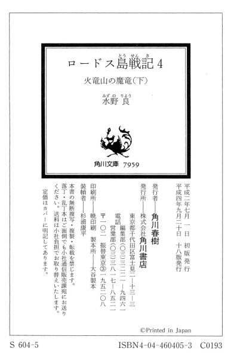

| [水野良] ロードス島戦記4 | |
| 水野良 | |
| (2015) | |
|
ロードス島戦記４ 火竜山の魔竜（下）
水野良
|
目 次
第Ⅳ章 盗賊ギルド
第Ⅴ章 敗 北
第Ⅵ章 水竜エイブラ
第Ⅶ章 火竜山の戦い
あとがき
第Ⅳ章 盗賊ギルド
１
遠くから波の音が聞こえてくる。
ざあざあ、というざわめきが、規則正しく繰り返している。波が岩に当たって砕ける音が、ときおり激しく響く。
海の方から、潮を含んだ風が吹き寄せていた。その潮風が、盛夏の陽差しをあびて火照っていた身体をここちよくなぶっていく。風に乗って流れてきた磯の香が鼻についた。
いやな臭い。薄くそばかすが残っている鼻を飛えるような仕草をしながら、シーリスは考えていた。妙に鼻がむずがゆくて、くしゃみが何度も出そうになる。
それに、身に着けている高価な鎖かたびらが錆びるかもしれない。それも気にかかった。
おまけに街自体の雰囲気もね、とあたりの街並みを見渡しながら、シーリスは心の中で付け加えておいた。
顔だけを巡らせて、シーリスは冒険者ふうの格好をした男女が五人、遅れずに付いてきているかどうかを確認した。
すぐ後ろに続いているのは、板金鎧に身を包んだ若い戦士だった。古くからの傭兵仲間、オルソンである。無表情な顔のまま黙々と歩いている様子からは、彼が怒りの精霊に取りつかれている狂戦士であることをうかがいしることはできない。だが、ひとたび怒りに支配されると、敵も味方も見境いなく襲いかかってくるのは、今でも間違いはないのだ。
それから、賢者のローブを身にまとった魔術師がふたりいる。紺色のローブを着た痩せた男がスレインであり、白色のローブを着て女と見まがうような長い金髪をしているのがセシルである。
そして、残るふたりは女性だった。ともに神に仕える神官である。大地母神マーファに仕えているレイリアは、スレインの妻であり、六英雄として有名なマーファの最高司祭ニースの娘でもある。一方、戦の神マイリーの侍祭シャリーは、フレイムの王都ブレードの街で新しく仲間となった。
目的はただひとつ。所有者に絶対的な権力を与えるという古代王国の宝物〝支配の王錫〟を手に入れることにあった。この魔法の宝物は、青竜の島に棲む水竜エイブラか火竜山に棲む魔竜シューティングスターのいずれかが守っているはずだった。
このドラゴンを倒さねば、目指す宝物は手に入らないのだ。しかも、同じ目的を抱いているマーモの黒騎士アシュラムが、自分たちより確実に数日は先行していることも忘れるわけにはいかない。
アシュラムが自分たちより先に支配の王錫を手に入れれば、ロードス島は彼と彼の率いる暗黒の島の民に支配されてしまうことになるのだ。
シューティングスターの方には、フレイム軍の精鋭と共にパーン、ディードリットのふたりが向かっている。シーリスたちが目指しているのは、青竜の島に棲む水竜エイブラの方である。
ブレードの街を立って半月あまり、不休の旅が続いた。総勢六人の一行は、ようやくライデンの街にたどりついていたのだ。
自由都市ライデンは、ロードス島最大の港街であり、貿易で栄える豊かな街として知られている。国王を持たず、六人の大商人からなる評議会が、街を統治していた。繁栄を証明するかのように、大通りの両側にはまるで砦のように大きな商館がずらりと並んでいた。どれも石造りの立派な建物ばかりだ。
しかし、その建物の手前には、汚らしい格好をした人々がたむろしていて、物乞いをしたり、ガラクタとしか思えないような品物を売りつけようと、大通りを歩く通行人に群《むらがっていた。
噂に聞いていたとおりの光景だった。彼らは、ロードス島の各地から平和を求めて流れてきた難民なのである。しかし、彼ら難民たちが大量に流れてきたことにより、皮肉にもライデンから平和が失われた。
ライデンの治安は今や無に等しく、盗みや人殺しさえ日常の出来事になりつつあった。
数日の後には、フレイムの傭兵隊長シャダム率いるフレイム傭兵隊がやってきて、乱れたライデンの治安を建てなおす手筈となっていた。しかし、傭兵たちが秩序回復の力になれるかどうか、シーリスは内心では疑っていた。
傭兵はもともと秩序などとは無縁な存在なのだ。シーリスは自分も傭兵だから、そのことがよく分かる。下手をすれば、野盗や人殺しが増えてしまうだけかもしれないのだ。
その予兆を感じているものか、ライデンの街全体に不気味な緊張感が漂っていた。それは、シーリスの着ている鎖かたびらをも貫き、肌に直接伝わってくるかのようであった。
シーリスたちの一行にも、愛想笑いを浮かべながら、何人もの難民ふうの男たちが声をかけてきた。しかし、彼らに施しをしたり、ガラクタを買い取ってやるだけの余裕は一行にはなかった。カシュー王からいくばくかの路銀を貰ってはいたが、これから先の事を考えるとむやみに使うわけにはいかない。
オルソンが施しを与えないでいいのか、とスレインに導ねていたが、北の賢者と呼ばれている痩せた魔術師は、首を振っただけで何も答えなかった。
オルソンは、スレインがブレードの街で難民たちに対して行った行為を覚えていて、そう尋ねたに違いない。別に皮肉ったわけではない。オルソンが皮肉を言うはずがないのだ。なにしろ、この戦士は感情が乏しいのだから。感情のないものが、あえて皮肉を言おうとは考えまい。
そのとき、またひとりの物乞いがこちらに目を付けたらしく、近づいてきているのにシーリスは気がついた。
「気に入らない」声に出して、シーリスはつぶやいた。
「何が気に入らないんだ」それを聞きとがめて、オルソンが声をかけてきた。
「この街のすべてがよ」
シーリスは、長年連れ添ってきた相棒にそう答えると、ぐるりと視線をあたりに巡らせた。
「陰気臭い奴ばかり。傭兵を雇うだけで自分は剣も握ろうとしない金持ち。逃げまわるしか能のない難民。どちらも気に入らない......」
「無理を言ってはいけませんよ。人が皆、あなたのように強いわけではないのです。たいていの人は死ぬのが怖いし、戦う力も持ってはいません。彼らを責めることなど誰にもできはしません」
そう答えたのは、オルソンではなくスレインだった。彼はオルソンのすぐ後ろにいたので、今の会話が耳に入ったのだろう。
シーリスは鼻を鳴らしただけで、何も答えなかった。彼の言葉が、つまらない一般論のように思えたからだ。他人の言葉を借りて話すような人間が、シーリスはいちばん嫌いだった。
そして、すぐそばまで近寄ってきていた物乞いに向かって、鋭い視線を叩きつけるのだった。薄汚れた難民ふうの男は、備えたようにもといた大通りの片隅に戻っていった。
スレインはやれやれというように首を振り、ため息を洩らした。
「みんな疲れているようですね。夕食にはまだ早いですが、宿を決めて休みましょう」スレインがそう提案した。
「それがいいと思う」自分の役目を思いだして、オルソンはスレインの言葉に賛成した。
彼はこの一行のリーダーである。今のような決定は、本来ならリーダーである彼が行わねばならないことなのだ。
ブレードの街から旅立つときに、彼はこの一行のリーダーに選ばれたのだ。彼に取りついている怒りの精霊の束縛から逃れさせるため、というのが理由だった。彼自身は反対したのだが、結局は皆に説得されて、慣れない役を引き受けることになった。
それから半月ばかり、幸いなことに何の事件にも遭遇することなく、平穏にライデンまで到着はした。しかし、旅の疲れは全身にたまっていた。最後の三日ほどは山越えだったので、それがかなりこたえているようであった。
「あそこにしよう」
オルソンは大通りを見渡して、一軒の宿屋を見つけだした。〝海竜亭〟という看板が入口のすぐ上に掲げられている。酒場も兼ねているようで、扉の前に立つと、中から陽気で騒がしい物音が聞こえてきた。
「場違いなぐらい明るい店ね」シーリスが感想を口にしながら、一行の先頭に立って、宿屋の入口の扉を押し開いた。
錆びた蝶番が軋んだ音を立てて、扉はゆっくりと開いた。たちまち、狂ったような喧騒が鼓膜を震わせ、むっとする臭いが鼻孔を刺激した。潮の臭い。汗の臭い。酒の臭い。獣脂の焼ける臭い。干し魚の生臭い臭いも混じっている。だが、物音の方はすぐに小さくなった。
店の中は天窓から差しこむ光で十分に明るかったが、遮るものとてない戸外の光に比べれば、それでも暗い印象を受けた。目が慣れるまでしばし時間がかかり、それから騒ぎが止んだ理由をシーリスたちは知った。
扉を開けて入ってきた彼らに、店中の客の視線が注がれていたのだ。こちらを値踏みしようという視線がある。うさん臭そうに眺めている視線がある。奇異の目で見ている視線もあった。
シーリスはそれらの視線を気に止める様子もなく、空いている席を求めて店中を見渡した。客の数は多かったが、思った以上に大きな酒場だったので、奥の方に八人ほどが座れる円形のテーブルがまるまるひとつ空いていた。
シーリスは黙ったまま、立ち並んでいるテーブルを縫うようにそちらへ向かった。残りの五人も彼女の後に続く。
全員が席に着くと、ふたたび店の中はもとの喧騒に包まれていた。
こちらのテーブルでは情を交わした女の数を競っている者たちがいるかと思えば、あちらでは金貨を投げてその表裏を賭けている者たちがいる。かと思えば、入口にいちばん近いテーブルでは、曲芸まがいの躍りを踊ったり、陽気な歌を嚏っては見物人から喝采と共にお金を集めている吟遊詩人の少年がいた。
浅黒い男の姿が目立つのは、客のほとんどが船乗りだからだった。
船乗りの大半は、上半身はまったくの裸で、膝のところまでの短いズボンを履いているだけだった。頭に白布をかぶっている者が多く、そこから陽に灼けて赤茶けた頭髪が顔を覗かせていた。
「飲み物だけでいい？ それとも食事も持ってこようか？」
店の下働きらしい若い娘がシーリスたちのテーブルにやってきて、快活な声で注文を聞いてきた。
「二階を使わせてもらいたいんだ」と、オルソンがいつもの無表情な顔で答えた。
「泊まるのかい？」と、娘は尋ねかえしてきた。
そうだ、とオルソンはうなずいて、十人ぐらいが寝泊りできるという大部屋をひとつ押えてもらった。そして、飲み物と食事も同時に注文し、数枚の金貨を机の上に投げだした。
それを無雑作につかみとると、娘は明るい返事を残して、カウンターの方に歩みさった。
「おやっ？」そのとき、スレインがシーリスの肩ごしに、入口近くのテーブルに目をやりながら、怪訝そうな声を上げた。
「何かありまして？」尋ねてきたのは、レイリアだった。
「ええ、向こうのテーブルの上で踊っている人がいるでしょう。あれは、グラスランナーではありませんか」
「グラスランナー......ですか？ あの草原の妖精とかいう」レイリアは答えて、スレインの視線の先に目をやった。
そこには、テーブルの上を跳ねまわるように踊っている人影があった。背が低いので、おそらく子供だろう、と誰もが思っていたのだ。
だが、注意深く観察してみると、耳の先端がまるでエルフのようにとがっている。エルフと人間から生まれたハーフ・エルフのようにも見えたが、小太りのスタイルがその考えを打ち消した。エルフの血が混ざった者は、もっと華奢な身体になるものだ。
彼らグラスランナーは、成人でも人間の子供ぐらいの大きさにしかならない。今、踊っている吟遊詩人もおそらく子供ではなく、れっきとした大人に違いなかった。
「このロードス島にはグラスランナーは住んでいません。大陸から渡ってきたのでしょうか？」
「だから、不思議に思ったんです。ですが、彼らグラスランナーは定住の習慣を持たない種族と聞いていますからね。おそらく、あなたの言うとおり、北の大陸からロードス島まで旅をしてきたのでしょう」
スレインはそうレイリアに答えると、自分は納得してしまったのか、運ばれてきた飲み物に手を付けて、グラスランナーから視線を外していた。
「楽しい踊りね」
そうつぶやいたのは、シャリーだった。彼女は腰を浮かせながら、初めて見る草原の妖精の踊りに見入っていた。
「そんなにありがたいものなの？」シーリスも興味にかられて後ろを振り返った。
草原の妖精はテーブルの上でリズムに合わせて足を踏みならしながら、海に伝わる不思議な伝説の数々を唄っていた。なかなか堂に入った唄いっぷりであった。
「なるほどね、うまいもんだわ。こっちに呼ぶ？」シーリスはシャリーに声をかけた。
神に仕える者という先入観から、司祭といえば頭の固い人間ばかりだとシーリスは決めつけていたが、このシャリーという女性には、旅の間からずいぶん気さくなところを見せられ、けっこう好感を抱いていた。
自分を無理に押えたところがなく、自然に生きているような印象を受けるからだ。シーリスの上品とはいえない冗談にも、レイリアのように眉をひそめたりせず、面白ければ素直に笑ってくれるし、あまり説教じみたことも言わない。それに、けっこう過激なところもあって、怒ったときには容赦のないタイプだと見えた。つまるところ自分はこの女司祭とは共通するところが多いのだ。
考えてみれば、戦の神の女司祭と女戦士の自分である。考え方など似ていて当然だといえなくもない。
「そこの吟遊詩人！」
シーリスの誘いにシャリーはどうしたものかと迷った様子だったが、シーリスは勝手に右手を上げると大声を出してグラスランナーを呼んだ。
そのシーリスの呼びかけに小太りの妖精は、顔をこちらに向けて、片目をつぶって了解した旨を伝えてきた。
そして、グラスランナーはしばらくしてから、シーリスたちの座るテーブルにやってきた。そのときには、すでに食事も運ばれてきていて、皆くつろいで食事や飲み物を楽しんでいるところだった。
「呼んだ......よね」グラスランナーはシーリスのところにトコトコと歩いてくると、小首をかしげるような仕草をしながら、そう言った。
「シーリス。吟遊詩人さんが来てくれたわよ」シャリーが食べるのに夢中でグラスランナーがやってきたのに気がつかないでいるシーリスに声をかけた。
「呼んだら、すぐに来なよ」シーリスは振り返って、そう文句を言った。
「一曲終わるまで、席を離れられるもんか。こっちだって商売なんだから」グラスランナーは、もとから丸い栗色の目をいっぱいに見開いて、そう抗議した。
「こいつは自分勝手な女なんだ」と、セシルが小気味よさそうな顔をしながら、グラスランナーに教え聞かせるように言った。
「そうみたいだね、ねえさん」グラスランナーが相槌を打ちながら答える。
「失敬な。オレは男だぞ！」
顔色を変えてセシルが小さな吟遊詩人に怒鳴る。当然のように、シーリスは悪意を込めて笑った。
まぎらわしい髪をしているからよ、とシーリスは意地悪くセシルに言ってやった。
若い魔術師は、さすがに反論する言葉が思いつかなかったのか、もごもごと口を動かしただけで、悔しそうにそっぽを向いてしまった。
「へえ、そうなの？ どうりで声が太いと思った」
グラスランナーは悪びれた様子もなくセシルにそう言うと、シーリスに向かって歌にしようか、踊りにしようかと尋ねてきた。
「歌にして。それもおもいっきり陽気な歌がいいわ」シーリスは答えて、金貨を一枚、小さな吟遊詩人に投げて渡した。
「ありがとう、ねえさん」その金貨をうまく空中で受け取ると、グラスランナーはやや癖があるものの、よく訓練された声で陽気な歌を唄いはじめた。
それは間抜けな騎士の怪物退治を題材にしたもので、庶民の間で親しまれている歌だった。小さな吟遊詩入の歌声は、酒場のざわめきさえも伴奏にしてしまったかのようで、旅に疲れた一行の心に小気味よく沁みこんでいくのだった。
２
グラスランナーの吟遊詩人は、名前をマールと名乗った。
スレインが思ったとおり、商船に乗りこみ、北のアレクラスト大陸からこのロードスの地に渡ってきたとのことだった。
「ある剣士の伝説を完成させたくってね」と、グラスランナーはロードス島にやってきた理由を教えてくれた。
そして、今は一緒のテーブルについて、飲み物を飲んだり、食べ物を手に取ったりしている。誘ったのはシーリスである。彼女は、マールの唄いっぷりには、ずいぶん感心していた。金貨をはずみ、長い歌を三曲も唄わせたくらいなのだ。
「珍しいな。シーリスがそんなに他人を褒めるなんて」
オルソンは食事もあらかた終わって、くつろいだ姿勢になっていた。だが、身動きの取りにくい板金鎧着ているため、その座り方にはどこか不自然な感じがある。
「褒めるに値するだけの人間が少ないだけよ。でも、彼の歌は本物ね。カノンの宮廷付きの吟遊詩人よりうまかったわ」
シーリスは答えながら、やはり重い鎖かたびらを着こんだ身体を窮屈そうに動かしていた。
「上に行って、着替えてきたらどうです。今日はこのまま休むのですから」その様子を見て、スレインが金属鎧を着ている者たちに言った。
「そうですね」シャリーがうなずいて、立ち上がった。
彼女もマイリーの紋章が入った神官衣の下に鎖かたびらを身に着けている。戦の神というだけあって、マイリーの神官は戦士としての訓練を積んでいる者が多い。そういった神官たちは、ふつう神官戦士と呼ばれていることをスレインは知っていた。
実のところ、レイリアも戦士の訓練を受けているのだが、今は鎧を身に着けてはいない。護身用に小剣を一本、持参しているだけである。
だが、スレインは知っている。かつてレイリアがカーラに支配されていたとき、彼女がパーンとディードリットのふたりと剣を交え、まったく引けを取らなかったことを。
それは、カーラの力ではなく、レイリア自身が身につけていたものだ。もちろん、パーンの剣技はあの頃とは比べるべくもない。しかし、彼女の腕が劣っていないことも、また間違いないのだ。
スレインはレイリアと夫婦喧嘩をしないことを、自らの安全のためにも心に誓っている。もっとも、一緒になってこのかた、彼女とは言い争いをしたことさえなかったのだが......
結局、スレインとレイリア、そしてセシルの三人がその場に残り、後は二階に上がって着替えてから出直してくることになった。かさばる荷物などは、部屋に鍵をかけておいて、今日中にカシュー王の勧めどおり、盗賊ギルドに行き、ギルドの長に協力を依頼する予定を立てた。
「楽しかったよ」
去り際にシーリスは吟遊詩人のマールにそう声をかけ、もう一枚金貨を手渡した。
「僕もだよ」マールは、右手を振って挨拶を返した。
そして、木製の螺旋階段をギィギィ踏みならしながら、三人が二階へと姿を消していった。
それを見送ってから、
「今日はまだ早いけど、けっこう稼いだから、僕は寝ぐらに帰るとするよ」と、マールが言った。「飲み物ごちそうさま。いい旅をね」
「伝説の剣士とやらに巡りあえることを祈っていますよ」
「ありがとう、魔術師さん」
マールはスレインに向かって、ぺコリと頭を下げ、身体で弾みをつけるようにして、椅子から勢いよく立ち上がった。
と、その拍子に彼は椅子に足をぶつけ、バランスを崩してしまった。そして、よろけたように隣の椅子に腰かけていたセシルにぶつかった。
「大丈夫かい」セシルは小さな吟遊詩人を助け起こしてやった。「軽技が得意の吟遊詩人が転んだりしたら、商売に響くぞ」と、変な忠告もする。
「そのとおりだね。ありがとう、おにいさん」マールは子供のような笑顔を浮かべると、もう一度お辞儀をして立ち去ろうとした。
すると、隣のテーブルから突然声がかかってきた。
「たいした腕をしてるじゃねえか」
あまり品が良いとはいえない口調である。その話し方は、スレインにある人物を連想させた。昔、一緒に旅をしたことがある男。今は、灰色の魔女カーラに心を奪われているはずの男だ。
ハッとして声の方を見ると、そこにはいつのまにか革の服を着た三人組の男が、酒を酌みかわしていた。盗賊ギルドの人間だ、とスレインはこの三人組の正体をすぐに見てとった。我知らず、複雑な表情が顔に出た。
マールの歌に気を取られていて、隣のテーブルの客が船乗りの一団から入れ替っていたのに気がつかなかったのだ。
「あれっ、僕に用なの？」マールは丸っこい顔を三人組の方に向けて、明るい声で尋ねていた。
「ごまかそうたって、無駄だぜぇ。オレたちも商売がら、そういうことにゃ目が利くんでね」いやらしい笑いを浮かべながら、三人組のひとりが左手を差し出して、マールにそう言った。
「懐に入れた物を出しな！」
そして、いきなり語気を荒らげて、男は怒鳴った。
セシルは男の言葉が意味しているところを悟り、腰に吊るしていたはずの革の小袋を手で探った。そこには、彼の全財産──といっても数個の宝石と十枚ばかりの金貨しかなかったのだが──が収められていた。
「ない！」セシルは茫然となった。
「そうともよ。そこのガキは、吟遊詩人だけが商売じゃないってことよ。しかし、いけねぇな。盗みをするなら、まず通さにゃならねぇ筋ってもんがあるだろうによ」
男は立ち上がって、ゆっくりとマールの方に近づいていった。残るふたりも、男に続いた。そのうちのひとりが、腰から切れ味のよさそうな短剣を引き抜いた。
「やばい......みたいだね」マールがばつの悪そうな顔をしながら、一歩二歩後ずさりした。
「おまえも盗賊の端くれなら、ギルドの掟は知っているよな」三人組の男たちは、マールに向かってゆっくりと詰めよっていく。
「スレイン師！」セシルがどうしたものかと、スレインに意見を求めてきた。
スレインは首を振って、何も答えなかった。ただ、万が一のことを考えて、そばに立てかけてあった賢者の杖を手元に引き寄せただけだった。
スレインが何も答えなかったので、セシルはどうしたものか判断もつかない様子で、とりあえず自分も賢者の杖を手に持つことにした。
「おめぇたちは引っ込んでなよ。被害者なんだからよ。余計なお節介は、寿命を縮めるだけだぜぇ」
ふたりの動きに気が付いたのだろう。先頭の男がドスのきいた声で警告を発してきた。
「ここには人がたくさんいます。争うなら、外でおやりなさい！」
レイリアが毅然と立ち上がって、盗賊たちにそう言った。
盗賊たちはレイリアの静かだが迫力のある声にやや気圧されたようだが、その言葉に耳を貸すことはなかった。
後ろのふたりが物音も立てずに左右に広がって、グラスランナーを取り囲み、壁際に追いこんでいった。
「おやめなさい！」レイリアがもう一度言い、マーファの名を唱え、神聖魔法の呪文をかけようとした。
「いけません、レイリア。彼らは盗賊ギルドの人間です。ここで盗賊ギルドの人間といざこざを起こすわけにはいきません。カシュー王が彼らの協力を受けるようにと言っておられたでしょう。あの方がそう言った以上、何がしかの理由があるはずです。それを確かめるまで、ギルドとの関係を悪くするようなことは避けないと......」
「しかし、あなた！」レイリアは反論しようとした様子だったが、そのとき三人組のうちの先頭の男が、マールに襲いかかっていた。
まるで悠然と空を舞っていた鷹が、獲物に襲いかかるときのような素早さであった。
男の背中に回していた右手の中から手品のように短剣が躍りでて、小さな吟遊詩人の胸もとめがけて、するりと伸びていった。
「うひゃあ！」
マールはおどけたような叫び声を上げながら、素早くしゃがんでそれをかわした。そのまま獣のように四つんばいになると、野兎のように前に飛び跳ね、男の足もとを擦りぬけた。
「逃すな！」振り向いて、先頭の男は後ろのふたりに声をかける。
「おうよ！」男のうちのひとりが答えて、床を転げるように移動しているマールを蹴り飛ばそうとした。
わあわあ叫びながら、マールは手近にあった椅子の脚をつかむと、男と自分の身体の間に引き入れた。
「痛ぇ！」
男はその椅子をむこうずねで蹴飛ばすかっこうになった。稲妻に打たれたような激痛が足から全身に走り、男は膝を抱えて床に転げた。
が、その隙にマールの前にもうひとりの盗賊が立ちはだかっていた。両手を広げて、ここから先は通さないとばかり、身構えている。
その手にぎらりと光る小 剣が握られていた。
「くたばりやがれ！」罵声と共に、その小剣が振りおろされてきた。
今度は、マールはそれを避けようとはしなかった。懐に小さな手を入れると、そこから細身の短剣を引き出し、その刀身で受け止めたのだ。
激しい金属音が酒場中に響き渡った。
すでに酒場の中は騒然となっていて、他の客はこの奇妙な戦いを遠巻きに見物している。気の荒い船乗りたちは、顔にうすら笑いさえ浮かべており、あきらかにこの騒ぎを楽しんでいる。
誰もこの喧嘩を止めようとはしていなかった。
「あなた！」
レイリアがふたたびせっぱつまった声で、スレインに迫った。
「スレイン師！」
セシルも自分の財布をすられたことも忘れて、持ち前の正義感から吟遊詩人を助けたいと考えているようだった。
スレインは思わぬ事の成り行きに戸惑っていた。カシュー王の言葉だけではなく、スレインは盗賊ギルドの恐ろしさをよく知っていた。だから、盗賊ギルドとはできるだけ関わりあいになりたくない。ましてや揉め事を起こすなど絶対に避けたいことだった。
だが、揉め事は思いもかけないところからやってきた。
スレインは迷った。彼とて、草原の妖精を助けてやりたい気持ちに変わりはなかったからだ。
「仕方ありません。しかし、彼らを傷つけてはなりませんよ」
スレインは肩をすくめながら、自らは危険を避けるために壁際まで下がった。
「そうこなくては！」
セシルは嬉しそうな表情で振り返り、巧妙に逃げまわるマールとそれを捕まえんとやっきになっている三人組の盗賊たちを見据えた。
右手には賢者の杖が力強く握られている。その杖はセシルが一人前の魔術師であることの証しである。
セシルの唇が踊り、上位古代語の魔法語が紡ぎだされていった。
「眠りをもたらす安らかなる空気よ！」そして、彼は呪文を完成させた。
マールと盗賊たちが争っているあたりの空気に一瞬、白い霧がかかったような変化が生じた。
それは、五百年前に巨大な帝国を築いた魔術師たちが、生みだし発展させてきた魔法と呼ばれる神秘の力の発動であった。
その霧は次の瞬間には晴れていたが、確実に効果を発揮していた。三人組の盗賊たちが床の上に大きな物音を立てて倒れ伏し、意識を失っていたのだ。
それだけではない。セシルの呪文は近くで見物していた店の客を数人巻き添えにしていたのである。
スレインは、思わず目を覆ってしまっていた。
それはレイリアにしても同様だったらしく、困ったような視線をスレインに向けていた。
そんな周囲の反応などまったく気付かず、当のセシルは勝ち誇ったように胸を張って立っている。
「スレイン師、みごと傷つけずに事を収めましたよ」
「いや、まったくだよ。ありがとう、おにいさん」
そう言ったのは、マールだった。彼はまわりで三人の盗賊たちが思い思いの格好で倒れているのを面白そうに見回していた。中のひとりが間の抜けたいびきを立てている。
「今のは〝眠りの雲〟の呪文だよね。初級の呪文だけど、強い力を持っているって聞いているよ。このロードス島の魔術師ギルドでも、この呪文は教えてくれるんだ」
感心したように言いながら、マールはスレインたちの方に弾むように歩いてきた。
「なぜ、おまえは眠っていないんだ」
あきれたようにセシルが、グラスランナーに言った。
「運が良かったんだよ、きっと。魔法の力ってやつは誰もが持っているものだもの。それが他の人からかけられた魔法を無効にするように働くときだってあるのさ。知らなかった？」
「オレは魔術師だぞ、それぐらい知っている！」セシルはむきになって答えた。
「そりゃそうだよね」
マールは事もなげにそう言うと、懐の中からセシルの財布を取りだした。
「お礼にこれは返してあげるね。本当は盗んでしまった時点で、僕の物になっているんだけど」
「当たり前だ」
セシルはもぎとるように自分の財布を取り返すと、ローブのポケットの中に無雑作に突っこんだ。
「ところで、あの人たちはどうしたものでしょう」
レイリアがスレインのそばに寄ってきて、うかがうように顔を覗きこんだ。
「まったく、どうしたものでしょうね。起こせば、また厄介なことになるでしょうし、かといってこのままにしておくのもまずい」
スレインは、ため息をついて考えこんだ。
騒動が終わったものと決めつけて、まわりの見物人が自分のテーブルのところに戻りはじめていた。何人かはスレインたちの方に非難の視線をあびせながら、魔法で眠ってしまった仲間を抱きかかえるように、自分たちのテーブルのところまで運んでいる。魔法の効果が切れ、運んでいるうちに目覚める者もいた。
「いずれにせよ、この宿屋からは追いだされるでしょうね」
見物人たちが去った後、店の主人が怒りで顔を真っ赤にして立っているのに、スレインは気が付いたからだ。
「そのようですね」レイリアも悲しげに微笑んでいた。
「なぜですか？ わたしたちは悪いことなどしていません」スレインの言葉に、セシルは憤然とした。
「したのですよ。無関係なお客まで魔法で眠らせておいて、何が悪いことなどしていませんです。あなたには、魔法以前に分別というものを教えないといけないようですね。その点においては、シーリスの指摘はもっともですよ」
「しかし、わたしは......」
「言い訳しても駄目ですよ。とにかく、二階にいる三人を呼んできてください。そして、眠っている方々をお起こしして、盗賊ギルドまで案内してもらいましょう。おそらく宝石のふたつみっつも渡してあげれば、彼らの怒りも収まることでしょう。それから、吟遊詩人のマールさんにも一緒に来てもらいますよ。けじめはつけないといけませんからね。土地の盗賊ギルドに挨拶してお金を渡してさえおけば、盗賊はどこで仕事をしても構わないと聞いていますからね」
「よく知っているねえ」感心したようにマールは首を横に振った。「魔術師ってのは盗賊ギルドの掟まで知っていなくちゃいけないのかい？」
それからマールはぶつぶつと反論めいたことを言ったが、最後にはあんたたちはいい人みたいだから、と何とか納得してくれた。
「好きで覚えた訳ではありませんよ。盗賊ギルドとは何かと縁がありましてね」スレインはそれがさも疎ましいことのように、不快感をあらわにした。「まったく、カシュー王も何で盗賊ギルドなんかに......」
せめて、その理由を教えてくれてもよかったではないか。しかし、彼は楽しそうな顔をして、とにかく行ってみろ、としか言わなかったのだ。
スレインが盗賊ギルドの名前を聞いて脅えたような顔をしたので、それを面白がっていたのはあきらかだった。カシューの悪癖である。真面目な人間や冷静な人間を見ると、からかいたくなる性分なのだ。
自分など平静を装っているだけの人間なのに、とスレインは心の中でつぶやいた。彼には傭兵隊長のシャダムという腹心がいるが、忠告を与える人間がもう少し必要なようだ、とふとそんな考えがスレインの脳裏に浮かんだ。
とにかく、今はカシューの言葉を信じるしかない。盗賊ギルドの長が、自分たちに惜しみなく協力してくれるような人物であれば、今の事件も大目に見てくれることだろう。
スレインはいつになれば自分が気苦労から解放され、のんびりと魔術の勉強に打ちこめるようになるのだろうと思い、その望みが達成されそうな様子もない現実に深々とため息をもらした。
３
盗賊ギルドは、ライデンの南の街外れにあるとのことだった。
南のモスヘと続く街道にそってしばらく進み、途中で路地に入ってきつい坂を登り、うら寂しい一画に案内された。
目の前に〝茶色の山地〟ルラウザのなだらかな稜線がすぐ間近まで迫っていた。振り返ると港の全景と入り組んだ海岸線をのぞむことができた。
はるかかなたにある水平線が、自分たちが今いる場所と同じ高さにあるような錯覚を受ける。ちょうど水面が水平線から海岸線まで下り坂になっているようで、海の水がこぼれ落ちてこないのが、不思議な気さえする。
「ここだ」
灰色の小さな建物の前まで来ると、三人組のひとり、最初にマールに飛びかかっていった男が、立ち止まってそう言った。後のふたりは仕事を続けるため、街中に残っていた。
「ふうん、意外に小さい建物ね」
シーリスは、盗賊ギルドの建物が民家ぐらいの大きさしかないのを奇妙に思った。これでは、大人が十人も入れば、窮屈なことだろう。それに、漆喰を塗った外壁は、黒緑色の苔がむし、まるで廃屋のような雰囲気だった。
ライデンの盗賊ギルドは大きな勢力を持っていると聞いていたから、建物の貧弱さは驚きでさえあった。
入口のところには、二段ばかりの石段があり、そこに物乞いらしい身汚い男が腰かけていた。おそらく、盗賊ギルドの門番なのだろう。
「どうしたい、ジェッド。後ろの連中は？」
物乞いがそう声をかけてきた。
「お頭はいるかい？」ジェッドと呼ばれた男は答え、建物の方に顎をしゃくってみせた。
「いるぜ。だが、そいつらも一緒なのかよ」
「なあに、大丈夫。こいつらは、お頭に用があってきたんだとよ。何でもフレイムの国王の紹介なんだと」
「フレイムの国王......だって」門番は一瞬、あっけに取られたみたいだったが、すぐに何かを思い出したらしく、大きくうなずいて納得した様子だった。
「それなら、いいだろう。お頭は自分の部屋にいるはずだ」
答えて門番は入口の扉を開いた。
「じゃあ、通してもらうぜぇ」
ジェッドはシーリスたちに付いてくるように手で合図をし、自分はさっさと中に入っていった。
建物の中は、外とはうってかわって小綺麗なものだった。玄関から入ってすぐのところは、ちょっとした広間で奥に扉がひとつあった。部屋の両側に裸の女性の彫像が数体並んでいる。ドワーフが造った物らしく、本物の人間が、石化の魔力を持った魔獣によって、姿を変えられたかのようだった。
レイリアが同じ事を考えたらしく、近寄って像に手を触れている。
「どうでした？」と、シャリーがレイリアに尋ねる。
「彫像に間違いありません」レイリアは首を振って答えた。
ジェッドは、そんなシーリスたちの様子にはまったく無関心で、部屋の奥の扉を開けて、中に入っていった。
シーリスたちも、もちろん、後に続く。
そこは奥に窓があるだけのがらんどうの部屋だった。
「こんなところに案内してきて、どういうつもり！」
シーリスが腰の剣に手を伸ばしながら、すごみをきかした声でジェッドを問いつめる。
「あわてるんじゃない。盗賊ギルドが陽の当たる場所にあるわきゃないだろうが」
どういうこと、とシーリスは問いかえそうとしたのだが、その前にジェッドは部屋の真ん中でしゃがみこんで、床板に手を伸ばしていた。
どうやら、床板の一部がはずれるような仕掛けになっているようだ。それをはずすと、下から金属製の取っ手が姿を現わした。ジェッドが取っ手を力をこめて引きあげると、床板が音を立てて持ちあがり、ぽっかりと方形の穴ができた。
よく見ると、下に続く階段になっている。
「なるほど、さすが盗賊ギルドね。地下にあるってわけだ」
「そういうことよ。だが、他言は無用だぜぇ。もっとも、公然の秘密ってやつで、ライデンの人間なら、たいていこの事を知っているがよ」
そんなものだろう、とシーリスには彼の言う事は理解できた。盗賊たちは、こちらが普通に生活していれば、別に危険な存在ではない。豊かといえない者たちにとっては特にである。
階段は地下へと続いていた。地階はまるで地下道のような廊下が縦横に走っており、地上の建物の敷地とは比べようもないぐらい大きかった。
何人かの盗賊とすれちがったが、その度にシーリスたちは、怪しげな目付きで見られ、何者かと問いただされた。
そのつど、ジェッドはシーリスたちがフレイム国王の紹介でやってきたことを告げた。それだけで、相手は納得したので、カシュー王の話がでたらめではないことだけは確信できた。
廊下を三回ばかり折れて、豪華な両開きの扉の前まで来ると、ジェッドはここが長の部屋だと、親指で二、三度指し示した。
そして、息を大きく吸って呼吸を整えてから、ジェッドは扉に向かって声を上げた。
「お頭、ジェッドです。お頭に面会したいって人間を連れてきやした。フレイム国王の紹介だそうです」
「入りな」扉の中からくぐもった声が聞こえてきた。
「失礼しやす」ジェッドは扉に向かって小さく頭を下げてから、取っ手に手をかけ手前に引いた。
扉はほとんど音も立てず開いた。
「失礼します」
スレインもお辞儀をして、そのまま視線を上げることなく、ジェッドに続くように部屋の中に進みでた。そして、恐る恐るスレインは顔を上げた。
「あなたは！」
そして、盗賊ギルドの長を目の当たりにして、スレインは絶句してしまった。
盗賊ギルドの長は、装飾の多い豪華な椅子に腰を下ろしていた、限りなく白金色に近い金髪が、ゆるやかに巻いていた。やや長めのその髪を、ギルドの長は赤いバンダナを使って、額にかからぬようにしていた。
青い貴石のような瞳が、驚きの色を隠すことなく見開かれ、スレインを凝視していた。
その隣に男がもうひとり立っていた。こちらは屈強の戦士だった。まるで食人鬼を連想させるような巨漢である。上半身は肩からたすき状に革製のベルトをかけているだけで、剥きだしになった筋肉がみごとな盛りあがりを見せていた。血管の浮きでた赤銅色の肌に、白っぽい傷跡が縦横に走っており、この戦士の戦歴をありありと物語っていた。
スレインの脳裏に懐かしい思い出が次々と浮かんできた。それは、砂漠の蛮族〝炎の部族〟と戦った三年前の記憶だった。
「シュード......。いや、フォースでしたね。それに、マーシュも。お久しぶりです。まさかこんなところでお会いするとは......」
「それは、こっちの台詞だよ。スレイン」
フォースの端正な顔に浮かんでいた驚きの色が、やがて笑みに変わっていった。そして、この盗賊ギルドの長は、机の上に両手をついて、ゆっくりと立ち上がった。
「フォースの言うとおりだぜ」
マーシュがどすどすと床板を踏みならしながら、スレインのところまでやってきて、彼の肩に逞しい右手を置いた。
フォースもすぐにやってきて、スレインと三年ぶりの再会を喜びあった。
そんなスレインたちの様子を眺めながら、事情を知らない者たちは、唖然としていた。
「わたしたちにも、事情を聞かせてもらえないかしら」
スレインたちが勝手に盛りあがったので、シーリスはかなり気分を害しているようだった。シーリスの冷然とした声に、フォースがぎくりとした様子を見せた。そして、反射的に彼女から半歩ばかり身体を遠ざけていた。
「あいかわらずみたいですね」
スレインはフォースが女嫌いだったことを思い出した。
「こればっかりはな」
フォースは苦笑いを浮かべてスレインに答え、彼の道連れをひとりずつ観察していった。スレインの妻であるレイリアは、スレイン同様よく知っていたし、若い魔術師も顔だけは覚えていたが、後の四人はまったくの初顔だった。
「ライデン見物にやってきた訳じゃなさそうだな。ま、立ち話もなんだから、場所を変えよう」
そう言ってフォースは、扉の前に進みでると自分に付いてくるように指で合図した。そのときでさえ、この端正な顔をした盗賊ギルドの長は、女性には三歩以上近づくことはなかった。
４
別室に移ったスレインたちは、お互いに仲間を紹介しあった。
海竜亭での騒ぎについては、マールがライデンの盗賊ギルドに入会金を支払うことで決着がつき、マールは不承不承ながらも納得し、高価な宝石を一個、フォースに差し出した。
その件が落着すると、スレインはマールに帰っていいですよ、と言った。だが、マールはそれを不満とした。
スレインたちの話が面白そうだと思ったからだった。吟遊詩人でもある彼の血が騒いだのだろう。どうやら、スレインたちのことを、どこかの国王の密偵らしいと目星をつけたようだ。
あながち誤解だとは言えない。
マールは自分も話に加えてくれ、と頑強に主張したのだが、さすがにこればっかりは認めるわけにはいかず、スレインたちは彼を部屋から追いだしてしまった。
それから、話は三年前に別れてからのフォースたちの活躍ぶりに移っていった。
炎の部族との戦いの後、フォースはマーシュと一緒に、故郷であるここライデンヘと帰ったのだ。フォースは、孤児だったのを盗賊ギルドの長だった養父に拾われ、育てられたのだ。同じような境遇の兄弟がフォースの他に三人いた。
その話は、スレインも聞いたことがあった。その養父が手下の裏切りにあい、殺されてしまったこと。裏切者は新しい長となり、フォースたち兄弟に刺客を差し向けてきたこと。
ふたりの兄は、その刺客の手にかかり、残ったフォースとすぐ上の兄サーディーは、名前を変え、フレイムの傭兵隊に加わり、刺客の目を逃れてきたのだ。だが、その兄サーディーは、フォースの身代りとなって、砂漠の魔獣〝砂走り〟に殺されてしまった。
それが、フォースに決断を下させたのだった。フォースは傭兵仲間だったマーシュの手を借りて、裏切者を倒し、養父と兄弟たちの仇を討つべく、ライデンに舞いもどったのだ。
「で、オレたちはその復讐を果たしたってわけさ。裏切者の新しい長を快く思っていなかった者も多かったし、それにカシュー王がいろいろと協力してくれたおかげでな」
フォースは、そう話を締めくくった。そして、これでサーディーも浮かばれたというものだとひとりつぶやいた。
「だから、カシュー王には借りがある。それにスレインの頼みなら、どんなことでも協力してやるさ。遠慮せずに言ってくれ」
「そうですか、それでは遠慮せず......」今度は、スレインがフォースに、別れてからのことを説明する番だった。
アラニアの内戦のこと。ザクソンの村の独立のこと。そして今度の旅に出るにいたった理由。マーモの騎士アシュラムと彼が狙っている魔法の宝物、支配の王錫のこと。そして、話は、パーンとディードリットが現在、カシュー王と共に火竜山の魔竜シューティングスターと戦っていることにまで及んだ。
「パーンたちはあの古 竜と戦っているのか！」
スレインから話を聞いたフォースは、スレインの途方もない話に圧倒されていた。
炎の魔神エフリートとの戦いでさえ、命がけの危険きわまりないものだったのに、今度は最強の魔獣であるエンシェント・ドラゴンを相手にしようというのだ。しかも、同じ目的を抱いてマーモの〝竜殺し〟が動いているという。
「狂気の沙汰だぜ！」マーシュがたまらず叫んだ。
「どう考えたって勝ち目はねぇ。アシュラムって野郎がドラゴンに負けることを期待するしかないぜ。そうでなければ、カシュー王自らにお出まし願うかだ。あの王なら、剣対剣の戦いなら、誰とやったって負けやしないからな」
「もっともです。しかし、一国の王ともなれば、簡単に動くわけにはいきませんからね。それに、わたしはもうひとつ恐れていることがあるんですよ」
「恐れている？」フォースが眉をぴくりと動かした。
「ええ。カシュー王が野心的な人だとは思っていませんが、パーンほど純粋でないのも間違いありませんからね。自らが支配の王錫を手にしたとき、その力を使わないという保証がどこにもないんですよ。パーンはカシュー王なら大丈夫だって言うんですがね。わたしには、どうも」
「しかし、スレイン。今ここにいる人間だって、実際にその宝物を手に入れたとき、欲に目がくらまないとは限らないぞ。何しろ目指すお宝は、ロードス島、いや、この世界全体が手に入るかもしれない代物なんだからな」
「フォースの心配はもっともですよ。ですが、問題の宝物には所有者を選ぶという伝説がありましてね。力なき者が手にしたときは、所有者自身を滅ぼすのだそうです。真偽は分かりませんが、古代王国時代に作られた強力な魔法の品々には、たいてい護りの魔法がかけられているものですから、おそらく真実と考えてよいでしょう。さて、この中で自分を本物の勇者だと断言できる人がいますか？護りの魔法に打ち勝ち、宝物の魔力を自分の手にできる人がいますか？賭けるものは自分の命なのですよ」
スレインがそう問いかけて、室内にいる一同を見回した。スレインの視線を受けた者は、皆、首を振ったり、苦笑いを浮かべたりした。
「というわけです。情けない話ですが、わたしたちぐらいで、ちょうどいいんですよ」
「だが、パーンは、あいつは本物の勇者かもしれないぜ。それにディードリットだって、エフリートを押えこんだぐらいの実力の持ち主だ。それに、あんたやレイリアだって、勇者の資質は十分にある」
「わたしがですか？」フォースの言葉は、スレインには思いもよらないものだった。
「大丈夫ですよ。わたしは臆病ですからね。命を賭けてまで、自分の資質を試そうとは思いません。それにロードス島であれ、世界であれ、支配したいなどと考えたことだってありません。妻のレイリアもマーファの信者です。人を支配するなど大地母神の法に反した行為をするはずがありません。ディードリットにしても、ハイ・エルフなのですから、人間の世界の支配にはまったく興味がないでしょうね。問題なのはパーンぐらいですが、あの戦士がロードス島を支配したいのなら、それはそれで構わないような気もしますね。もっとも、知識の神ラーダの名にかけて、ありえないことだと断言できますけどね」
「オレもそれに関しては、スレインと同意見だ。何なら、全財産を賭けてもいいぜ」マーシュが、そう言って豪快に笑った。
「そいつは、賭けにならないな。ようするに、自分を勇者だと主張できない連中が、本物の勇者を相手に戦いを挑もうっていうわけだ。それ見ろ。やはり、勝ち目がないじゃないか」
フォースはため息をつきながら、自分がかけている長椅子に深々と身体を預けていった。
「どうする、マーシュ？」天井が見上げるような姿勢のままで、フォースはマーシュに尋ねた。
「ギルドの人間に話をするわけにはいかないな。だったら、オレたちふたりで手伝ってやるしかあるまい。留守は幹部の誰かに頼んで......」
「だが、例の海賊船の問題はどうする？ ライデンの盗賊ギルドの掟は、陸だけにあるわけじゃねぇ。ライデン沖の海でだって、勝手な盗みをさせるわけにゃいかない。それにせっかく一味の隠れ家を見つけてきたっていうのによ」
「なんですか、その海賊船とかいうのは？」スレインが興味にかられて、フォースに尋ねてみた。
「ああ、こっちの問題なんだがよ。他所から海賊船が一隻このライデンに出張ってきやがったんだ。このライデンの盗賊ギルドは、昔から海賊たちも仕切っていてな。勝手な掠奪は許していないわけよ。その掟を破りやがった他所者にどういう制裁を加えてやろうか、とフォースと相談していたところだったのさ。幸い、相手の隠れ家を手下が見つけだしてきたんで、そこを襲撃するつもりだったんだが......」
「何か、問題があるのですか？」
マーシュが言葉を濁したので、スレインが不審に思い尋ねた。
「つまり、盗賊たちは戦いには向いていないってことさ。ひとりひとりを闇に葬ることなら、得意なんだがな。オレたちが前の長を殺して盗賊ギルドを取り返したとき、戦いに長けた盗賊たちの多くが命を落としたもんでな。戦える奴が極端に少なくなっているんだ。それに、暗殺者たちをギルドから粛清したこともあってな」
フォースが、長椅子から上体を起こして、マーシュの代りに答えた。
「オレたちは、今、義賊団を目指しているんだ。オレたちは持っている奴からしか金を巻きあげない。そして、それを派手に使う。そうすりゃ、金の回り方も少しは平等になるってもんだ。それに、盗むときに人を傷つけたりするのも厳禁にした。同時に暗殺の請負いもな」
「しかし、いかにオレたちが義賊を目指しているからといって、掟破りまで見逃しちゃ逆効果ってもんだ。さっきのグラスランナーぐらいなら大目にも見られるが、問題の海賊は許すわけにはいかねぇ」
マーシュは力説した。
「つまり、その海賊たちと戦って、勝てるかどうかが問題なんですね」
「情けねぇ話なんだがよ」
マーシュは渋い顔でスレインの言葉を認めた。
「だったら、交換条件といかない」
いきなり話に割りこんできたのは、シーリスだった。それまで、つまらなそうにスレインたちの話を聞いていたのだが、ついに我慢ができなくなったのだ。
「海賊退治にはわたしたちが協力してあげるわ。その代りあなたがたも、水竜エイブラと戦うときには力を貸してちょうだい。それで、五分よ」
「でも、シーリス。わたしたちは、それでなくてもアシュラムたちに出遅れているのよ。海賊退治なんかに関わっている余裕はないわ」
そう反論したのは、シャリーだった。そして、他の人の意見を求めるように、一同を見渡す。彼女は海賊退治など正義ある戦いでも何でもない、と言いたげだった。
「海賊たちの隠れ家は、ここからどれぐらいなんだ」
オルソンが腕を組みながら、フォースに尋ねた。
「半日ばかり西に行ったところだ」
フォースはやや不機嫌そうに答えた。ふたりの女に意見を出されたのが、癇に障ったのだ。
「受けるつもりなの？」
シャリーが驚いたように、オルソンの無表情な顔をまじまじと見つめた。
「今の話を聞いて受けてもいいと思った」オルソンはそうシャリーに答えた。自信のようなものがうかがえる答え方だった。
「簡単なことさ。まず、問題の海賊とやらを退治する。そして、オレたちはそのまま相手の海賊船に乗って、青竜の島まで渡ってしまうんだ。これなら、船を調達する必要さえない。もちろん、一度はライデンの港に寄って、専門の船乗りを集めないといけないだろうけどな。船で使われている漕ぎ手だって、この航海が終われば自由になると分かれば、別に文句を言ったりはしないだろう。何なら、賃金を支払ったってかまわない。そのために、カシュー王から費用を預ってきてるのだから」
「スレインとレイリアの強さは十分、承知しているが、他の奴らは大丈夫なのかい？」
「あら、それはこちらの言い分よ。こちらが頭を下げるだけの価値があなたがたにあるかどうかも分からないのよ」
マーシュの言葉にシーリスが挑戦的にやりかえした。
「それを見極めるためにも、海賊たちは手頃な相手だろう」
オルソソが話を締めくくるように、そう言った。
「わたしは海賊退治なんてごめんですよ。海賊相手に、万が一のことがあれば取り返しがつきませんからね」
スレインは思わぬ話の成り行きにかなり渋い顔をしていた。
「そう言えば、スレインは無駄な争いはしない主義だったな」
マーシュがスレインの性格を思い出して、ガハハと豪快に笑う。
「そういう主義なのですよ」
「しかし、力になってもらう以上、こちらも誠意を見せないと」
シーリスはもはややると心に決めているようでむきになってスレインに反論する。
「オレもそう思う。それに、このメンバーで水竜に挑む以上、実戦なれしておくことも重要だ。相手が相手だけに、戦士たちと魔法使いたちの息があっていないことには......」
オルソンの言葉にスレインは大きく首を振って、深くため息をついた。その意見に一理あることは、認めないわけにはいかなかった。
「いいでしょう。あなたがたがそこまで言うなら、反対はしません。ですが、わたしはあくまで海賊退治には参加しません。ここであなたがたが帰ってくるのを待っていますよ。どうせ、船乗りたちを集めるために誰かが残らなければなりませんからね。船は手配しませんので、かならず船ごと戻ってきてくださいよ。勢いあまって、船を焼いたりしないようにお願いしますからね」
そのスレインの言葉に、一同がどっと笑った。
「まあ、スレインやレイリアに出張ってもらうほどの相手じゃないさ。たかが海賊が数十人、ここにいる人間だけでもおつりがくるさ。それにこのギルドからも、二十人ばかり手勢を出すつもりだしな」
フォースがこんどこそ話を打ち切りにしようと、長椅子から立ち上がって、オルソンに握手を求めかけた。
と、その表情が引き締められた。
「誰だ！」
叫んで、扉に向かって飛ぶように移動する。そして、叩きつけるように、扉を押し開けた。
そこにいたのは──
「マール！」
シーリスがフォースの背中ごしに驚きの声を上げていた。
「おまえ、まだいたのか？」フォースも唖然としていた。
「出て行け、とは言われたけど、外にとまでは言われなかったからね」
平然とマールは答え、会心の笑みを浮かべながら部屋の中に入ってきた。
「話を聞いていたのですか？......と、言うまでもありませんね」スレインは、マールの言い草にあきれはてたように言った。話が終わるまで、彼が盗み聞きしているのに、誰も気が付かなかったのだ。
「あなたの本業は、どうやら盗賊のようですね」
「そんなことないよ。本業はやっぱり吟遊詩人さ。でも、盗みだってするし、それに戦うことだって苦手じゃない」
「つまり、足手まといにはならないということですね」
「そういうこと。とにかく、あんたたちはロードス島の運命を賭けた冒険に出かけるんだろ。こんな機会を見逃したとあっちゃ、吟遊詩人の名折れだからね」
マールは心底、得意気だった。
「そこまで聞いたのなら、容赦はできないな。商売が吟遊詩人とあれば、口止めしたところで無駄だろう。このギルドからは生きて帰すわけにはいかない」
フォースの透きとおった声が、殺気をはらんで低く響いた。
「自分の軽率さを呪うんだな」
マーシュが心得たとばかり、ギラリと鋭い光を放つ大剣を構えて、扉のところに立ち塞がった。
「殺す必要はないだろ」
シーリスがマールを庇うように、両手を広げて彼の前に立った。
「立ち聞きされていたのに気がつかなかった、わたしたちが間抜けなんじゃない。それに、これぐらい腕が立つなら、連れていけばきっと役に立ってくれるわ。そうは思わない、スレイン？」
「それはどうか分かりませんが、無用な殺生は好みじゃありません。事が終わるまで監禁していてもいいですが、今の手際を見るとどうぜ逃げられてしまうでしょう。ならば、監視するぐらいのつもりで、海賊退治に連れていくしかないでしょうね」
スレインの言いようは、ほとんどなげやりだった。
だが、彼の提案にフォースは同意してくれた。
「いいだろう。オレたちが、義賊団で本当に命拾いしたな。だが、戦となれば、敵は容赦してくれないぞ。せいぜい頑張って働いて、生き延びることだな」
「もちろんさ。でないと、みんなの英雄譚が唄えなくなってしまうからね」
皮肉のこもったフォースの言葉など、マールはまるで意に介していないようだった。
「わたしたちは疲れていますから、出発は明日以降にしてもらいたいものですね。それも、あまり遅くないほうがいいのですが......」
「つまり、出発は明日にしろってことだな」スレインの意味するところを理解して、フォースはにやりと笑った。
「いいだろう。こっちも準備をしておこう。それから、宿屋から追いだされたんなら、このギルドに泊まったらいい。ちゃんと泊まれる場所を用意するから。それから、明日の景気付けといこうじゃないか」
「ヒョーッ！」フォースの言葉に、マーシュが奇声を発し喜びをあらわにした。
シーリスとマールも歓声を上げている。
オルソンとシャリーも表情こそ変えていないが、今の提案には賛成のようだった。
さっき宿屋の酒場で飲んで騒いだばかりなのに、とスレインはあきれかえっていた。
「お世話になります。でも、わたしはなんだか、疲れてしまいました。ここは若い人たちだけで盛りあがってください。お酒はあまり好きではありませんしね」
だが、その言葉が耳に入っているかどうか疑わしい、とスレインは思った。シーリスたちは、フォースやマーシュ、それにマールと一緒になって、まるで十年来の仲間のように打ち解け、騒いでいるからだ。
スレインは、そんな彼らの浮かれように一抹の不安を覚えつつも、巨大な敵に勝つためにもっとも必要なものを彼らは持っているのかもしれない、と考えていた。
５
ささやかな宴は、夜半まで続けられた。
オルソンはさすがに意識が朦朧としているのを感じていた。マーシュらが勧めるままに酒を飲んで、さすがに酔いがまわっているのだ。まるで頭の中に靄がかかったようなものだ。視線がまったくといっていいほど定まらず、目の前がぐるぐると回っていた。
オルソンの視線の先にはベッドがあり、幸せそうな寝息を立てている者がいた。
シーリスだった。今は鎧も、綿入れも脱いで、薄い赤色の衣服だけが彼女の身体を包んでいる。裾の短い服で、白い太股が薄闇の中に鮮やかにオルソンの目に飛びこんできた。オルソンはゆっくりと手を伸ばして、シーリスの身体の上に毛布をかぶせてやった。
シーリスはオルソン以上に酔っていた。マーシュに挑発されて、いつもの倍以上は飲んでいた。最後の方はろれつもおかしくなり、さかんに頭を叩いては酔いを冷まそうとしていた。
宴がお開きになって、シーリスは与えられた部屋に一旦は帰ったのだが、しばらくしてからオルソンの部屋に押しかけてきたのだ。そして、オルソンに向かって、いろいろと文句を並べたあげく、彼のベッドで寝入ってしまったのだ。
やむなく、オルソンはもう一枚あった毛布にくるまりながら、シーリスの安らかな寝顔をながめながらぼんやりとしていたのだ。
若い娘が男の部屋に押しかけ、ましてやそのまま眠ってしまうなど、無防備にもほどがあるな、と常識的な考えがふと浮かんできた。しかし、シーリスは常識という言葉とは無縁の女性だし、それにオルソンが感情に乏しいことも知っていたので、間違いなど起こるはずないと確信していたのだろう。
それどころか、シーリスはそのことにも文句をつけた。挑発的な姿勢をとって、わたしを見て何も感じないのかとさえなじった。もちろん、何も感じるはずはなかったのだが、彼女のそういった仕草には、色気よりも彼女の年齢に相応しい愛くるしさのほうが目立った。
オルソンでなければ、抱きついていったに違いない。結局、オルソソが誘惑に負けなかったことが癪に障ったらしく、シーリスは根性なしとかそれでも男かとわめいたものだ。そしてその後、いきなりオルソンの頭を胸に抱えると、お姉さんぶった調子で、何でもいいから感情を思いだしなよ、と諭してきた。怒り以外の感情なら何でもいい。誰かを好きになることでも、何かを楽しいと感じることでも。悲哀や嫉妬など感情と呼ばれるものはたくさんある。そのどれでもいいから感じてよ、とまるで懇願するように話しかけてきた。
シーリスは精神の精霊に関する話を、ディードリットからいろいろと聞きだしているようだった。
正常な人間の心にも、精神の精霊が働いていること。恐怖の精霊シェード、好奇心の精霊レプラコーン。怒りの精霊ヒューリーや悲しみの精霊バンシーといった精神の上位精霊の力も、影響を与えている。複数いるこれら精神の精霊が均等に働いているかぎり、それは異常な状態ではない。しかし、何かのきっかけで、精神の精霊の均衡が狂うことがあるのだそうだ。
体内の精霊の力が乱れると、人は病気と呼ばれる状態になる。精神の精霊の乱れは、心の病に冒されたということだ。オルソンは怒りの精霊の力が強くなりすぎたために、他の精霊の働きが押えられてしまっているのである。
ふつうなら、狂戦士と化して死んでしまうはずなのだ。だが、オルソンは違った。発作にみまわれないかぎり、怒りの精霊を心の底に押しこめているのである。
その理由は誰にも分からない。
怒りの精霊が他の精神の精霊たちを押え、オルソン自身の意志力がその怒りの精霊を押えているので、結果としてオルソンは感情に乏しい人間となっているのだ。
オルソンが怒り以外の感情を感じられるようになりさえすれば、正常な人間に戻れるとシーリスは信じきっており、事あるごとに物事を心で感じとれだの、理屈で考えるななどと口うるさく言うようになっていたのだ。
年齢はオルソンよりふたつも年下のくせに、最初に出会ったときから、シーリスは年上ぶった態度を取ることが多かった。出会ってしばらくしてから、彼女に問いつめられて、自分の身の上話をしてからというもの、その態度ははっきりとしだした。だが、そのことでオルソンは、シーリスの隠された優しさを知った。
だが不思議なもので、それ以来オルソンの方でも、容姿や性格など似ているところとてないシーリスに、死んだ姉の面影を意識するようになった。
シーリスと共に行動するようになったのは、そんな理由からだ。そして、一緒に行動するにつれ、不思議なことではあったが、彼女に対し離れがたいと思う気持ちが芽生えていた。自分にないものを持っているという憧れからか、それとも彼女の魅力を自分が理解しているからか、その理由は分からない。
自分の奥深い心理にまで、オルソンは踏みいったことはなかった。ただ、自分の心の中にある異物感だけは、拭いようがなく常に意識の片隅にあった。それが、ディードリットの言う怒りの精霊であるかどうかまでは分からない。だが、思い起こせば、あの発作が起きる前には必ず語りかけてくるものがある。
それまでは、自分の心の声だと思っていた。それが、怒りの精霊だとするならば、自分はこの得体の知れない精神の精霊とどう対決すればいいのだろうか。
「やってみるか」
オルソンは酔いのため、ややうわずった声でつぶやくと、ある試みをこの場でやってみようと決意した。いつもなら絶対にするはずのない試みである。
例の発作が起こる前には、オルソンはかならず姉の殺された場面を思い出している。あの時の記憶が心の中で膨れあがると、やがて頭の中が真っ赤になってきて、後は前後不覚に陥るのだった。
それを自分の意志で試してみようと思ったのだ。
オルソンは、村に妖魔の集団が襲ってきて、姉と一緒に納屋に隠れたところから、順に思い出していった。やがて、隠れ場所を見つけられ、姉が短剣を振りかざしてゴブリンに向かっていったこと。そして、涙を流しながら奮戦する姉の姿。それは今でも目に焼きついている。しかし、及ばず傷つき地面に倒れた姉をゴブリンどもは小剣でめった突きにし、そして切り刻んだのだ。姉の美しい肌に汚らしい刃が突き刺さり、真っ赤な血が溢れでた。その度に姉は苦痛の叫び声をあげた。
それでも、姉は最後までオルソンの事だけを思ってくれていたのだ。オルソンに何があっても生きのびるように言い続け、その力になれなくなった自分を恥じるように詫びさえした。全身を切り裂かれる苦痛の中で、最後にオルソンに向かってごめんね、と。そして姉はこときれた。
姉は自分にとってかけがえのない女性だった。美しかった姉は、オルソンの自慢でもあった。また、小さい頃に母親を失っていたオルソンにとって、その身代りを務めてもくれた。
そんな姉を無残に、理不尽に、あのゴブリンどもは惨殺したのだ。
よくも！ よくも!!
怒りがふつふつと湧きあがってきた。オルソンは自分の意識が遠退いていくのを意識した。やがて、怒りが心の中に溢れかえり、オルソンの自我さえも押し流そうと暴れはじめた。
しまったと思ったが、気が付いたときにはもはや暴走しはじめた怒りを押えることができなくなっていた。
「怒れ......すべてを......壊すのだ」
そして、それがオルソンに語りかけてきた。
「怒れ......壊せ......」
その心の声に呼応するように、例の奇声が洩れはじめているのをオルソンは自覚した。
「おまえが怒りの精霊なのか！」
薄れゆく意識の中で、オルソンは思い出した。
この言葉に突き動かされて、あのとき、オルソンはゴブリンに襲いかかっていったのだ。姉から手渡された短剣を手にして。そして、ゴブリンたちが姉に与えた運命を、そのまま奴らに返したのだ。
「怒れ......壊せ......」
声はいつのまにか心の中いっぱいに巻き起こっていた。おまえの姉は殺されたのだぞ、おまえのもっとも大切なものは失われたのだぞ。
リィィ......リィィィ......
心が赤く染まり、高揚した意識が今にも自分の頭を打ち砕いて外に溢れだしそうだった。
「怒れ......壊せ......」
オルソソは狂気に燃えあがった視線を、ゆっくりと目の前のベッドに向けた。そこには、若い女が眠っていた。
オルソンの両手が固く組まれ、その手がゆっくりと振りあげられた。空気を揺るがせるような熱気と力が、そこには蓄えられていた。
その両手の下に、小さな女の顔があった。このまま振り下ろせば、確実にそれは粉砕されるはずだった。
リィィィ......
オルソンは女の顔に狙いをつけた。
「怒れ......破壊しろ......」
「違う!!」
オルソンはぜいぜいと荒い息をしながら、シーリスの安らかな寝顔に視線を注いでいた。すでに、あの声は頭の中から消え去っていた。
「危ないところだった......」
青ざめた顔で、オルソンはつぶやいた。あやうくシーリスを殺してしまうところだったのだ。
オルソンが叫んだとき、身体をもぞもぞと動かしたシーリスだったが、ふたたび規則正しい寝息をたてはじめていた。
オルソンは酔いが吹き飛んだことと、全身を襲う疲労感を意識した。
「そういえば......」そして、もうひとつ思い出したことがある。
最初の発作から目覚めたとき、自分は原形さえ跡を留めぬゴブリンどもの肉塊の中に倒れていた。そして、目の前に姉の顔があった。驚いたことにその顔は安らかであった。まるで眠っているかのようだった。自分が慕い、愛し続けていた姉の端正な顔が痛みや恐怖に歪むことなく、そのままの形でそこにあったのだ。
今はシーリスの寝顔がそこにあった。死んではいない。若い生気に満ちて、その顔は静かな寝息を立てていた。
オルソンはいつのまにか足元に落ちていた毛布を拾いあげると、それを背中からかけて、胸の前にかきいだいた。そして、その毛布にくるまるように、固い床に身体を横たえた。
そして、危険すぎるこの試みは二度とすまい、と心に誓いながら、全身に漂う脱力感に身を任せるように、深い眠りの中に自らを誘っていった。
第Ⅴ章 敗 北
１
「なぜ、それを早く言わん」
激怒したアシュラムの声が、岩屋の中に響きわたった。
その声が岩屋の岩肌に反響し、マーモの騎士であり、軍船〝海魔の角号〟の船長でもあるアルハイブの耳を何重にも打った。
アシュラムの怒り、それは彼らが隠れ潜むこの洞窟の近くに怪しい人影があったという報告がなされたからだ。それも二日も前の話である。その人影は見張りの姿を見つけると、大慌てでライデンの街の方向に逃げもどったという。
何人か追っ手をかけたのだが、恐ろしく逃げ足の速い奴で、捕まえることができなかったのだ。
「お怒りはごもっともですが......」
アルハイブは別に悪びれた様子はない。
「相手が誰だか分からんのです。こちらから変に仕掛ければ、かえって怪しまれるというもの。そのままにしておいた見張りの判断も、あながち間違いとは言えますまい」
「見張りの判断などどうでもいい。問題はなぜそんな大事な報告がわたしの耳に届いていないかということだ」
アシュラムたちが、海魔の角号の隠れ家となっている洞窟に到着してから、すでに一週間が過ぎようとしている。にもかかわらず、青竜の島へと向かうための準備はまだ終わっていなかったのだ。
掠奪した宝物の量があまりに多すぎたためである。一度にすべてを運ぶことはとてもできない量だった。今度の冒険が成功に終われば、海魔の角号はそのままマーモヘと帰還せねばならないのだ。
そのときに待っているのは、長い航海である。食糧も水もふんだんにいる。航海に必要な食糧や飲料水を積みこめば、これまでに奪った宝物の半分も載せることができない。どれを積んでいくかを選ぶのに時間がかかっているのである。
アルハイブは積み残した宝物も打ち捨てておくつもりは毛頭なかった。この近くに適当な隠し場所を見つけ、そこに宝物を移動する作業も必要なのだ。しかも、青竜の島のエイブラを退治すれば、さらに莫大な富が入ってくるというのだ。その宝物をどうするかも、アルハイブには悩みの種だった。
別にマーモがロードス島を支配しなくとも、これで十分に王侯貴族の生活が約束されているのだ。アシュラムの命令に従い、あくせくと働く気にもならない。アルハイブの顔には、そんな表情がありありと出ていた。
それを見て、アシュラムの怒りは頂点に達した。思わず右手が腰に下げた大剣に伸びていた。だが、この男を切ったところで状況は変わらない。また、金の亡者のような男ではあるが、船乗りとしての経験は無視するわけにいかない。アシュラムが聞いた話では、青竜の島の付近には暗礁が多く、危険な海域でもあるのだそうだ。
「よかろう」怒りを押えこんで、アシュラムは言った。
「こうなれば青竜の島への出港準備を急ぐしかあるまい。この隠れ家を見つけた奴が、どんな者かは分からんが、ライデンの私兵が攻めこんでくるかもしれん。もし、そうなったら、せっかく集めた宝物もすべて水泡に帰してしまうぞ」
最後の言葉がきいたのか、アルハイブも不承不承といった感じでうなずいた。
「分かりました。出港は三日後ということにしましょう。残りの宝はこの近くに隠し、いずれマーモがライデンに進軍してきたおりにでも、引き上げることにしましょう」
「二日にしろ。それ以上は待てん」
「分かりました......。水夫どもに急がせましょう」
アルハイブは肩をすくめてから、うやうやしくアシュラムに礼をした。
不満を残しながら、アルハイブは部屋を去っていった。入れ替わりに、戦の神の司祭ホッブが姿を現わした。
「どうも、あの男には堂々たるところがありませんな」ホッブは冷然とアルハイブが去っていった方向を見やりながら、アシュラムに話しかけた。
「まったくだ。あれが敵の騎士であれば、歓迎したいところだがな」
アシュラムの口許にも冷たい笑みが浮かんでいた。
「あの男だけに任せておくのは、危険でございましょう。ここは信頼できる者を見張りに立てて警戒しておきませんと。わたしの勘ではまず間違いなく何者かが攻めよせてきますな」
「勘か......。神託とかいうやつではないのか？」
アシュラムの問いかけに、ホッブは軽く笑った。
「そう呼んでも差し支えありません。戦の前になると、うなじの毛が逆立つような感じがするのです。まるで、戦の緊張の中に身を置いているかのように。ちょうど、今、アルハイブの背中を見ていて、そんな感じに襲われました」
「オレもあいつを見ていると、同じような感じがするよ。もっとも、オレのうなじの毛が逆立つのは、戦のときではなく、ゴブリンどもの体臭を感じたときだがな」
そして、アシュラムの高らかな笑い声が岩屋の中に響いた。
アシュラムたちが潜む洞窟から東、ライデンの街中に、スレインとレイリアのふたりの姿はあった。
オルソンたちは、その日の朝早く、盗賊ギルドの手勢と共に海賊たちの隠れ家へと向かっていた。晩にはライデンの港に戻ってくる、とマーシュは豪語していた。それまでに、船乗りを集めておくことがスレインたちの仕事だった。街中を歩いていると、仕事にあぶれている船乗りたちが意外に多いことが分かった。戦のせいで、ほとんどの船が出港を控えているためである。運ぶべき商品が不足していることも、それに拍車をかけていた。
憂うべき事態ではあったが、スレインたちにとっては好都合と言わざるをえなかった。オルソンたちにすこし遅れて盗賊ギルドを出たスレインたちであったが、昼を過ぎた頃にはだいたい必要な数だけの船乗りを集めることができた。
その船乗りたちには、夕方までに、港に集まるように指示しておいた。
そして、スレインはレイリアと共に、遅い昼食を取りおえたところだった。隣で、レイリアが食後の祈りをマーファに捧げている。同じテーブルの向かい側には、船乗りらしき男たちが数人ほどいて、酒を飲みながらたわいのない話に興じている。
「うまく人が集められてよかったですわね」レイリアが食後の祈りを終えて、スレインに話しかけてきた。
「ええ。ですが、問題なのはオルソンたちの方ですからね。たかが海賊と侮っていると、思わぬ不覚を取りかねません」
「やはり、ついていったほうがよかったのでは......」
「無駄な争いなどごめんですよ」スレインは、悲しそうな微笑みを浮かべた。「皆はわたしのことを北の賢者などと讃えてくれますが、とんでもない。ただの臆病者にすぎません。パーンがいなかったなら、今でもザクソンの片田舎で、ロードス島の混乱に背を向け暮らしていたでしょう」
「そうでしょうか」レイリアも微笑んでいたが、その顔にはスレインに対する深い愛情が満ちていた。
「勇気にはふたつの形があるとわたしは思っています。ひとつは危険に対して積極的に向かっていく勇気です。たとえば、戦士たちが持っているような。こちらの勇気は、誰が見てもあきらかだといえましょう。しかし、もうひとつの勇気の方は、ふだんは決して表われません。なぜなら、それは自分のいちばん大切なものを守るときにだけ発揮されるものだからです。たとえば、母親が子供を守るとき。人間が自らの尊厳や信念を守るとき。マーファは、そういった勇気こそ大事だと、教えていますわ」
「わたしにはそんなものはありませんよ」
「あら、あなたはもしものときに、わたしを守ってくださらないの」
「何を言ってるんです。あなたを守らねばならないときなどあるものですか。マーファヘの信仰や自ら積んだ修練があなたを守ってくれますからね。だから、こんな危険な旅にでも、安心して連れてこれるのです」
レイリアは微笑んだだけで何も答えなかった。
「あまり恥ずかしいことを言わせないでください。それより、今はオルソンたちの無事を祈っておきましょう。彼らが海賊を無事、退治できるように。そして、ひとりの怪我人もないようにね」
それは、先程、マーファに祈っておきました、とレイリアが答える。
と、突然、向かい側の船乗りたちから声がかかってきた。
「さっきから、話を聞かしてもらってたんだが、あんたらの仲間は、もしかして海賊退治に出かけたのかい？」
その声にスレインは、船乗りたちの方をうかがった。
「盗み聞きしたみたいで悪かったがよ」と、人のよさそうな船乗りが頭を掻いている。
「聞かれても、困る話ではありませんからね」スレインはそれが何か、と男に言った。
「いや、あんたらの仲間のことが心配なのよ」
「心配？」
「ああ、心配さね。今、噂の海賊を退治に行ったてんだろ。その海賊って、あれはマーモの私略船だぜ。乗っているのもただの海賊じゃなく、訓練を受けた正規の兵士だ。賞金目当てで行ったんなら、痛い目に遭うのが落ちだぜ」
「あなたはなぜ、それを？」スレインが椅子から立ち上がって、男のそばに近寄っていった。
「いや、オレが乗っていた船が、あいつらに襲われたのよ。オレは泳ぎに自信があったんで、海に逃げこんで助かったがね。あいつらは、マストに堂々とマーモの紋章を掲げてやがった。投石機や衝角で武装しているし、軍船でもなければ歯が立たないだろうなぁ」
「それは本当ですか！」スレインは、愕然となって叫んだ。
「本当だとも。あんたがたをかついだって得するわけじゃないからな」
スレインには、男の言葉などほとんど耳に入っていなかった。頭の中に不吉な考えが、次々と浮かび、それは望みもしないのに勝手に膨らんでいった。
スレインは海賊たちがマーモ軍の手先だったことで、衝撃を受けたわけではない。いかにマーモの正規兵とはいえ、私略船船の乗員ならば、海の上での戦いしか慣れていないだろう。それ以外の状況ならば、歴戦の傭兵であるオルソンやシーリス、そしてフォースが後れを取るとは思えない。
問題なのは、そこにアシュラムたちがいた場合なのだ。その可能性は少なくない。何しろ、マーモの軍船がわざわざライデンまで乗りだしているのだ。おそらく、青竜の島へと渡ることを考えてだろう。
もし、アシュラムたちがいたら、彼ら若者たちだけで勝つことができるだろうか？冷静な目で見るならば、それは極めて難しいとしかいえなかった。
「あなた、どうします」レイリアの声も悲痛だった。
「これから行っても間に合うものですか」スレインは唇を噛みながら言った。「彼らを信じて待つしかありませんよ。それに救援に行くにしても、わたしたちふたりだけでは勝ち目がありませんからね。数日後には、フレイムの傭兵団がやってきます。その中から手勢を借りなければならないでしょう。フォースにしろ、オルソンにしろ、引き際は心得ているはずですから、それに期待するしかありません。問題はセシルやシーリスが無茶をしないことですが......」
スレインは振り返って、厳しい視線で西の方を見つめた。そこには、酒場の石壁が見えるばかりで、オルソンの姿も洞窟の風景もあるはずがなかった。
２
「いたいた」
遠目のきくフォースが、満足そうにうなずいていた。
「報告のとおり見張りはふたりだ。他に姿はない」
オルソンたち一行は、昼過ぎには目指す海岸に到着していた。隠れ家を見つけだしたという盗賊を案内に立て、見張りに見つからないように慎重に進んでいた。
「敵も海賊だ。見張りの視力はたいしたもんだろ。先に見つけられたら、まずいところだったが、まずはこちらの先勝だな」
フォースは、後続のオルソンたちに身体を伏せて待機しておくように指示した。
「待つのはいいけど、あの見張りはどうするの？」
シーリスも、ささやき声でフォースに尋ねる。
辺りは岩場で、身を隠す場所はふんだんにあった。だが、これから先、敵に気付かれずに移動するのは至難の業だろう。
「眠ってもらうしかないだろうな」フォースは、意味ありげな笑いを浮かべた。
「オレの魔法はもっと近付かないとかけられないぞ」
「しっ！ 声が高いよ、セシル。何もあんたに魔法をかけろだなんて言ってないだろ。眠らせるといったって、文字どおりの意味じゃないんだから」
シーリスが、小馬鹿にしたような口調で言った。
「そういうことさ。ここは盗賊の仕事だろう。もっとも、オレひとりじゃ同時にふたりは倒せないがな。おい、マールとか言ったな。おまえ、忍び足は得意だろう」
フォースは、このグラスランナーが自分たちの話を立ち聞きしたときのことを思い出していた。
「もちろん」マールは元気よく、しかし小声で答えた。
「なら、一緒に来い」
「あいよ」
「オレたちが見つけられたら、すぐ援護に来てくれよ」
フォースはオルソンにそう言い残すと、マールを引き連れて音も立てずに前進し、ひとつ先の岩陰に移っていった。
「大丈夫かな」シーリスがオルソンに尋ねたが、オルソンは首を横に振って、肩をすこし動かしただけだった。
「ここは彼らに任せるしかないな。しかし、盗賊ギルドの長、忍び歩きは得意だろう。それに、あのグラスランナーだって、腕利きの盗賊のようだ。信じて待つしかないな。そして、いざというときのために、準備はしておかないと......」
「そうね。待つしかないか」自分を納得させるかのように、シーリスはつぶやき、岩陰から岩陰ヘスルスルと移動するフォースたちの動きと、見張りたちの様子を交互に見やった。
彼女の目には、海賊の見張りなど小さな点にしか見えなかった.あれが人間だとよく見分けられたものだと驚嘆する。盗賊たちの目は暗闇をも見通すとよく言われているが、彼らの視力は尋常なものではないらしい。
岩陰から岩陰へと移動する動きにしても、見事なものだった。見張りのところまでは、身を隠せるほどの大岩が随所にあるものの、その間を移動するには、どうしても自分の身体を晒さねばならない。
足場だって良いとはいえない。
しかし、彼らはまるで磨かれた大理石の上を滑るように、腰を屈めたままの姿勢で、音も立てずにすばやく渡っていくのだ。
シーリスは盗賊たちをただのゴロツキの集団だと軽く見ていた。だが、それが間違いであることを認めない訳にはいかなかった。彼らは高度な技術を持つ職人と同じだった。手練れの傭兵と何等変わるところがない。
しばらくすると、フォースたちの姿も見張りと同様、点になっていた。もはや、どういう状況なのかシーリスの目ではうかがいしることはできない。だが、彼らはまだしくじってはいない。それだけは、確信できた。
「任せるしかないか」シーリスはそっとつぶやいた。
だが、その頃、フォースたちは行きづまっていた。
敵の見張りにはまだ気付かれていない。しかし、彼らの身を隠してくれるような大岩は、もはやなかった。
見張りのところまで、まだ三十歩ばかりはあった。その間は、どうしても自分の姿を晒すことになる。いかに盗賊とて、これでは見つけられないはずがない。
どうするか。フォースは、身を隠している岩の冷たさを右腕に感じながらじっと考えこんだ。彼の後ろには、マールが縮こまっている。
「考えたって仕方がないよ。後は堂々と行くしかないさ」マールが小声でフォースの背中に向かって声をかけてよこした。
「それじゃあ、今までの苦労が水の泡だろうが。ここから、短剣で相手を仕留める自信はあるか？」
「この距離で？ 無理に決まっているじゃないか。あんたはできるのかい？」
「いや、オレにも無理だ。届くかもしれないが、一撃で仕留めないと意味はないからな。一万回に一回ぐらいしか成功しないだろう」
「やるの？ 成功すれば金貨を一万枚あげるよ」マールは珍しく意地の悪そうな声を出した。
「おまえには、考えがあるのか」
「だから、堂々と行くしかないって言ってるじゃないか。僕が出るよ。堂々と出ていけば、向こうは案外、大声を上げたりしないもんさ。それも、小さい僕なら、なおのことね。そう思わないかい？」
マールは自信たっぷりの様子だった。
「ここから短剣を投げるよりかは、見込みはあるな。いいだろう。ここはおまえに任せよう。成功したら、金貨を十枚やろう」
フォースはマールと位置を入れ替わりながら、ニヤリと笑ってみせた。
「それは多すぎるよ。二枚でいい」マールは答え、愛敬のある丸顔に満面の笑みを浮かべた。
「その顔は、盗賊にとって十分な武器だな」
フォースはグラスランナーの背中をポンと叩いた。
それが合図であったかのように、マールはすっくと立ち上がると、手を後ろに組んで岩陰から姿を現わした。
ゆっくりと散歩でもするように、マールは見張りの立つ大岩へと近づいていった。
フォースはその様子を見守りながら、身体の前で腕を交差させて、腰に吊るしてある二本の小剣の柄を握りしめていた.
その小剣の一本は、彼を庇って死んだ兄サーディーの形見の品であり、もう一本は〝砂塵の塔〟の宝物庫で手に入れた魔力を帯びた小剣である。
背中には両手持ちの細剣も用意してあるが、今の彼の戦法はこの二本の小剣を両手で使うことである。
十歩ばかり歩いたところで、見張りのひとりがマールの姿を見つけた。
「なんだぁ」と、間の抜けた声をその男は上げた。その声を聞いて、もうひとりの男もマールの存在に気がついた。
「なんで、子供がこんなところにいるんだ」
「それは、こっちが聞きたいぐらいだぜ」
などと、ふたりはマールが近寄ってくるのを気にもしないで、そんな会話を交わしていた。その隙にマールはスッと動いて五歩ばかり距離をつめた。見張りのいる岩まで、ちょうど半分ぐらいのところまできた。
「おい、おまえ。こんなところで何をしているんだ」
男が疎ましげにマールに声をかけてきた。
「海鳥の卵を探しているんだ。おじさんたちもだろ？」マールはそう言って、顔をくしゃくしゃにして笑った。
「海鳥の卵ぉ？」男のひとりがすっとんきょうな声を上げた。
「そうさ。とっても栄養があるんだぜ。ここは、僕の穴場でめったにやってこないんだけど、おじさんたちに見つけられちゃったのかぁ」
マールは人間の子供のふりを見事に演じていた。吟遊詩人だけじゃなく、役者の心得もあるみたいだな、とフォースが岩の後ろで感心していた。
フォースの目には、背中に回されているマールの手に、いつの間にか短剣が二本握られているのが見てとれた。
「へえ～。栄養がねえ。でも、このあたりにゃ、海鳥の巣なんてなかったぜ」言いながら、見張りのひとりが岩から飛びおりてきた。
「それより、後ろに隠しているのは、その卵とやらだろ。オレに見せてくれるよな」
男はうすら笑いを浮かべていた。その腰にはカトラスが吊り下げられている。船乗りたちがよく使う刀身の曲った小剣である。特に帆船に乗りこむ船乗りは、緊急の場合に帆綱を切断する必要から、必ずといっていいほど携帯している。
しかし、この男のカトラスは、綱ではなく獲物となる船の船員を切り殺すためのものだろう。今は僕を切るためかな、とマールは心の中でつぶやいた。
「取っちゃやだよ。これは、僕の夕食なんだから......」
言いながら、マールの手がすばやく前に差し出された。
と同時に、その手の先からは白く光る物が放たれていた。
それは目の前の男にではなく、岩の上で中腰になって、ニヤニヤ笑いを浮かべているもうひとりに向かって飛んでいた。
「なんだぁ」
目の前の男はとぼけた声を上げて、岩の上を振り仰いだ。
と、何か赤いものがボトボトと落ちてきた。それが相棒の喉からあふれでた血だと理解することは、男には永久にできなかった。それよりも前に、男自身の喉元も真横に切り裂かれ、笛のような音を立てて、空気と鮮血とを同時に噴きだしていたからである。
頭が不自然な角度で後ろに傾き、男は頭頂部から岩に倒れていった。何かが砕けるグシャッという音が、マールの耳に聞こえてきた。
「いつのまに......」
と、驚きの声をあげていたのは、他ならぬマールだった。
なぜなら、目の前の男を倒したのは、マールではなかったからだ。いつ岩の陰から躍りでてきたものか、フォースが魔法の小剣の方を使って、マールの短剣よりも早く、男を始末していたのだ。
「油断も隙もないんだねえ」
マールは珍しく真顔になっていた。
「盗賊には油断も隙もないものさ。さからうもんじゃないぜ」
「そうだったね」そう言ったときには、すでにマールはいつもの人なつっこい顔に戻っていた。
「スレインの忠告を聞いておいてよかったよ」
「お互いにな。さ、他の連中を呼ぼう。後は力押しで片をつければいいからな」
しかし、そんなフォースたちの行動を最初から最後まで残らず見届けていた男がいることには、さすがのふたりの盗賊たちも気がついていなかった。
フォースたちが手を振って合図を送ってくるのを見届けてから、した。オルソンたちは移動を開後ろに続いている盗賊ギルドの襲撃隊も、それまで隠れ潜んでいた岩陰から姿を現わし、フォースたちのいるところまで音もなく進んでいく。
「わたしもスレインの意見に賛成したくなったわ」シーリスは毛皮でできたブーツの先を岩に取られないように注意を払いながら、オルソンに話しかけた。
「盗賊ギルドには逆らわないことにする。できれば関わりあいにはなりたくもないわね」
「オレは前からそう思っていたさ」
オルソンは答えた。
「だったら、最初からそう言いなよ。嫌なものは、嫌ってさ。理屈じゃなく、感情で考えなって言ってるだろ」
オルソンのすましたような答が気に入らず、シーリスは文句を言っていた。
言ってしまってから、気がついたことがある。
オルソンは果たして理屈で行動しているのだろうか。
オルソンは自分の言うことには何でも従ってくれているではないか。自慢ではないが、シーリスは理屈に合わないところが多い。そんな自分の言うことに、なぜオルソンは従っているのだろう。
それこそ、理屈に合わないことではないか。
これは十分に検討してみる価値があるわね、とシーリスは心の中にその考えをそっとしまいこんだ。
３
「敵だぁ！」
急を告げるあわただしい声が洞窟の中に響いたとき、アシュラムは海魔の角号の船室の中にいた。
すでに戦いの準備をあらかた終えている。
漆黒の甲冑に、裏地に蠍の刺繍が入ったビロードの真っ赤なマント。そして、左の腰には魔法の大剣〝魂砕き〟が下げられている。長い金属製の鞘の先端は、波の揺れに調子を合わせて船室の床板をトントンと叩いていた。
「ホッブの忠告を聞いておいて正解だったな。グローダーを見張りに立てたおかげで、外の馬鹿騒ぎに加わらずにすんだ」
戦の神の司祭から、こてを受け取りながら、アシュラムはそう言って、冷たい笑いを浮かべた。アルハイブやその手下どものあわてふためく様が目に見えるようだ。
地上の入口付近ではすでに戦いが始まっているらしく、金属の打ち合う音や断末魔の悲鳴が遠く交錯し響いてくる。
「なかなかに素早い動きをする敵のようですな」
ホッブも外で起こっている騒動など気に止めていないかのようであった。これから宴にでも出かけるような風情でゆっくりと戦支度をしているアシュラムの手伝いをしているだけである。
室内にいるのは彼らふたりだけではなかった。
共に旅をしてきたふたりの戦士、ギルラムとスメディ。魔術師のグローダー。ダークエルフの魔法戦士アスタール。そして、ファラリスの司祭ガーベラも、それぞれ戦いの準備を終えて傍らに控えている。
「誰が来ようとかまいやしないね」女戦士スメディが筋肉の盛りあがった腕を組みながら、あざけるような言葉を吐いた。腰に下げた二本のブロードソードが小さく音を立てている。
「余裕だな、スメディ。だが、おまえでは絶対に勝てない敵がひとりいたよ。そいつも女戦士なんだがね」
そう言ってグローダーは、咳きこむような忍び笑いを洩らした。
「あたしが勝てないだって！」
色めき立って、スメディは黒装束の魔術師を睨みつけた。
「ああ、勝てないとも。何しろ、その女戦士は細っそりとした赤毛の娘。若さでも、美貌でもすべて向こうが上だ。おまえを見て、欲情する男はいまいがな。そいつは違うぞ」
グローダーの言葉に一同が笑い声を上げる。ただ、ひとり巨漢の戦士ギルラムを除いて。
「スメディの肉体、美しい、思える」
半裸の戦士はまったくの真顔だった。
マーモの中央部に広がる闇の森を住みかとする蛮族の出のギルラムは、たどたどしい言葉でしかしゃべれない。しかも、部族語のなまりがひどい。
「ありがとうよ、ギルラム。でも、あたしは美しくなくったってかまいやしないのさ。強ければそれでいい。男に力で負けぬために、鍛えた身体なのさ。女らしさなんて残っているものか」
スメディは、本当に平気な様子だった。
「戦士は強さがすべてさ。それを証明してやるよ。その赤毛娘はあたしの相手だからね。もっとも、あたしが出るまで、生きていればだけどね」
「生きているだろうさ。裸にひん剥かれているかもしれんがな」と、ファラリスの司祭ガーベラが笑う。床に立てた長槍に、身体をあずけるように立っている。
他の神の司祭では考えられぬ言葉ではあるが、ファラリスの教えはすべての欲望に対して忠実であれ、である。自らの思うことを語り、自らの望むことをなせばよいのだ。
彼らの教えに否定はない。完全な自由だけが存在するのだ。
「スメディの楽しみがなくならんように、我々も出かけることにしようか」
アシュラムは一同に号令をかけると、先頭に立って船室の扉を押し開いた。
「宝だけは何があっても守るんだぞ！」
アルハイブは金切り声を上げていた。
敵の動きはあまりに迅速だった。アルハイブが襲撃を知る前に、敵は洞窟の中に深く入りこんでおり、不意をつかれてあわてふためく船乗りたちに襲いかかっていたのだ。
中には武器さえ帯びていない者もいた。味方は次々と殺されており、いったい何人が殺されたのか、アルハイブにもまるで見当がつかなかった。
しかし、そこは訓練されたマーモの兵士である。反撃の準備も次第に整いつつある。洞窟の地上近くに取り残された者も多いだろうが、その者たちはあきらめ、近くにいた者だけに号令をかけ、宝物が積みあげられている岩屋で迎え撃つ態勢を整えた。
「侵入者の数は！」
アルハイブは見張り頭に向かって怒鳴りつけた。
責任はすべてこの男にある、とアルハイブは頭の禿げあがった見張り頭を憎々しげに睨みつけた。もし、宝物が少しでも奪われたら、この男を切り刻んで魚の餌にしてやろうと心に決めた。
「分かりやせん。でも、こちらより多いとは思えません」
見張り頭は、額に汗をかきながら答えた。
「分からないだと。侵入者をむざむざ入れておきながら、分からないで済むと思うか！」
あきらかに職務怠慢である。すべてはこの男の責任なのだ。自分には少しも責任はない。アルハイブはそう考え、そして、自らの考えに満足した。
アルハイブは遅れてやってきた切りこみ頭に向かって、侵入者をひとり残らず始末しろと厳命した。
自分には船を守らねばならない使命があるから。彼は集まった配下にそう言い残すと、足早にその場を立ち去った。
彼が去ったほんのすぐ後に、敵はやってきた。
「ようやく、こちらに気付いたようね」
急な下り坂になった狭い洞窟をシーリスたちは降りきっていた。すると、少し先に広間のようになった場所があり、そこに、敵が集合しているのが目に入った。
シーリスはこれまで、ただ遊げ惑うだけの海賊たちを、先頭に立って次々と切り捨てていた。簡単すぎる仕事だった。たとえ、左手で剣を振るっていたとしても、結果は同じだったに違いない。
だが、ようやく敵は反撃の態勢を整えたようだった。
「数がけっこういるけど。どうする、オルソン？」
調子に乗っているな、とオルソンはシーリスの言葉からそのことを知った。だが、この女戦士は調子に乗れば乗るほど剣の腕も冴え、視野も広がっていくようなのだ。
「誰かが切りこんで道を開くしかないだろう」
オルソンはシーリスが望んでいるとおりの答を返してやった。
「そうよね。そして、それはわたしたちの仕事よね」
「もちろんだとも」
言いながら、オルソンはシーリスよりも半歩だけ先に出た。
彼の方が楯も持っていれば鎧だって頑丈である。飛び道具で攻撃されたらかわしようのない狭い自然の通路なのだ。
案の定、弩弓から弓が何本か射かけられてきた。オルソンは、そのうちの一本を楯で弾きかえし、残りは甲胃に当たるに任せた。
そのうちの一本が、彼の右の太股に突き刺さったものの、残りはすべて甲冑の表面を滑り、洞窟の内壁にぶちあたっていった。
太股の傷も問題にならないぐらいに浅いようだ。オルソンは楯を持った左手で、鎧に突き刺さったままの矢を引き抜いた。
一方、シーリスは彼女の方に向かってきたうちの一本を剣で叩き落とし、もう一本は身体をのけぞらせるようにしてかわしていた。
そして、二の矢が射かけられるより先に、ふたりは岩屋へと躍りこんだ。
数十人ばかりが、そこに集まっていた。もちろん、ふたりだけでは勝てない数だ。しかし、後ろから盗賊ギルドの襲撃隊とセシル、シャリーの魔法使いたちが続いているのを、ふたりは承知していた。
ほんの少しの間だけ敵を混乱させていれば、それで事は足りるのだ。
気合いの入った声を上げながら、シーリスは剣を縦横に振るった。
彼女は速さを優先させた戦い方をする。敵が切りつけてくるより速く相手を切り倒す、それが彼女の剣技なのだ。だから、彼女の剣はふつうのより、やや軽いめに作ってあるし、鎖かたびらもあまり頑丈な物を使っているわけではない。
一方のオルソンは、技よりも力を重視した戦いぶりである。
身体が傷つくことなどまるで意に介さないように、弱い一撃や急所をはずしている攻撃ならば、避けようともしない。頑丈な板金鎧に全幅の信頼を置いているのか、それとも痛みや死を恐れていないのか。正面から剣を叩きつけ、力で圧倒する。勢いのついた彼の剣を受け止めたり、受け流したりするのは、相当な手練が必要だろう。
ふたりの異なるタイプの戦士は、群がる海賊たちをまったく寄せつけなかった。
「おらぁ～！」
そこに、大声を上げてマーシュが突っ込んできた。マーシュは、海賊たちの集団に向かって、両手に構えた魔法の大剣を大きく横に振るった。
かたまりすぎていたことが災して、誰もそれを避けることができなかった。カトラスで受け止めようとした者もいたのだが、マーシュの怪力から繰りだされる魔法の大剣の前では、小振りのカトラスなど木の棒とすこしも変わるところがなかった。
胴を切断され、三人の海賊が岩の上に転がった。噴きだした血が岩の間を伝って、川のように流れていった。
と、今度は薄暗い洞窟の中を閃光が走った。閃光はまっすぐに伸びて、ひとりの海賊の胸を打った。古代語魔法のひとつ、光の矢の呪文であった。
呪文の犠牲となった海賊は、不気味な悲鳴を上げながら胸を押えて岩の上を転げまわった。
「わたしはスレイン師とは違う。正義のためなら、破壊の魔法を使うことも厭わないのだ」
セシルがそう息まきながら、岩屋の中へと駆けこんできた。賢者の杖を左手に持ちかえ、右手には小剣を握りしめている。
「使えるの？」
シーリスが、噴きだしそうになるのを堪えながら、セシルに尋ねた。正義だとか、破壊の魔法だとか大げさな物言いが、おかしかったのだ。
「パーンに習った」
セシルは答え、突っこんできた海賊のひとりと剣を交えた。
甲高い金属音が響き、セシルの小剣と海賊のカトラスがぶつかりあった。セシルは魔術師ながら体力もある。戦いなれた海賊相手でも、少しも力負けしていなかった。勇敢というか、無謀というか、とにかく怖いもの知らずの戦い方だった。
しかし、パーンから基本の型だけでなく、実戦向けの戦い方をみっちり仕込まれているらしかった。海賊が相手ならば、十分な腕前とみえた。
やるじゃない、とシーリスは素直にそう思い、この若い魔術師をすこしだけだが見直すことにした。
すこし遅れてフォースと、それに盗賊ギルドの襲撃隊が到着した。その頃には海賊たちの数はかなり減っていたが、それでも味方の数よりやや多いぐらいだった。
「次から次へと、よくいるものね」シーリスは荒い息をつきながら、隣で剣を振るっているオルソンにこぼした。
オルソンも肩で息をしていたが、まだ平然としたものだった。新たな敵を見つけては、挑んでいくのである。普段から狂戦士のように疲れを知らないのね、とシーリスはなかぽあきれ顔で、オルソンの戦う姿を見つめた。
わたしはすこし休ませてもらうわよ、とシーリスは勝手に決めた。疲れたまま戦っては、思わぬ不覚をとることがある。そうなってからでは、取り返しがつかない。
自分は役目を果たしたのだから、とシーリスは自分自身を納得させ、乱戦が続いている場所から遠ざかった。
海賊にしては、敵の反抗は予想外に激しかった。こちらも無傷というわけにはいかず、盗賊ギルドの襲撃隊の中にはかなりの被害が出ている様子だった。
マーシュやフォースは、もと傭兵というだけあって、乱戦にも慣れているのだが、やはり盗賊は正面からの戦いには向いていないようだった。数十人の人間が入り乱れた中では、敵の攻撃を避ける場所にだって事欠くし、ひとりにだけ神経を集中させることなどとてもできない。
フォースの心配は的確だったわね、とシーリスは彼の冷静な判断ぶりを賞賛した。同時に彼らの戦いぶりにも満足していた。合格点を与えてよい戦いぶりだった。大剣を振りまわすマーシュと、二本の小剣を巧みに使いこなすフォース。タイプこそまるで違うが、ともに手練れの戦士であることは間違いがない。たしかに勇者といえるような戦いぶりではなかったが......
「でも、十分に魅力的よ」シーリスは乱れた呼吸を整えながら、戦いつづける戦士たちの姿にじっと見入っていた。
岩屋から逃げるように戻ってきたアルハイブと、アシュラムたちとが出会ったのは、ちょうど船の甲板でのことだった。
彼のあわただしい歩き方から、洞窟の中での戦況がアシュラムにはだいたい分かった。陸に上がっていた船員たちは、おそらく侵入者を防ぎきれぬだろう。
「これは、アシュラム様......」
アシュラムとはちあわせして、アルハイブはこれ以上ないというぐらいに狼狽していた。
悪いのはオレではない、見張り頭なのだ。そう自分に言い聞かせて、何とか心を鎮めようとする。
「敵が来ているようだな。アルハイブ」
アシュラムが声をかけてきた。その声は感情を押し殺しているようで、それがかえって不気味であった。仮面のように白い顔からは、いかなる思考も感情も読み取ることができなかった。
自分に非はないのだ。祈りの言葉のように、アルハイブは心の中で繰り返した。
「はい。しかし、今、切りこみ頭が中心となり、迎え撃っております。間もなく侵入者どもは血祭りに上げられるでしょう」
「真かな？」
戦の喧騒が地上へと続く洞窟の方から、この船のところまで届いてきていた。その物音にはアルハイブの言葉を肯定するようなものは、何ひとつ伝わってきていない。
寄せ手の声ばかりが、威勢よく響いてくるだけだった。
「おまえには、もはや利用価値がないかな」独り言のように、アシュラムは言った。
その声は、まるで彼が所有する魔剣〝魂砕き〟の刀身のように暗く冷たかった。
「落度があるとすれば、見張り頭に」
アルハイブは反射的に答えていた。額を冷たい汗が伝っていくのが、妙に生々しく意識された。
「そうかもしれんな」
アシュラムはそう言い残しただけで、アルハイブの脇をスッと擦り抜けていった。真紅のマントが、畏まって頭を下げているアルハイブの頬を小馬鹿にしたようになぶった。そして、彼の伴の者たちが次々と通りすぎていった。
「そんなに頭を下げるんじゃないよ。思わず切り落としたくなっちまうじゃないか」
女戦士のスメディが、すれ違いざまアルハイブの首筋をポンと叩いた。
「敵を侵入させた落度は見張り頭に。侵入者を倒せぬならば、その責任は切りこみ頭に」頭を上げることさえできぬまま、アルハイブは何度も何度もそう繰り返した。
「あらかた片が付いたみてぇだな」
マーシュの全身は、返り血と汗とで濡れ、湯気を立てていた。
「そのようだな」答えるフォースの方は、あまり乱れた様子はなかった。金色の巻き毛もいつもどおりに収まっていたし、息こそ荒いが声も美しく澄んでいた。
マールと同様、彼も吟遊詩人の経験があるとのことだった。彼らはいかに疲れていようと、声を嗄らすことはないらしかった。
「いや、まだ奥の方に何人か残っているだろう。ここには海賊の船長らしい男の死体もないからな」
オルソンは、地面に跪くようにして辺りに散らばった死体を調べていたが、ふたりの会話を聞くと、立ち上がってそう言った。
「どこかに逃げたんじゃない」
シーリスは岩屋の片隅に山と積まれた財宝や頑丈そうな樫の木のテーブルに目をやっていた。
「ところですごい財宝だけど、これは誰の物になるの？」
「当然、盗賊ギルドの物だ。だが、みなにも規定の分け前が配られることになるさ。ちょっとした財産になるだろうさ」
フォースが答え、感心したようなあきれたような顔で、膨大な量の財宝を眺めわたした。
「海賊ってのは儲かるもんだな」
マーシュは濡れた身体や血のりの張りついた大剣の刀身を手拭いで無雑作に拭っていた。
「財宝を眺めるのは後でもできる。とにかく、生き残りがいないかどうか調べよう。のんびりしていると、船に乗って逃げられるかもしれないからな」
オルソンは財宝などまるで関心がないようだった。宝物などでは彼の心は揺さぶられないらしい。
だったら、何が目的で行動しているのだ。シーリスの頭の中で、さっきの疑問がふたたび浮かんでいた。一度、本人に尋ねてみようか、とも考えたが、今はまだそれどころではない。海賊船を奪ってライデンの港に帰ってからでも、遅くはないのだ。
「オルソンの言うとおりよ」そう判断すると、シーリスはすぐにその疑問を頭の奥に追いやった。そして、莫大な財宝に浮かれている盗賊たちを横目にまっすぐにフォースのところまで、歩みよった。
「スレインとの約束は海賊船を奪うことだったんだから、まだ役目は終わってはいない。違うかしら」
「違ぇねぇ」マーシュの豪快な笑い声が、岩屋の岩肌を震わせた。
「分かったよ」と、フォースも応じた。
「おまえたちの腕前も分かったし、十分に満足もした。後は早く仕事を終わらせて、青竜の島に渡ればいいさ。もっとも、手下をこれ以上失いたくはない。それにあいつらは宝物を見つけて気が抜けているだろうしな」
「そうでしょうね。船へはわたしたちだけで行きましょう。たぶん、この洞窟の奥に行けば、海まで出られるはずよ」
シーリスはそう言って、岩屋の奥に続いている洞窟を指差した。そして、先頭に立って薄暗い洞窟の中へと踏みこんでいった。
４
シーリスの予想どおり、洞窟は緩やかな下り坂になっており、やがて陽の光が差しこみ波の砕ける音も聞こえてきた。
そして、前方に開けた場所があり、そこに巨大なガレー船の船腹が見えた。
そのとき、海賊船から数人の男たちが下船してくるのもシーリスは見逃さなかった。
生き残りが船を捨てて、逃げようとしているのか、それともこちらを迎え撃つのが目的か。シーリスは自分に問いかけてみた。
もちろん、答えが返ってくるはずもなく、それを確かめるためにシーリスは、ごつごつした洞窟の地面を蹴って走りだした。
「シーリス、ひとりで行くのは危険だ」オルソンが忠告した。
「だったらあたしに続くことね。こんな狭い洞窟の中でなんか戦いたくないでしょ」
「新手が出たみたいだ」後続のフォースたちにそう声をかけて、オルソンもシーリスの後を追いかけるように走った。
「あいつは、よくあんな女についていけるな」
シーリスはふだんはあまり女性を感じさせないので、女嫌いのフォースにとってはありがたいのだが、彼女を好きになる男がいるとは思えなかった。
「オルソンには、感情がない。だから、シーリスに対しても平気でいられるのだ」セシルがフォースの疑問に答えた。
「そうなのかい。オレにはあの男はシーリスに惚れているとしか思えないがね」
オルソンが狂戦士であることは、最初にスレインから聞かされてはいた。が、知り合ったばかりでもあり、また実際に狂戦士と化したところを見たわけでもないので、狂戦士がいかなるものかは、フォースの理解の範疇を越えていた。
感情がないということも、フォースには信じられなかった。
人間にはすべて感情がある。それを表に出す人間と出さない人間がいるだけではないのか。セシルに言ったように、フォースにはオルソンがシーリスに好意を持っているとしか思えないのである。
女嫌いではあるが、男と女の関係がどんなものかは、この場にいる誰よりもフォースは詳しいつもりでいる。その知識に照らしあわせるならば、間違いなくオルソンはシーリスに惚れているとなるのだ。
しかし、今はそんな疑問を口にしている時ではない。すでに、シーリスとオルソンは洞窟を抜け、海洋へとつながる大きな洞窟に走りでていた。そこは自然が造った船着場のようになっていた。
潮の香が鼻をくすぐり、波の音が耳を打つ。そして、フォースの目にも巨大なガレー船の姿が目に飛びこんできた。船腹にはフジツボなどがびっしりと覆い、深い緑色をした海草が苔のように張りついていた。
船首の部分は海面に向かってなだらかな曲線を描いて突き出していた。水面下に隠された先端には、おそらく金属製の衝角が取り付けられているのだろう。
よく見れば船腹にも、鉄板が鋲で打ち付けられており、あたかも馬鎧を付けた軍馬を連想させた。そして、櫂を出すための四角い穴が、等間隔でずらりと並んでいた。
「あれが海賊船かよ！」
フォースは、それらを見届けて唖然となった。
甲板の上には、二本の柱が立っており、馬小屋のようなブリッジもあった。柱のうちの一本には見張り所が作られ、そしてもう一本の柱には、血で染めたような色の旗が掲揚されていた。
「あれは......」
今度こそフォースは息を飲んだ。
風に吹かれて、旗がひるがえったとき、フォースはそこに描かれている紋章をはっきりと見てしまったからだ。
「マーモの軍船！」
それは、予期していなかっただけに衝撃的だった。
なぜ、こんなところにマーモの軍船が。動揺を押えこもうと懸命になりながら、フォースは目を転じて、船から降りてきた一団の姿を観察した。
今までの海賊たちとはあきらかに様子が違う。
黒い甲冑を身につけた騎士を中心に、戦士ふうやら魔法使いふうの男たちが、ずらりと並んでいた。
そのとき、ようやくシャリーが追いついてきた。
彼女にも黒騎士らの一団はすぐに目に入った。そして、彼女は、いや彼女だけは、相手が誰なのかその正体を知っていた。
「ホッブ様......。それに、アシュラム......」
驚きのあまり、その声は掠れていた。
シャリーの言葉は、全員の心を揺さぶった。
「あれが、アシュラムなの......」
それは、強気なシーリスにしても同じだった。
最初に船から降りてくる一団を見つけたのは彼女だった。向こうも、シーリスの姿は目に入っただろう。しかし、向こうはまるで動じた様子もなく、ゆっくりとした足取りで木の階段を降りると、岩の地面の上に立った。
シーリスは一瞬、そのまま突っ込もうかと考えた。しかし、戦士としての本能が危険を告げ、その一瞬の判断を引き止めた。というより、足が蛇鶏の羽毛でなぶられ、石に変わったかのように動かなかったのである。
シャリーからアシュラムの名を聞いて、シーリスは自分の本能が正しかったことを知った。
相手が放つ殺気のようなものを、感じとったのだ。さすがに〝竜殺し〟の戦士である。その放つ気は、何物にも動ぜぬはずのシーリスの心をさえ畏縮させていた。
オルソンもシーリスの隣まではやってきたものの、そこから先はやはり硬直したかのように動かなかった。
彼でも恐怖を感じるのだろうか、と場違いな疑問がふとシーリスの頭をよぎった。
偶然というにはあまりに出来すぎだった。腕試しのはずの海賊退治だったのだ。それが本当の敵に出会ってしまうとは、神々の気紛れで片をつけるつもりにさえならなかった。
盗賊ギルドの連中に担がれたのだろうか、とさえ思ったが、その考えはすぐに打ち消した。さっきまでの彼らの戦いぶりは、間違いなく本物のはずだからだ。
マーシュ、セシル、それにマールの三人も、シーリスたちのすぐ後ろで微動だにせず、相手の出方を待つかのようにじっと様子をうかがっていた。
「シャリー......」
ホッブは、船着場へと駆けこんできた冒険者ふうの一団の中に、フレイムに残してきたはずの、侍祭シャリーの姿があることを知って愕然となった。
まさかとは思うが、事実を知ったカシュー王が、自分たちを倒す刺客として、目の前の冒険者たちを派遣してきたのではないのだろうかと疑った。
そして、その刺客の中にシャリーをも加えたのだ。カシューは卑劣な男だとのアシュラムの言葉が、彼の脳裏に浮かびあがってきていた。
アシュラムは、彼女のことに気がついていない様子だった。それはそうだろう。ブレードの神殿でほんの少し、顔を合わせただけなのだから。他の者たちも同様みたいだった。ホッブはそれですこし気を落ち着けた。残りの者はともかく、愛弟子であるシャリーを殺すことは忍びない。
「いったい、誰の差し金かな。フレイムのカシューか、ライデンの評議会か、それとも一攫千金を狙ったただの冒険者たちか」
アシュラムが自分に問うていることに、ホッブはしばらく気がつかなかった。
「さあ......いずれとも」
彼は言葉を濁した。しかし今の自分の立場を考えるならば、おそらくシャリーのことをアシュラムに告げるべきだろう。マイリー神に仕える者としては、それが信仰の証だと思える。だが、愛する者を失いたくないという思いがそれを制した。
葛藤の渦中に彼は叩き落とされていた。
アシュラムは、そんなホッブの様子を奇異に思ったが、それよりも目の前の一団の正体に心を奪われていた。傭兵ふうが三入に、盗賊っぽいのが二人、そして、魔法使いらしいのが二人。そのうち二人は女性で、子供さえいる。
こんな奇妙な連中が、戦いなれた切りこみ隊の猛者を打ち負かしてきたのだろうか？
「アシュラム様、いかがいたします」
しゃがれた声が耳に聞こえた。ダークエルフのアスタールである。彼は戦いということで、邪魔なカモフラージュ用のローブを脱ぎすてており、その艶のある黒い肌に白い長髪を晒していた。
頬がややこけてはいるものの、さすがにエルフだけあって整った顔つきである。だが、その姿形はかつて〝最も深き迷宮〟から解放され、ロードス島を破壊のどんぞこに叩きこんだという伝説の〝魔神〟にも酷似している。
だが、彼らはエルフの上位種たるハイ・エルフ族に匹敵する能力を持っているとも言われている。
「奴らの背後が誰だか知りたい。何人か生かしておけ」
「できれば、女を頼む」ガーベラが好色な笑いをその顔に浮かべた。
「五体が無事かどうかは、保証できないけどね」
女戦士スメディが腰から二本のブロードソードをまるで短剣でも扱うかのように軽々と抜きはなった。
「それでは、始めるとしよう。ホッブ、戦の歌の呪文を」
「心得ました」
かるく一礼してから、ホッブは大きく息を吸いこみ胸を張った。
「戦いを司る偉大なる神、マイリーよ。ここに勇者集い、戦いに臨まん。我らに加護あれ。鉄の意志と炎の勇気を与えたまえ......」
そして、ホッブは唄うような旋律で、神聖語の魔法語を詠唱しはじめた。
それにつれ、アシュラムたちの心に、高揚感がふつふつと湧きあがってきた。身体と心が軽く感じられ、五感が研ぎすまされていく。
「これが噂に名高いマイリーの力か！」
アシュラムはホッブの呪文の力に十分に満足していた。まるで、自分の身体や心から戦に不要なものがすべて抜けだしていくようであった。
腰に手をかけ、魔剣を収めている鞘の止め金をはずすと、ずしりと重い手ごたえが返ってきた。アシュラムは、ベルドの形見の大剣を両手でしっかりと握り、構えた。
そして、号令した。
５
ホッブが戦の歌の呪文を紡ぎだしたのを見て、オルソンたちも動いていた。
いや、本心を言えば動きたくはなかったのだが、そうせざるをえなかった。いずれにせよいつかは戦わねぱならない相手である。
スレインとレイリアがこの場にいないことが、呪わしかった。だが、今となっては仕方がない。
シャリーは最初に祝福の呪文を唱えた。神に加護を求める呪文である。
それから、彼女も戦の歌の呪文を詠唱しはじめた。こちらは、戦う者の勇気を鼓舞し、実力以上の力を導きだすための呪文である。
実戦でこの魔法を使うのは、初めてだった。
極度に精神を張りつめなければならないため、消耗が激しく立っていられなくなるからだ。敵の側にいるホッブの朗々たる詠唱に比べれば、自分の未熟さを痛感させられる。
「力の根源たるマナよ、物質の束縛を解きて、不可視の楯となれ！」
セシルも戦士たちを援護するべく、上位古代語のルーンを唱える。
「やるしかない！」
シーリスは気合いを入れて、駆けだした。金属の鎖がシャラシャラとなり、長靴の鉄鋲が岩を打ち、甲高い悲鳴とともに火花を散らす。
「あの女ね」
スメディが舌なめずりをして、敵の女戦士に向かっていった。
「オレの相手、あの大男」
ギルラムは自分と生き写しのような巨漢の大剣使いに向かって、突進していった。
ダークエルフのアスタールは、二本の小 剣をかまえた男を相手とし、アシュラムは悠然と進み、板金鎧の戦士を最初の獲物と決めた。
「わたしは剣があまり得意ではないゆえに、子供の相手でもさせてもらおう」
暗黒神の司祭ガーベラが長槍をかまえ、こちらの背後を取ろうと大きく回りこんでくる小さな盗賊に向かって、暗黒神への祈りを捧げながら、近づいていった。
「グローダー、後ろのふたりは魔法で捕まえられんか！」
ホッブは共にその場に残った黒ローブの魔術師に尋ねた。せっぱつまった調子になっているのが自分でも分かったが、このままではシャリーは確実に殺されてしまう。焦る気持ちは押えようがなかった。
「弱い魔法では効果はあるまい。かといって、強い魔法では命の保証はしかねるな。スメディたちが手加減するのを期待するしかあるまい。もっとも、期待は薄かろうが」
ローブの陰からくぐもった声が返ってきた。しかし、ホッブの言葉や態度に興味を抱いたような調子があった。
「何か手頃な魔法はないのか！」
ホッブは額に汗さえ浮かべている自分を意識していた。これほど狼狽したことは、久しくなかった。まだ、修行が足りないのだ、と彼は思った。人間としての弱さがいまだに払いきれていないのだ。
「フフ......、何をこだわっているのかは知らんが、ようするに魔法使いは殺さずにおきたいのだな。いいだろう、やってみよう」
そして、グローダーは喉から絞りだすような声で、上位古代語のルーンを唱えはじめた。
「マナの力もて、空気よ変じよ。心は眠りを欲したり。身体は休みを欲したり！」
セシルとシャリーは、それぞれ次の呪文を用意しようとしていたところだった。
セシルはシーリスの剣に魔力を与え、シャリーもオルソンの剣にマイリーの力を導くつもりだった。
だが、それらの呪文が完成するより前に、敵の魔術師から呪文が飛んできた。ふたりの周囲に、一瞬だけだが青白い雲が生じたのだ。
セシルがよく使う眠りの雲の呪文に、発現の仕方が似ていた。しかし、生じた雲の色がまったく違っていた。
〝死の雲〟の呪文かもしれない、と背筋が冷たくなっていくのをセシルは感じた。
空気を変質させる古代語魔法の呪文には、いくつかの種類がある。ひとつの系統とさえなっているぐらいで、眠りの雲もそのひとつだった。そして、中でも最も強力なのが、死をもたらす効果を持つもの、すなわち〝死の雲〟の呪文なのである。
呪文の効果は早くも現われた。セシルは自分の身体が痺れ、心が闇に落ちていこうとするのに、必死になって抵抗を試みた。
「精神力を奮いおこし、自分の身体の中にあるマナを活性化させるのです」スレインから教わった魔法に抵抗するときの心得が頭に浮かんだ。
だが、敵の魔術師から発せられた呪文の魔力は恐るべきものだった。
隣で小さな苦痛の呻き声を上げながら、シャリーが崩れおちていった。
セシルはシャリーを支えてやらねばと手を伸ばしかけたが、身体がまるで反応してくれなかった。そして、彼の心にも暗黒が侵入してきて、セシルは自分が死ぬのだという絶望的な思いの中で、意識を失った。
シャリーともうひとりの若い魔術師が、グローダーの魔法によって倒れていったのを見て、ホッブの心の中に暗い考えがふと浮かんだ。
「案ずるな。ふたりは意識を失っているだけだ。決して死んだわけではない。〝昏睡の雲〟という呪文を使ったのだ」
彼の不安を見透かしたように、グローダーが声をかけてきた。痙攣しているように肩が震えているのは・おそらく笑っているのに違いない。
「そうか」
ホッブはようやく気が休まり、アシュラムたちの戦いに意識を向けられるようになった。
横一文字に並ぶように一対一の戦いが四つできていた。苦戦をしている者には援護の手を差しのべねばならない。
戦の神の司祭の癒しの呪文は、戦場で傷ついた者のためにこそかけられるべきなのだ。
アシュラムと敵の若い戦士との戦いは、ほとんど勝負にさえなっていないように見えた。まるで、剣の稽古をつけるようなもので、アシュラムは敵の攻撃を軽く受け流しているだけだった。
だが、当のアシュラムは、相手の戦士に何かとてつもなく不気味なものを感じていた。この若い戦士の技量にではない。彼にまとわりついている〝気〟のようなものに対してである。
殺気、いや、というより狂気に近い。それは、彼が打ちこんでくる度に、影のようにアシュラムの身体に手を伸ばしてきた。
「なんだ、この男は！」
アシュラムは、一見平凡そうに見える若い戦士に戦慄を覚えていた。
残りの三人もそれぞれ苦戦を強いられていた。
くみしやすいと思えた敵だったが、それはすぐに甘い考えだったと思い知らされた。相手は皆、予想以上の手練れだった。
中でも大柄の女戦士スメディは、敵の女戦士のすばやい動きに一方的に押しまくられているように見えた。敵の動きはすばやく、鋭い打ちこみや、驚くほど鮮やかなフェイントを使い、スメディを防戦一方に追いやっていた。
この女戦士は正式な剣術を習っている。剣を交えてすぐにスメディはそのことを知った。
だが、スメディの顔には、余裕の笑みさえ浮かんでいた。
「どうしたい、お嬢ちゃん。肩で息をしはじめているじゃない」
シーリスは相手の挑発には乗らなかった。確かに疲れてはいたし、肩で息をしているのは間違いない。だが、あきらかに技量では自分の方が勝っている。その実感があったからだ。
彼女は最初、目の前の戦士が女だとは信じられないぐらいだった。
女はそれほど大きく、たくましい筋肉の持ち主だった。
早くこの大女を倒して、隣でアシュラム相手に苦戦を強いられているオルソンを助けたかった。二対一でもちょうどくらいの相手だ。それに、魔法使い同士の戦いはどうやらこちらの負けのようだ。
敵の魔法使いを自由なままにさせていると、こちらの勝ち目はまるでなくなるのだ。シーリスは軟弱なセシルに毒づきたいぐらいだった。それから、臆病なスレインと夫にあくまで忠実なレイリアにも。ふたりが付いてきていれば、もっと楽な戦いができたはずだ。
とにかく早く勝負を決めないと。しかし、本気で防戦に入っている相手を倒すことは、なかなか骨のいる仕事だった。
シーリスは相手をワナにかけるため、同じパターンの攻撃を三回繰り返した。左肩へのフェイントから右肩への打ち込み、そして首を狙っての変化。それはカノンの武官であった父に習った基本の攻めのパターンである。
そして、次の攻撃も同じ動作からシーリスは入った。
だが、今度は変化の形をまったく変えたのだ。それまで首を狙っていたところを、脇腹を狙って鋭い払いをかけた。
「てあーっ！」気合いの声が自然に洩れた。
剣を握った右手に、肉を切りさく確かな感触が伝わってきた。しかし──
勝った、と思って刀身を確かめたとき、シーリスはそこに信じられないものを見た。
彼女の剣は、相手の無防備な脇腹に食いこんではいた。だが、まるで鋼鉄製の鎧が身体の中にでも入っているかのように、剣の刃が半分ほどしか埋まっていなかったのだ。内臓に届くような傷ではない。
あわてて剣を抜こうとしたが、相手の筋肉に咥えこまれ、それさえできなかった。
「非力なんだよ、お嬢ちゃん！」
顔を歪めて、スメディは嘲りの笑いを浮かべた。
そして、シーリスの腹に足蹴りを加えた。
「きゃあー！」シーリスの口から悲鳴がほとばしりでた。
猛牛に体当たりされたような衝撃と痛みがシーリスを襲った。重い鎖かたびらを着ているはずの自分の身体が、彼女の身長よりも高く飛ばされ、後方に投げだされた。
そして、新たな衝撃がシーリスを襲った。岩に叩きつけられたのだろうが、どこから落ちたのかさえ分からなかった。
口から生暖かいものがあふれでる感覚の中で、意識を失いかけたシーリスの耳に、オルソンの発するあの声が聞こえてきた。
リィィ......リィィ......、と唸るあの声が。
フォースは、白髪のダークエルフに魔法をかける暇を与えなかった。
敵は最初、貧弱そうな彼を舐めてかかっていたようだ。魔法をかけられていたら、フォースも苦戦を免れなかっただろうが、最初から剣での戦いを挑まれたおかげで優位に立つことができた。
二本の小 剣を巧みに操り、敵にすこしずつダメージを与えている。傷口から真っ黒な血を流しながら、ダークエルフの戦士はなんとか挽回のチャンスをうかがっていた。
だが、慎重なフォースはそれを許さなかった。敵が新月刀を得物にしていることも、フォースにとってはありがたかった。この武器を持った敵とは、フレイムでの傭兵時代、いやというほど戦ってきた。
どんな使い方をしてくるか、身体が覚えこんでいる。
フォースは、敵の足に深く切りつけ、ついに敵を転倒させた。
と、そのとき、シーリスの悲鳴が聞こえてきた。
ハッとなって、フォースはシーリスの方に注意をそらした。
一瞬だった。
だが、その隙をアスタールは見逃さなかった。
「レ・サブレ・ナン......アムネ・レーブ。夢の精霊よ、こいつの目に砂をまけ！夢の中で遊ばせるんだ」
後悔する暇さえなく、フォースは瞼が重くなっていくのを意識した。
瞼の裏に夢の精霊の姿が一瞬浮かんだと思うと、その小人のような姿の精霊は無邪気にこう言った。
「眠れ」
フォースはそれに抵抗することができなかった。
マーシュは、全身が寒くなるような戦いを強いられていた。敵も表情こそ変えないが、同じ気持ちのはずだろう。
共に鎧を着けていない。しかも、手にしているのは、一撃必殺の大剣である。
どんな小さなものであれ、失敗をした途端に命が吹き飛んでしまうのは目に見えている。
だから、マーシュは無理な打ち込みは仕掛けなかった。相手もそうだった。
剣を合わせて、敵をねじふせようと、お互いの力を振り絞っていた。ふたりの筋肉がはちきれんばかりに膨れあがっていく。怪力のマーシュであったが、相手も自分と五分の力の持ち主だった。
見た目にはまったく動かないが、剣を合わせたまま、両者は激しい戦いを演じていたのだ。
マーシュは押した。何も考えずに押しこんだ。
だが、押し返された。
それを何度繰り返したことだろう。
他人の戦いに気を配る余裕さえなかった。だが、隣でダークエルフを相手にフォースが優位に立っているのだけは分かった。マーシュにはそれで十分だった。
他の人間などは知り合って間もない。好感を抱いてはいるが、ただそれだけだ。
しかし、フォースとは知り合って何年になるだろう。いや、年数では計ることができないぐらいの間柄である。
最初にフォースと出会ったのは、フレイムの傭兵隊でのことだった。そのとき、彼はシュードと名乗っていた。優男という別名で呼ばれもしていた。
そして、共に炎の部族と戦った。
砂漠の蛮族に捕われたパーンを救出に行ったときも一緒だった。アラニアまでの船旅や砂漠の強行軍。幾多の戦いをフォースと共に行動してきた。
そして、〝砂走り〟との戦いでフォースは最後の兄弟を失った。彼はひとりになったのだ。そして、父親を殺し、盗賊ギルドを乗っ取ったある人物に復讐を誓っていた。
誰かが助けてやらねばならない、とマーシュは考えた。そして、それは自分の役目であると思った。
マーシュは誰にも話したことがないが、フォースと同じく、自分も親に捨てられた子供だったのだ。彼の場合、育ての親は傭兵だった。そして、同じ傭兵仲間に裏切られて殺された。
フォースが同じ境遇であると知って、フォースにただの傭兵仲問を越えた親近感を抱いたのだ。
だから、マーシュはフォースと共にライデンに行く気になったのだ。そして、この商業都市の夜を支配している盗賊ギルドに対し、戦いを挑んだのだ。
苦しい戦いだった。自分の神経がすり減っていくような戦いだった。
自分の背後や暗闇の中、飲料水や食事など、敵はどこにでも潜んでいた。
勝利するのに、二年かかった。そのあいだに、彼は毒を三度飲まされ、毒の刃で五回切りつけられた。
命を落としそうになった経験は、数えきれないほどあった。
それは、フォースも同じだった。
あるとき、彼が女嫌いになった理由をマーシュは聞かされたことがあった。
「女はすべて毒使いなのさ」彼はそう言った。「女どもはあらゆる手段でオレたちの身体に毒を入れようとしてくる。オレの親父も二人の兄もみんな女に毒殺されたんだ」
フォースが昔、ただひとり愛した街娘も、その秘所に毒を仕込んで、彼と交わろうとしたのだという。
彼の精神が少しばかり歪んだとしても仕方がなかったろう。精神的にタフなマーシュでさえ、気が狂うのではないかと思ったことが何度もあるのだ。
長く苦しい戦いの末、ようやく彼を盗賊ギルドの長にすることができたのである。こんな所で彼の命を落とさせる訳にはいかないのである。そのためには、目の前の敵を一刻も早く倒し、フォースの優勢を確かなものとするため、援護に行かねばならないのだ。
「負けるわけにはいかねぇ！」マーシュは吠えた。
吠えながら、腕にさらに力を加えた。
相手も吠えた。獣のような叫び声だった。そして、マーシュには理解できない言葉を同時に何事かつぶやいていた。
マーシュは押した。
今度は、押しかえされることはなかった。だが、敵はのけぞりながらも、懸命に堪えようとしていた。
マーシュは相手を地面に押しつけようとさらに全身に力を込めた。
浮きあがった血管が今にも破裂しそうだった。
と、ボキッと鈍い音がした。
そして、敵の力が急速に抜けていった。敵の腕が関節ではないところから、折れ曲っていた。
敵は仰向けになり、どうと地面に倒れた。
「おまえ、強い」なまりのある言葉でそう呻きながら、敵の戦士はマーシュを見上げた。
「悪く思うなよ」
マーシュはその顔に大 剣を振りおろした。グシャリと柔らかいものが砕ける物音がした。それで、勝負はあった。
「フォース、今、助けるぜ！」
マーシュは、今度はフォースを助けるべく、右に移動しようとした。
と、その時、シーリスの悲鳴が起こった。
「死んだのか！」
もったいねぇな、と思ったが別に特別な感情は湧いてこなかった。だが、フォースの注意が、一瞬だけだがシーリスに向けられたのを、マーシュは驚きの目で見た。
「馬鹿野郎。戦いの時に何を！」
と、叫んだ声をフォースが聞いたかどうか怪しかった。ダークエルフが何やら怪しげな呪文を唱え、フォースは力を失い地面に倒れていったからだ。
「おまえは、女嫌いなんだろうが！」マーシュは呪いの言葉を吐いていた。
それから、倒れたフォースに向かって、疲れも忘れて駆けよっていった。
隣で足の傷を押えて呻いているダークエルフには目もくれず、マーシュはフォースの身体を片手で担ぎあげた。
彼の身体に触れたとき、マーシュは、ぞくりとした。
冷たかった。異様に冷たかった。身体はまだ、柔らかいが、体温がほとんど失われていたのだ。
息はかすかにある。だが、彼の身体から急速に生命の炎が消えていくかのようにマーシュには感じられた。
マーシュはくるりと振り返ると、フォースを担ぎあげたまま地上ヘと続く洞窟を目指して、全力で駆けだした。
すでに体力の限界を越えているのは承知していた。だが、フォースにかけられた魔法が何であれ、一刻も早くそれを解いてやらねばならない。
街まで帰ればスレインがいる。それに、レイリアも。あのふたりならば、かならずフォースの意識を取り戻してくれるだろう。
「待っていろよ、フォース」
マーシュは叫んだ。
そのときである。
ブスリ、と背中に熱い物が食いこんでくる感触があった。
ブスリ、それはもう一本、食いこんできた。
「馬鹿な奴だね。戦場で敵に後ろを見せるとは」
振り返ると、大女がいかにも楽しげな笑いを浮かべていた。
「......今は、それどころじゃねぇんだよ。行かせてくれねぇか......」
マーシュは、そう言った。口から血がゴボッとあふれでてきた。
向きなおると、一歩足を踏みだした。
そして、もう一歩。
さらに、一歩。
「化物め！」
大女の声とともに、もう一度、背中を何かが貫いた。それで、マーシュは倒れた。
腕を差しあげ、フォースが岩に叩きつけられないようにしながら。
地面に落ちるより先にマーシュは息絶えていた。
「降参だ、降参だ」
マールはシャリーとセシルが倒れたのを見ると同時にそう叫んで逃げまわった。
魔法使いたちが倒されたときに、勝負がついたことが彼にはよく分かっていたからだ。
目の前にいるのが、無慈悲な暗黒神の司祭なのは承知していたが、彼の最後から二番目の武器は今度も役に立ってくれると信じたかった。
それは、滑稽さであり、無邪気さであり、愛らしさである。敵が怪物でないかぎり、彼はいつもこの武器を使って勝利してきた。もしくは、敗北しなかった。少なくとも、殺されなかった。
今度もそうだと願いたかった。
敵は悲鳴を上げながら逃げまわるマールを何とか仕留めようと苦労していたが、やがてあきらめたようだった。敵は取るに足らない相手で、魔法を使うまでもない。
「いいだろう。武器を捨てて、おとなしくしろ」
チラリと顔色をうかがって、どうやら本心らしいと分かると、マールは安心して短剣を捨て、岩の上に膝をついて叫んだ。
「自由を尊ぶファラリスよ。感謝します」
マールはひとりこの戦いに負けなかった。
もっとも、苦戦をしていたアスタールが勝利を収めたのを見て、アシュラムは自分の戦いにも、もはやけりをつけるべきだろうと思った。
自分が戦いを長引かせているうちに、闇の森の勇者ギルラムが殺されたのが誤算であった。
相手の戦士に、隙はいくらでもあった。目の前の戦士を切り倒すことは難しくなかったが、奇妙なことに、アシュラムの心の中に、この若者に対する興味が生まれていた。
命がけで戦っているというのに、表情さえひとつも動かさず、ただ黙々と剣を振るうさまに興味を覚えたのだ。今まで何百という戦士と剣を交えてきたアシュラムだったが、目の前の戦士のごとき戦いを行なう者は、ひとりとしていなかった。
相手の余りの平静さに、アシュラムの方が警戒の念を呼び起こされ、自分から仕掛けることを躊躇した。だから、戦いが長引いたのだ。
しかし、見せかけではなく、相手の剣の腕がたいしたものではないことをアシュラムはついに見抜いた。遅すぎたぐらいだった。並みの騎士よりもすこし腕が立つ程度だ、とアシュラムは踏んだ。
騙されたと思い、腹も立ったが、それがなぜか興味に変じてしまったのだ。
だから、
「降伏しろ。オレに勝てないのは、分かっただろう」と、アシュラムは若者に呼びかけた。
そう呼びかけられるまでもなく、当のオルソンにもそれは分かっていた。
このマーモの黒騎士の圧倒的な力が。しかし、他の仲間を見捨ててリーダーである自分が降伏するわけにはいかない。
一分の隙もない敵の守りを切りくずそうと、オルソンは覚えているかぎりの剣技を駆使して、打ち込み、払い、そして突いた。
だが、そのどれもが軽くかわされた。それでも、オルソンは剣を振るいつづけた。表情も変えず、ただ黙々と。
降伏しろ、とふたたび黒騎士が呼びかけてきた。そして、そのとき──
オルソンの耳を若い女性の悲鳴が打った。
苦痛に満ちた悲鳴。それは、シーリスの声に間違いなかった。
あわてて声の方に視線を走らせると、敵の女戦士に蹴り飛ばされ、身体をくの字に折り曲げたまま、宙を舞っているシーリスの姿があった。
シーリスは、そのまま背中から岩肌に叩きつけられると、口から真っ赤な血を吐き出し、ぐったりと動かなくなった。
「シーリス!!」オルソンは叫んだ。
シーリスがその声に応じる様子は、微塵もなかった。
シーリスは死んだのだ、とオルソンは思った。姉のように、殺されてしまったのだ。
あの生気に満ちた笑顔を二度と自分に見せてくれることはないのだ。凜と透きとおった声を聞かせてくれることはないのだ。
オルソンは、あたりが暗黒と静寂に包まれたような錯覚を覚えた。
心の奥底からなにものかが噴きあがってきた。あたかも赤熱する溶岩のように、それは留まることを知らず、急激に膨れあがると、オルソンの心を支配しようと目に見えない触手を伸ばしていた。
「怒れ......壊せ......」
そして、それはオルソンに命令した。
リィィ......リィィィ......
例の唸り声が、自分の口から洩れていた。と同時に、全身の筋肉に、平時ではとうてい得られないような力が満ちあふれてきた。このロードスに生きとし生けるものすべてを破壊できるかと思えるほどの、巨大な力だった。
オルソンは、自分の魂の最後のひとかけらが消え去ろうとしているのを自覚した。それでもかまわないとオルソンは思った。自分に力を与えてくれるものならば、喜んで自らの魂を捧げようと思った。シーリスの復讐をするためならば。それが、たとえ自分を破滅に導く、怒りの精霊であれ。
リィィ......リィィィ......
自らの口から洩れる狂気に満ちた声を、オルソンは歓迎さえしていた。
もちろん、シーリスの上げた悲鳴はアシュラムの耳にも届いていた。
声を発したのが誰か確認もしなかったが、アシュラムはすぐにスメディの勝利を確信した。あの女戦士は、現在のマーモにあっては自分につぐ戦士だと思っている。剣の技量はともかく、鋼のような肉体と疲れを知らぬ不屈の精神は、いかなる手練れを相手にしても後れをとることはない。
目の前の戦士は、自らが置かれた状況も忘れ、悲鳴の起こった方を振り向き、倒された女性の名を叫んでいた。そして、動かぬ女戦士をしばらく茫然と見つめたあと、小さく肩を震わせはじめた。と、次の瞬間には小さな呻き声を上げはじめた。
泣いているのか、とアシュラムは思った。が、そうではなかった。
若者の発する呻き声は次第に大きくなり、荒れた夜の海がたてる波のうねりのように轟いた。闇の向こうから押し寄せてくるような不気味な声であった。人間が発するものとは、とうてい思えなかった。
やがて若者は、まず顔を、次に身体をねじまげるように、アシュラムの方に向きなおった。例の不気味な声はさらに大きくなっていた。若者の双眸と口は、獣のように開かれていた。燃えあがる怒りの炎で瞳が赤く輝いているような錯覚さえ覚えた。
心に針を突きたてられたようなおぞけを、アシュラムは感じた。
若い戦士は、左手の楯を地面に投げ捨てると、右手のブロードソードをゆっくりと頭上に振りかざした。
「オレの忠告など聞かんというのだな？」
若者の殺気を感じて、アシュラムは警告代わりにベルド皇帝譲りの魔剣〝魂砕き〟の一撃を相手の右腕を狙って見舞った。
相手はそれを避けようともしなかった。もっとも、避けようとしたとしても、アシュラムの打ち込みのほうが格段に速かったに違いない。
狙いは違わず、〝魂砕き〟は相手の右腕を捕えた。
若者の右腕を守っていた金属製のこてが弾けとび、肉が切り裂かれ赤いしぶきを噴きあげた。傷口は浅い。しかし、〝魂砕き〟は真っ黒な魔法のオーラを発すると、その恐るべき魔力を相手に注ぎこんでいた。
これで敵の意志はくじけるに違いない、とアシュラムは確信していた。それが、魔剣〝魂砕き〟に秘められた力なのだ。
九分九厘まで狂戦士と化していたオルソンには、腕を切られた痛みなど気にもならなかった。自分ならざるものに心を支配され、痛みを自覚すべき意識さえなかった、というのが正しいかもしれない。
しかし、時を同じくして、心の中に吹き荒れた嵐のごとき変化は、無視することができなかった。オルソンの心のすべてを覆いつくし、彼自身の意識を飲みこもうとしていたものが、急速に萎みはじめてきたのだ。
断末魔の絶叫を上げながら、それは日の光に打たれた朝露のように、消え失せようとしているのだ。
オルソンは心の中が軽くなるような解放感を味わっていた。オルソン自身の意志が、ふたたび自らの心の主人となっていた。自分が狂戦士状態から醒めつつあることが、オルソンには分かった。
全身に満ちていた巨大な力が、急速に失せていくのをオルソンは自覚した。
自分は怒りの精霊から解放されようとしているのではないか、という考えがふとオルソシの脳裏に浮かんだ。あながち間違いだとは思えなかった。しかし──
「待ってくれ！」と、オルソンは叫んでいた。「行くな！行くんじゃない!!」
自らの心を去ろうとする怒りの精霊に対する必死の呼びかけであった。
「今はいくんじゃない。オレは目の前の戦士を倒さねばならない。あの女戦士を倒さねばならない。シーリスは死んだんだ。その復讐は完成されていない」
オルソンは怒りの精霊を引き止めようと、ありったけの意志力をふりしぼって呼びかけた。力を失いつつあるこの上位精霊を復活させるために、姉が殺されたときの記億を呼び起こし、今またシーリスが殺されたときの場面を何度もはんすうさせた。自分が狂戦士化の発作を起こしたのは過去四度あるが、それの原因となった出来事を繰り返し、繰り返し頭の中に思い描いた。
そして、
「怒れ......壊せ......」
あの声が戻ってきた。
オルソンは、力を取り戻しつつある怒りの精霊に心を委ねながら、この精神の上位精霊の言葉を自らの意志として取り込もうとさえしていた。
リィィ......リィィィ......
口からあの声が洩れた。圧倒的な破壊の力が、身体の隅々にまで行きわたっていった。
リィィ......リィィィ......
「いけない......いけない。オルソン」
と、突然、背後で声がした。
オルソンは、その声にハッと我に返った。姉の微笑みと、シーリスの安らかな寝顔がオルソソの脳裏をよぎった。
途端に、彼の心の中を支配しつつあった束縛が完全に消滅した。
振り返ると、死んだと思ったシーリスが岩の上に横たわりながら、首だけをもたげて話しかけてきているのだった。
「いけない......。あいつに心を支配されちゃ」
シーリスはオルソンが発するあの声を聞き、からくも意識を失わずにすんだのだ。痛む身体をもてあまし、顔を上げることさえ難しかった。しかし、オルソンが怒りの精霊に支配されることだけは、何としてでも止めねばならないと思った。
その決意が、彼女の薄れいく意識を引き止めた。
だが、上体を起こし、声を出すのに渾身の力を振りしぼらねばならなかった。
オルソンが、誰かに向かって叫んでいるのが、彼女の耳にも届いていた。待ってくれ、とオルソンは叫んでいた。行くな、行くんじゃない、とも。
「何を言っているのオルソン？ 誰に向かって叫んでいるの？」
つぶやきながら、シーリスはようやくオルソンの姿をその目で捕えた。
そのときには、オルソンはふたたびあの呻き声を発していた。
そして、シーリスは残る気力のすべてを費やして、オルソンに呼びかけると、暗黒の淵の底に小石のように沈んでいった。
声をかけてよこしたあと、ふたたびシーリスはぴくりとも動かなくなった。
今度こそ死んだのかとも思ったが、よく見ると彼女の胸のあたりがかすかにではあるが上下しているのがオルソンには分かった。
「思ったより、頑丈な娘だね」
大柄の女戦士がシーリスの首筋に手を当てて、そうつぶやいた。
オルソンは安堵した。そして、まわりを見渡すと、仲間はすべて倒されていることが分かった。マールも降伏し、槍を持った男に取り押えられている。
「勝負はあったのだ。おとなしく、降伏しろ」
黒騎士の言うとおりだった。今度は、オルソンは黒騎士の言葉に従う気になり、自分の足元に剣を放りなげた。
「オレがリーダーだ。オレはどうでもいいが、生きている者は助けてやってくれ」
オルソンは黒騎士に向かって、静かにそう言った。
「よかろう」アシュラムは応じた。
アシュラムは、全身に汗が流れているのを感じていた。鳥肌が立っているのではないかとも思われた。さっき、目の前の男が上げた奇声のためだった。地獄から響いてくるかのような異様さだった。人間があんな声をあげるとは知らなかった。
若い戦士の浅黒い顔は、表情らしいものをまったく浮かべず、ただ荒く息をしているだけだった。
不気味な奴だ、とアシュラムは思った。だが、この男に対する興味は、ますます募ってきた。
「こいつらは船倉にでも閉じこめておけ。あとでオレ自身が尋問しよう。オレはこれから、向こうのほうで騒いでいる者どもを片付けてくるとしよう。ホッブとスメディはオレに付いてこい。ガーベラはアスタールの傷の手当てをしてやれ。それから、新手が来るかもしれん。すぐに青竜の島へ立つようアルハイブに厳命しろ。さっきの様子では、もはや嫌とは言うまいよ」
アシュラムは手早く配下の者たちに命じると、自分は悠然とオルソンたちが姿を現わした洞窟の入ロヘと向かった。
そんなアシュラムの背中を見送りながら、オルソンは事実だけを受け取ることにした。
自分たちは敗れたのだ。そして、捕らわれの身となったのだ。
これから、どうすべきか考えねばならないことがいっぱいある。
第Ⅵ章 水竜エイブラ
１
ランタンの淡い光が、小さな火とかげのように躍り、薄暗い室内に怪しげな明暗を作りだしていた。
六つの人影が、ランタンの光の中に浮かんでいた。
アシュラムたちとの戦いに敗れ、虜囚として捕らわれたオルソンたち一行だった。全員憔悴しきって見えたのは、決して灯りのためではない。
ここは、〝海魔の角号〟の船底にある船倉の中である。
あの戦いからすでに二日が経っている。船が出港したのは昨日。
その間に、リーダーを主張したオルソンがアシュラムに呼び出され、尋問されていた。
あらかじめ、オルソンたちは、誰が尋問されようともすべて真実を話すことに決めていた。敵には魔法使いがいる。それに、シャリーの師にあたる司祭ホッブもいるのだ。嘘をついたところで、どうせ見破られるに決まっている。無駄な抵抗をして、拷問されるなど馬鹿らしいことだからだ。
呼び出されたオルソンは、その取り決めどおり、すべて真実を話した。そればかりではない。アシュラムは彼自身にもかなり興味を持っていたらしく、彼自身の身の上についても聞きだそうとした。それについても、オルソンは正直にすべてを話した。自分が怒りの精霊に取りつかれている狂戦士であることをだ。
尋問が終わった後は、もはや用はないとばかりに、ふたたびオルソンはこの船倉に閉じこめられた。それからは、食事が二回運ばれてきただけで、完全に打ち捨てられた。そのうちに漕ぎ手として鎖に繋がれるのだろう。今は、すべての櫂に漕ぎ手がいるみたいだが、空席はすぐにできるに決まっているのだ。
シーリスやシャリーの運命はもっと過酷だろう。荒くれ者の水夫たちの慰みものにされるのだ。シーリスが大怪我をしているのは、その意味では、幸運であったかもしれない。
今や誰も動こうとはせず、そして語ろうとはしなかった。
部屋は大きいのだが、航海に必要な道具やら荷物が詰めこまれているため、全員がゆっくりと身体を伸ばす空間さえなかった。荷箱や樽に座ったり、もたれかけたりして、身体を休ませるのがせいぜいだ。身体を伸ばすことさえできないので、今や全身の関節が悲鳴を上げていた。
ギィギィ、と天井や床の木材が軋みを上げている。空気は不快なぐらいに湿っていた。床や壁から水がたえず沁みだし、ところどころに水たまりさえ作っているのだ。
だが、潮の臭いはまったく感じられなかった。天井から漂ってくる排泄物の臭いが堪えがたく、鼻の感覚がとっくに麻痺してしまっているからだった。
ガレー船の漕ぎ手は、一日中鎖に繋がれたままの生活である。食事も睡眠も、堅い木の椅子の上で行わねばならない。汚物も垂れ流しなのだ。ガレー船の存在は水平線の向こうからでも分かると言われているが、それもこの猛烈な臭気のためである。
海は荒れているようだった。身体の下から突きあげられる感覚があり、続いてそれは空中に投げだされる感覚に変わる。波に揉まれるために、木材は激しく悲鳴を上げ、壁や床の継ぎ目から、海水が侵入してくる。
オルソンたちは、あたりの樽や荷箱をうまく使って、簡単なベッドを作っていた。
ベッドの上には、シーリスが寝かしつけられていた。それを取り囲むように、残る五人が思い思いに座っていた。
セシルが自分の賢者のローブを脱いで、シーリスにかけてやっていた。
彼女の傷は思った以上に深いようだった。魔法から目覚めたシャリーが治癒の呪文を使ってみたものの、意識はいまだ戻っていなかった。
ダークエルフの魔法で眠らされていたフォースは、戦いが終わった後も昏々と眠りつづけていた。ふつう魔法は時間が経つと効果を失うものなのだが、フォースにかけられた魔法は例外のようだった。しかし、セシルが何度も魔法解除の呪文を試みたあげく、ようやく数時間前に意識を取り戻させることができた。
「どうだい、シーリスの様子は？」
オルソンがシャリーに尋ねていた。二時間おきに、彼はシーリスの具合を尋ねていた。心配そうな表情がオルソンの顔に浮かんでいた。
「大丈夫だと思う。今は寝息も静かなものだし、それに彼女は若いから」
「このまま、眠ってくれていたほうがうるさくなくていい」
セシルがそっぽを向いたまま、そう言った。
「魔法で一発で倒されやがった軟弱者が、偉そうに言うな！」語気荒く、フォースが怒鳴った。
「あんただって同じだろうが！ 誰が魔法を解除してやったと思っているんだ」セシルも負けていない。
「しっ、静かに。怪我人がいるのよ！」シャリーが眉を逆立てながら、フォースとセシルを睨みつけた。
ふたりは不機嫌そうに黙った。
「わたしたちは未熟だったのだわ。それは認めなければならない。でも、戦いに敗れたのはひとりひとりの責任ではないのよ。それでも、わたしたちは生きているのだから、マイリーはまだお見捨てになってはおられないわ」
「我々は生きているだって？ マイリーはオレたちを見捨てていないだって？」
そっぽを向いていたフォースだが、シャリーの今の言葉は彼の怒りに火をつけた。振り返った顔が真っ赤に染まっていて、声も震えていた。
「そりゃあ、オレたちは生きてるさ。しかし、あいつは......マーシュは死んだんだぞ。切り刻まれて、魚の餌にされちまったっていうじゃないか！それにオレの手下たちもだ。マイリーは盗賊などには力を貸さないっていうのかよ」
なぜ、マーシュが死んだのかの理由も、意識が戻ってからフォースはオルソンから聞きだしていた。自分からしつこく尋ねたのだ。ようするに、自分がドジを踏んだのが原因なのだ。それも、事もあろうに女に気を取られたためだ。彼にとって、女という生き物は疫病神以外の何物でもなかった
もちろん、シーリスを責めるつもりはない。気を取られた自分が悪いのだ。
シャリーはフォースの迫力に押され、そして、彼の気持ちをくんでやり口ごもった。
「あんまり、シャリーを苛めてやらないでよ」
声がした。力のない声だった。
「シーリス！ 気がついたの」
シャリーが女戦士の血の気のない顔を覗きこんで、額に軽く手を当てた。やや熱っぽく感じられたが、気になるほどではなかった。
「枕元でいがみあっていられちゃ、気が付きもするわ」
シーリスは悲しそうに難んで、身体を起こそうとした。
「まだ駄目だ」オルソンがあわてて、シーリスの肩を押さえようとした。が、それより先にシーリスの身体は崩れおちていた。
「まったく、情けない」仰向けになったまま、シーリスは目を閉じて呻いた。
その目に光るものがにじんでいた。
オルソンはシーリスが涙を流すのを初めて見た。
「マーシュは、あの大男は死んでしまったのね......」
「そうさ、シーリス。オレたちは負けた。いや、オレたちがかなうような相手じゃなかったんだ。敵は油断していた。だからまだ、善戦できた。奴らが最初から本気を出していたら、オレたちはいとも簡単に皆殺しにされていただろう」
「負けた？ そんなことはない！」シーリスが首を横に振りながら叫んだ。
「わたしは勝っていたのよ。あんな大女なんかに、絶対に負けていなかった。油断したのはこっちだったんだ。まさか、あんなに腹筋が硬いなんて誰が思う。今度、戦えば絶対に......」
「シーリス......」シーリスの頬に手を触れて、オルソンが彼女の首の動きをそっと止めた。
「なによぉ」涙声でシーリスが抗議の声を上げる。
「......君では、あの女戦士に勝てないよ。次も、その次があったとしてもだ」オルソンが言葉を選びながら、そっと言った。
「偉そうに言わないで！ わたしより弱いくせに、戦いの何が分かるっていうの？あいつにあるのは、男勝りの力だけよ。剣の握り方だって知らないのよ。あんな奴にわたしが、正規の剣術を習ったわたしが、負けるわけがないわ！」
オルソンは迷っていた。苦労してうつ伏せになり、顔を上げようともしないシーリスの背中を優しくさすってやりながら、さらに言葉を続けるべきかどうか考えあぐねている様子だった。
そのとき、フォースと視線があった。
盗賊ギルドの長は、ゆっくりと首を縦に振っていた。言ってやれよ、と無言の声が聞こえてきた。それで、オルソンは先を言うつもりになった。
「君は一流の剣士だよ、シーリス。剣術の試合をするなら、たいていの人間に負けやしないだろう。でも、やはり君は女性なんだ。腕の力が足りない。それに長時間戦えるだけの持久力もない。確かに君の剣さばきは速いよ。だから、先手も取れる。でも、その分、疲れるのが早いんだ。それに、頑丈な金属鎧を打ち破るには、君の持っている剣ではいかにも頼りない。致命傷を与えるのは、難しいだろう」
かすかに震えていたシーリスの肩の動きが、ピタリと止まった。
「言ってしまうなら、君はオレにだって勝てない。オレは小さな怪我をいくつも負うことになるだろう。でも、最初に致命傷を与えるのは、オレだ......」
「言わないで！」
喚きながら、シーリスは上体を起こした。顔が涙でくしゃくしゃになっていた。オルソンは思い出していた。彼女がまだ十六年ばかりしか生きていない娘であることを。本当はきらびやかなドレスで着飾っているような年頃なのだということを。
オルソンはシーリスに手を伸ばして、腕で彼女を支えてやろうとした。彼女の上体がまったく安定していなかったからだ。
思ったとおり、シーリスはフラリと揺れて、オルソンに身体を預けてきた。シーリスは、オルソンから離れようともがいたが、身体にまったく力が入らなかった。
「そんなこと、今までおくびにも出したことがないじゃない。今になっていきなり言われたって、信じられるもんか」
悲痛な声だった。いつもの快活な声からは想像だにできなかった。
「今までは言う必要がなかったからだよ。普通に傭兵をやっているだけなら、今の君で十分だったからね。でも、あいつらには歯が立たない。これから先どうなるか分からないが、命が助かったなら、この件からきっぱりと手を引こう。もうパーンには十分に借りを返したはずだ。ロードス島がどうなろうと、オレたちは生きていけるじゃないか。誰が国を治めようと戦はなくならない。傭兵が食いっぱぐれる心配はない......」
「言わないでって言ってるでしょ！」
シーリスの声は決して力強くはなかった。だが、懇願ではなく、それは命令であった。
「それ以上、言わないでよ、オルソン。わたしは負けないわ。あの女だけには絶対に負けない。あんな女に負けてなるものですか。今度は勝つ。絶対に勝つ。ロードス島のためでも、パーンのためでもないわ。わたしのためよ、わたし自身の名誉に賭けて、わたしはあの女を殺す」
その声は涙で掠れて、彼女の身体を抱えているオルソンでさえ、ほとんど聞き取ることができなかった。だが、彼女の鯲しい心の内は、間違いなく伝わってきた。
上半身が熱病にでもうかされているように震えている。オルソンは細い彼女の肩を抱いてやりながら、ふと自分の目が熱くなっているのを意識した。
「すまない、シーリス。オレの力が足りないばかりに......」
シーリスの肩を抱く力を強めながら、オルソンは自分の目から涙がこぼれ落ちていくのを意識していた。同時に、馴染みのない感覚が自分の心の奥底から湧きだしてきていた。
これは何だろう、とシーリスの肩を抱きしめながら、オルソンは自分の心の中に生じた不思議な感覚に戸惑いを感じていた。
自分の心の中に巣くっているあの異物感が、緩みつつあるように思えるのだ。それは突然の思いつきではなく、ここ数日来ずっと意識している心の変化であった。アシュラムの魔剣で切られたときからだという結論にオルソンはいたっていた。あのとき、自分が怒りの精霊の支配から逃れる一歩手前までいっていた、とオルソンは記憶している。また、去りつつあるそれを引き止めたのが、自分であることも。それは復讐を果たしたいがためだった。あのときは、非力な自分の力になってくれるなら、たとえ相手が死神であろうとも助けをもとめたろう。
今は、あの時に感じた解放感のようなものはない。自分の心の奥底に怒りの精霊が眠っていることも分かる。ただ、その束縛が以前ほどではなくなっているのは、まず間違いなかった。
これから先、自分がどう変化していくのかは分からない。
ただ、込みあげてくる思いに身を任せ、オルソンは力なく泣きつづける相棒をかばうように、静かに自分の胸に引き寄せただけだった。
それは奇妙な光景であっただろう。子供のようにすすり泣くシーリスを抱きかかえながら、表情をすこしも動かさず、しかし涙だけを流しているオルソン。
セシルは咳払いをするようにそっぽを向き、フォースは視線を遠くに向けたまま身じろぎもしなかった。そのフォースは心の中では、シーリスの言うとおりだと、つぶやいていた。これはオレたち自身の戦いになったのだ。勝てるかどうかは分からない。だが、彼にとっては数十人もの自分の手下、何よりかけがえのない仲間であり、友だったマーシュを殺されているのである。復讐を誓わずにはおられなかった。
闇はどこにでもあるんだぞ、背中は誰にもあるんだ。食事や飲み物は誰もが口にするものだ。盗賊にとって復讐の方法はいくらだってあるのだ。何年かかるかは分からない。だが、フォースは必ず成功させるつもりでいた。父や兄弟の仇を討ったときのように......。
フォースの隣では、身体を丸めるようにグラスランナーのマールが、首をうなだれて静かに座っていた。
そして、シャリーは、彼女の信仰する戦の神マイリーに向かって、いつまでもいつまでも、祈りの言葉をつぶやいていた。
２
シャリーが武装したマーモの水夫に呼びだされたのは、それからしばらく後のことだった。
それはちょうど三回目の食事の差し入れと一緒で、残飯のようなものを汚い木製の器によそわれて配られた時だった。
シャリーをどうする気だとオルソンは尋ねたが、水夫は下卑た笑いに顔を歪ませただけで何も答えず、彼女を連れ去っていった。
シャリーは別に抵抗するつもりもなかった。戦いに敗れたうえは、敵の要求をすべて受け入れるというのがマイリーの教えである。だから、シャリーは堂々と胸を張るようにして歩いた。
死ぬことさえ、別に怖くはなかった。真の勇者やマイリーの教えに殉じた者は、マイリーの御許である〝喜びの野〟に赴くことになる。そこでは、自らが生前に示した勇気の分だけの喜びが得られるとされている。
だから、もし自分が死ぬことになろうとも、マイリーの教えを守り勇気を示してきた以上、悲しむことは何ひとつないのである。ただ、カシュー王やオルソンたちの力にこれ以上なれないのが、残念といえば残念なだけだ。
「おまえは、慰みものにされるのよ」シャリーの肩に手を回しながら、水夫は耳元に顔を寄せ、臭い息を吐きかけてきた。「この前、捕まえた女どもみたいにな」
シャリーは、軽蔑したように水夫の顔を見た。
それから、肩に回されていた水夫の手を捩りあげるようにつかんで、それを水夫に叩きつけるように送りかえした。
「捕虜を連れている時は、もっと真剣にすることね。マイリーの神官戦士は武器を持っていなくとも戦える術を心得ているのよ」
一瞬、水夫は右手に抜きもっていたカトラスを振りあげたが、すぐに思いとどまったようだった。顔をしかめながら、彼は手をさすっていた。
「戦の神っていうのは、仲間同士でも戦うものなんだな」軽蔑したように水夫は笑った。「おまえの身体をご所望なのは、他ならぬ戦の神の司祭様なのよ」
「わたしたちマイリーに仕える者は、自らが選んだ勇者のためになら、お互いに全力を尽くして戦います。それは誇りですらあります」
そう答えながらもシャリーは、少なからず動揺していた。男の侮辱に対してではない。自分を呼び出したのが、ホッブということに対してである。
自分にどんな用事があるのか、また何を言うつもりなのか、想像もつかない。だが、ホッブに会うことは、彼女にとって大きな勇気を必要とした。かつては、師弟の関係にあり、今は敵味方に分かれている。ホッブは、自分にどんな態度を見せるのだろう。できれば、そっとしておいて欲しかった。顔を合わすこともなく、何も言わずにいて欲しかった。戦に敗れた屈辱の姿をホッブに見せることは、どんな苦痛を受けるより、どんな辱めを受けるより、シャリーには辛いことだった。
「ここだ」
だが、非情にも水夫は、ひとつの船室の前で立ちどまった。
階段を二階分上がったので、漕ぎ手たちの部屋よりも、ひとつ上の階だろう。すぐ上が甲板のはずだ。
規則正しく聞こえてくる波の音は、馴染みのあるものだった。船倉に閉じこめられているあいだに聞こえてきた波の音は、海魔の咆哮のような長く余韻を残す音だったのだが。
「ホッブ様、連れてきやしたぜ」
水夫は扉をノックすると、扉に向かってそう大声を出した。
「すぐに中に入れろ。扉は開いている。それから、おまえはすぐ出ていくんだ。いいな」
中から返事があった。間違いなくホッブ司祭の声だった。
シャリーは、自分の心臓が口から飛びでるのではないか、とさえ思った。頭に血が昇ってきて、めまいがしそうだった。
そして、水夫は部屋の扉を開いて、シャリーを中に押しこめるように入れた。
小さな、そして質素な部屋だった。
ベッドとそれに、机がひとつあるだけである。鎧と武器が立てかけられ、半乾きの衣類が何枚か紐に吊るされて干されてあった。
ブレードの神殿では、司祭の汚れ物は神官たちが洗っていた。侍祭になるまでは、女性ということから、シャリーがひとりで洗濯を引き受けていたといってもよい。懐かしい記憶がふと呼び覚まされてきたが、すぐにその考えをどこかに押しやった。
机の前の小さな椅子に腰を下ろし、ホッブは静かな視線をシャリーに向けていた。
一瞬、視線を落として目を閉じてから、シャリーは小さくマイリーに祈りの言葉を唱えた。目と心を引き締めてから顔を上げ、ホッブに真っ向から視線を合わせた。
「久しいというほどではないが、なぜか、そんな気がするな」
ホッブの顔は穏やかであった。そして、立ち上がって自らが座っていた椅子を差し出し、自分はベッドの端に腰を下ろした。
「掛けるがよい」
断ろうかと一瞬、思ったが、すぐに思いなおしてシャリーは従った。
「お互いの立場、思いが離れてしまったゆえに、久しいと思われるのでしょう」
椅子にかけてから、シャリーは先程のホッブの言葉に答えた。
「なるほど。そうかもしれん」
ホッブの表情は緩みもせず、厳しくなりもしなかった。
「わたしに御用とは何でしょう」シャリーは背筋を伸ばしたまま、格式ばった口調で尋ねた。
「うむ、おまえの本心を聞きたくてな。なにゆえ、おまえがわしを、いやアシュラム様を追ってきたのかを」
「事情はすでに、オルソンがお答えしたはずですが」
「ああ、実に素直に白状しておったな。自分たちがカシュー王の密命を受けてきたこと。しかし、今回はあくまで海賊を退治に来たのであって、我らと出会ったのは偶然であること。他にカシュー王の命令で動いている人間が四人いること。そして、フレイム軍がシューティングスターと戦いを演じていること、などなど。こちらが求めぬことまですべて話してくれたよ」
「それはようございました」シャリーはよそよそしい態度を取りつづけていた。
「手厳しいな、シャリー」それを見て、思わずホップは苦笑いを浮かべた。
「それよりも、さっきの問いはカシュー王の考えではなく、おまえ自身の気持ちについて問いたかったのだ。なにゆえ、おまえはあの傭兵たちに付いてきたのだ。カシュー王の命令を受けたからか？」
「それは違います！」シャリーは自分の声に驚いていた。むきになったつもりなどなかったのだが、かなり強い調子で否定してしまったからだ。
「違います」今度は声を落として、シャリーは繰り返した。
「カシュー陛下は、司祭様がご出立なされた後、マイリーの神殿においでになられたのです。司祭様にお力を借りようとなされたためです。わたしは、司祭様のお話を申し上げました。もちろん、カシュー王はご立腹になられましたが、わたしに司祭様を討てなどとは決しておっしやっていません」
「ならば、何故だ」
「司祭様は、お別れの前にわたしにこうおっしゃってくれました。神の声は自らの心の内より聞こえてくると。そして、わたしはカシュー王から、アシュラム卿の話を聞かされたとき、自らの心に問うてみたのです」
「ほう」ホッブは興味深そうに、シャリーの顔を見つめた。「で、神は何と答えたもうた？」
「カシュー王に協力せよ、と。そして、いまだ勇者ではないものの、その資格を有する若者たちを助けよ、と。神はそう仰せられたように思いました」
ホッブはもう一度、ほう、と唸った。そして、天井を見上げて何事かつぶやいた後、満足げに二度、三度とうなずいた。
「もはや、おまえに教えることは何もないようだな。おまえにアシュラム様の仲間に入ることを勧めようと思って呼びよせたが、やめておこう。主人を決めた以上、その主人を裏切らぬのが我ら戦の神に仕える司祭というものだからな」
ホッブは立ち上がり、シャリーの肩に手を置いた。彼がアシュラムに同行することを決意したときにしたように。
シャリーはその手から肌をとおして暖かいものが伝わってくるような錯覚を覚えていた。ふと気が緩み、シャリーは涙をこぼしていた。
「では去れ、シャリー。おまえはおまえの思うままに戦うがよい。わしはわしの戦いに臨む。そして、いつか喜びの野にて再会しようぞ」
「はい、司祭様」と、シャリーは涙声で答えた。
「おまえたちのうちの誰かが、この航海の後には、アシュラム様からの伝言を託され、カシューの許に帰ることになるだろう。すなわち、いかなる者を差し向けようと、我らには勝てぬこと。我らの企てを阻止したくば、カシュー王自ら出ること。そのときには、アシュラム様は一騎打ちにてカシュー王を倒すつもりであることを伝えるためにな。それがおまえであることを祈っておくよ。もし、おまえが解き放たれたなら、どうするつもりだ」
「カシュー王にご報告申しあげた後で、ふたたび戦いを挑みに参るつもりです」
「うむ、そうであろうな。ならば、捕虜として船倉へと帰れ。そして、自ら選んだ運命をまっとうするがよい。今度、敵として出会ったならば、わしも全力でおまえと戦おう」
「はい、司祭様」
言ってから、シャリーは思った。目の前の男を司祭様と呼ぶのはこれが最後であると。
３
それから二日がたち、アシュラム一行はようやく青竜の島へと上陸した。
隠れ家を出てから、四日目の夕刻のことだった。
島の近くへは予定どおり一日ほどで着いたのだ。しかし、海が荒れていたため、島のまわりを取り巻いている暗礁地帯が抜けられず、三日も沖で待機していなければならなかった。
しかし、自然が相手であっては、いかにアシュラムとて手の下しようがなかった。おとなしく海が静かになるのを待つしかなかったのだ。
そして、ようやく上陸である。
もちろん、島には船着き場などあるはずがなかったから、島の北側にあった砂浜に、乗りあげるような形で船を着けた。
錨を下ろし、船を固定させる。それでも、島まではまだ海水に浸かっていかねばならなかった。溺れずにすむぐらいの深さであったので、アシュラムは鎧が海水に濡れることも気にせず、歩いて島へ上陸した。
上陸したのは、アシュラムを含めて七人。ホッブやグローダーらの馴染みの配下に加え、フレイムの傭兵であるオルソンという名の戦士を連れてきていたからだ。
アシュラムは自らが目的を達した場合の生き証人とするため、彼を連れてきているのだった。この航海が終了後、彼だけは釈放してやるつもりでいる。いかに、自分たちが打ちのめされたか、カシューに伝えさせるためだ。
「エイブラは今は休眠期にあると聞くが、本当だろうな」
浜辺の砂に足を取られぬよう気を遣いながら、アシュラムは影のように自分の後ろを歩くグローダーに尋ねた。このところ、この魔術師は自分に対し、忠誠のようなものを見せている。もちろん、彼の本当の主人はバグナードであることは間違いないのだろうが。
「確実な情報とは言えません。エイブラは水竜にて、その餌は巨大な魚であると聞きおよんでいます。ですから、昔はこの島の近海ではよく姿が見られたのだそうです。しかし、ここ十年以上も、エイブラを見たとの報告はなく、それゆえに休眠期に入ったのだろうという噂が流れているにすぎません」
「なぜ、それが問題になるのですかな？」と、ホッブが疑問を口にした。
「休眠期のドラゴンと活動期のドラゴンとでは強さがあまりに違うからだ」答えたのは、アシュラムだった。
「今度の旅の始まりは、マーモに棲む邪竜ナースが活動期に入ったことによるのだ。あのエンシェント・ドラゴンが餌を求めて、マーモの国中を荒そうという気配を見せたので、わたしとバグナードはそれぞれ伴を連れて、ドラゴンを倒しに行ったのだ。結局、瀕死の状態まで痛めつけた後、ナースにかかっていた呪いを解き、忠誠を誓わせたのだがな」
「そのときの邪竜の強さは、氷竜ブラムドなどとは比べようにもならなかったというわけだよ」グローダーがその後をついで言った。「ナース退治に向かったのは数十人。そのうち、生き残ったのは、アシュラム卿と我が導師バグナード、スメディとギルラム、そしてわたしの五人だけだったのだ」
「太守の秘宝についての詳細は、ナースの口から聞いた。そして、わたしたちはマーモを勝利に導くため、支配の王錫を求めて旅に出たのだ」
なるほど、とアシュラムの説明にホッブは深くうなずいた。
「それは、さぞかし長く苦しい旅であったでしょう。アシュラム様の旅がこの青竜の島にて終わればよろしいのですがな」
「オレもそう願っているよ。できれば、活動期に入っているシューティングスターとは戦いたくないからな。支配の王錫はエイブラが持っていることを祈りたい。だが、たとえ宝物を手に入れても旅が終わったわけではない。いや、その後こそが、本物の戦いだと言えるだろう。支配の王錫の力を使い、このロードスを統一せねばならないのだからな」
アシュラムの表情はあくまで厳しかった。
「まさしく、そのとおりですな。わたしも心しておくようにしましょう」アシュラムの言葉に、ホッブが満足げにうなずいた。
エイブラの棲むという洞窟は、島の東側の岩場にあるとのことだった。その情報はナースから聞いたものだった。満潮時は、入口が海に隠れるとのことで、干潮時を狙っていかねばならないという。アルハイブの潮読みでは、日が沈んですぐぐらいがちょうど干潮だとのことだった。その頃には海魔の角号が乗り上げた砂浜も干上がっているはずですよ、と彼は付け加えた。
アルハイブの言葉を思い出して、アシュラムは歩く速さをいくらか速めた。陽はもう間もなく沈むだろう。真っ赤な夕陽が陽炎のように揺らぎながら、西の水平線に達しようとしていた。
少しでも早く洞窟にたどりつくよう、アシュラムたちは海岸ぞいを通らず、島を斜めに横切るルートを選んだ。
すこし奥に入ると、足もとは砂ではなく土の地面に変わった。地面には背の低い草が一面に生えていて、上空にはいろんな種類の海鳥たちが奇妙な鳴き声をあげながら空を埋めつくさんばかりに舞っていた。
人も獣も住んでいないこの青竜の島は、海鳥たちにとっては楽園であるらしかった。海からこの島を見たとき、岩の崖などが鳥たちの糞で真っ白になっていたことを思いだす。あちらこちらの草陰から、海鳥たちの雛が餌を求めてあげる口やかましい鳴き声が聞こえてくる。
しばらく行くと、草はしだいに少なくなり、ごつごつとした岩の姿が目立つようになってきた。岩の上半分は鳥の糞で白く、陽に当たらない側は、苔が生して緑色だった。
そして、ふたたび海岸に出た。
今度は砂浜ではなく、岩場だった。あちらこちらに変わった形の岩が目立った。獅子の形をしたものや、巨大なきのこみたいなものもあった。
海岸ぞいの岩を海草に足を滑らせないように気を付けながら、一行は進んだ。しばらく進むと、目の前に巨大な崖がそそり立ち、そこに巨大な洞窟が口を開けているのが見えた。
崖の下は平らな岩棚になっており、歩いて洞窟まで通ることができそうだった。そこかしこのくぼみには潮だまりができており、海辺に住む小動物や取り残されてしまった小魚たちの姿があった。
山育ちのオルソンにとっては、見慣れない光景ではあった。だが、今はゆっくりとそれを眺めている余裕はなかったし、別に眺めたいという気も起こらなかった。そんな自分を、まわりにいるマーモの猛者たちが、ときおり怪訝な顔で見ているのがオルソンには分かった。彼らの目にも、狂戦士である自分の異質さが見えているのだろう。
自分が狂戦士であるということを、オルソンはアシュラムに話した。アシュラムには、オルソンの話がにわかに信じられなかったようで、ダークエルフのアスタールを呼び出し、真偽の判定をつけさせようとした。
精霊使いとして高い実力を持っているアスタールは、オルソンの言うとおり、彼の精神の精霊の働きが異常なことを指摘した。精神を司る精霊たちの働きがあまりにも弱すぎたのだ。ただひとつ、心の奥底に灼熱の溶岩のように澱んでいる怒りの精霊を除いては。
だが、オルソン自身は、自分の心の変化にほぼ確信を抱いていた。
アシュラムの魔剣〝魂砕き〟で切られたとき、自分は怒りの精霊の東縛から解放される寸前までいった。結局は、復讐のためにオルソン自身が望んで怒りの精霊を呼びもどしたのだが、この精神の上位精霊は以前ほどの拘東力を失っていた。
シーリスの言葉で簡単に狂戦士状態から脱したし、怒り以外の感情のようなものを感じられるようにさえなった。先日、シーリスを抱きしめながら涙を流したとき、彼女をいとおしむ気持ちが間違いなく心の片隅にあったはずだ。
あとひとつ、同じような衝撃を受ければ、オレは怒りの精霊の呪縛を打ち破ってみせる、とオルソンは心の中でシーリスに向かって誓った。
と同時に、ある疑問が頭をもたげてきた。
自分は本当に怒りの精霊の呪縛から逃れたいのだろうか？普通の人間に戻りたいのだろうか？
それは、今まで一度も自分に問いかけたことのない疑問だった。そして、答を導きだすことができない自分に、オルソンは小さな衝撃を受けていた。
それから、しばらくしてからオルソンを含めた七人の一行は、洞窟の中へと入っていった。洞窟の奥は真っ暗だった。
グローダーが上位古代語の呪文をつぶやいて、右手に持っている杖の先に魔法の灯りを浮かべた。魔法の灯りは、滑らかな洞窟の岩肌に青白く反射していた。岩肌は濡れているみたいで、宝石の散りばめられた装飾品のようにきらきらと輝いた。足元も滑りやすく、一行は注意して洞窟の奥へと進んだ。
先頭はアシュラムとホッブである。その後ろにスメディとグローダーが続き、オルソンが一行の真ん中を進まされた。列の後ろにアスタールとガーベラが控えていて、オルソンが変な動きをしないよう警戒の目で彼の背中を見つめていた。
その目は、まるで化け物でも見るようだった。狂戦士伝説は彼らとて知っていた。
しかし、本物に出会ったことは、もちろん、なかった。そして、できれば出会いたくない手合でもある。しかし、不思議とアシュラムはこの戦士のことを気に入っているようだった。
「狂戦士の力を自らの意志で制御することはできないのか？」と、アスタールに問いさえした。ダークエルフがそれは不可能なことを告げると、さも残念そうな表情さえ浮かべたものだ。
しかし、今は狂戦士どころではない。一行の誰もが、言いようのない緊張をみなぎらせていた。これから戦うエイブラのことを思ってだ。ドラゴンと戦うのは、これで三度目である。邪竜ナース、氷竜ブラムド、そしてこの水竜エイブラである。もっとも、ガーベラとアスタールは、このエイブラが二度目であった。
オルソンに至っては、ドラゴンを見た経験さえない。
しかし、彼がいちばん平然とした顔をしているのは、いまだ感情に乏しいしいからだ。恐怖という感情は、いまだ馴染みのないものだった。それにアシュラムから、おまえはドラゴンと戦わずともよい、と申しわたされている。護身のため剣の携帯を許されてはいたが、ドラゴン相手に使うつもりは毛頭なかった。
万が一、アシュラムたちがエイブラに殺されたなら、自分は逃げだせばよい。
そのときには、絶好の機会に恵まれることにもなる。海賊たちの数はこの前の戦闘でかなり減っているのだ。自分ひとりだけでもうまく立ちまわれば、シーリスたちを脱出させることができるのではないか、という気もする。
そうなれば、期せずして使命を達成できたことになる。あと、誰が支配の王錫を持っていようと自分たちの知るところではない。欲しい奴が勝手に取りにいけばいいのだ。都合よく事が運ぶとは思えないが、とりあえずそうなることでも願っておこう、とオルソンは考えた。
洞窟はかなり奥まで続いているようだった。入口からかなりの時間歩いているような気がする。ドラゴンが自分の巣穴に相応しいように、巨大な穴を掘ったのではないだろうか、そんな考えがオルソンの頭に浮かんだ。自然の洞窟とはとても思えない。
そのときである。先頭のアシュラムが立ち止まった。
何事かと前を見ると、洞窟が巨大な空洞のような場所に行きあたっていた。海賊たちが宝物を積みあげていた場所に様子が似ている。だが、あの岩屋よりも、ここの空洞は遥かに大きかった。空洞の中央は澄んだ水が溜まっていて、ちょっとした池のようになっていた。水の深さはそれほどでもない。その池の底は万色の輝きをきらめかせていた。想像を絶する量の財宝が、沈んでいるのだった。
そして、岩の壁が淡い青白色の光を放っていた。岩肌に光苔が密生しているようだった。
まるで自然にできた王宮の広間のように、巨大で荘厳であった。そして、空洞のいちばん奥、あたかも王座に腰を下ろしているかのようにこの島の支配者の姿があった。
「これが、水竜エイブラか！」
オルソンはその巨大さに圧倒されてしまった。
エイブラの全身にも光苔がはえ、青白い光で包まれていた。形はドラゴンというより巨大な蛇に近い。どこまでが胴体でどこからが尻尾なのかの区別さえつかなかった。ただ、巨大な翼があることと、四つの足がとぐろの間にかいまみえることから海蛇竜ではなく、ドラゴンに間違いないことが分かった。
エイブラは三重にとぐろを巻きながら、岩の上に静かに横たわっている。
死んでいるのではない。眠っているようだった。ときおり、水竜の身体がゆっくりと収縮しているのは、寝息を立てているからなのだ。そのたびごとに、空洞内の空気が唸りをあげ、風となって巻く。
水竜の呼吸は、信じられないほど緩やかだった。エイブラが一回呼吸をするあいだに、オルソンは百回以上も息をしていた。それほど、ドラゴンの眠りは深いみたいだった。これなら、子供でも仕留めることができるのではないかという気にさえなる。だが、アシュラムたちはまったく油断していなかった。それどころか、緊張の度合いをさらに深め、用心深くお互いの距離をとって水竜に近付いている。
もはやオルソンのことなど、眼に入っていないようだった。それで、オルソンはゆっくりと後ずさりし、空洞の入口のところまで下がった。そこで屈みこみ、アシュラムたちの戦いぶりをゆっくりと見届けようと思った。
考えようによれば、これは最大の見ものである。吟遊詩人のマールがいたら、おそらく一生食べられるぐらいの叙事詩の名作を完成させたに違いないと思う。船に帰ったらシーリスにも聞かせてやろう。マールにも教えてやろう。
アシュラムたちはじりっじりっと水竜に近寄っていく。魔法をかけている様子もない。
何をするつもりだろう、とオルソンは彼らの動きを見守った。
と、そのとき声が響いた。それはオルソンの耳には獣の咆哮にしか聞こえなかったが、しかし、何かの意味を持っている言葉だということは直感的に分かった。声は水竜エイブラが発しているのだった。
オルソンの見ている中で、水竜はそのとぐろをゆっくりと解きつつあった。伸びでもするかのように、退化しかけの翼が広げられ、二度、三度と羽ばたかせている。
大きい。自分たちを運んできたあの巨大なガレー船と比べても、遜色がないほどだった。
そして、エイブラは長い首の先にある頭をもたげ、こちらを見下ろしていた。反射的にオルソンは身を小さくしていた。喉に何かがつっかえたような気がして、オルソンは冷たい水を飲みたい衝動にかられた。
水竜エイブラは、もう一度、今度は低く吠えた。
「わたしの眠りを妨げる者は誰だ」エイブラはそう叫んだのだ。
しかし、彼の咆哮を意味ある言葉として理解できる者は、一行の中ではグローダーしかいなかった。エイブラが使った言葉は古代語である。それも、魔法をかけるときに使われる上位古代語ではなく、昔日に滅びた魔法王国の時代において日常会話として使われた下位古代語と呼ばれる言葉である。この人間の言葉は、彼を支配していた魔術師たちから教わった。
「人間だ。それ以上名乗ったとて、おまえには意味のないはず」黒いローブの男が、古代語を返した。
「人間になど用はない。矮小にして、炎に弱き者どもよ。この場より、早々に立ち去るがよい。我は眠りたいのだ」
何と言っているのだ、と小声でアシュラムが尋ねてきた。
グローダーは、かなり性格の荒いドラゴンのようです、と嘘をついた。このドラゴンが持っている宝物をグローダーは何としてでも、戦って奪わねばならないからだ。その口実を作るためだった。
「オレにはあの氷竜ブラムドよりもさらに知的なドラゴンのように見えるぞ。邪竜ナースなどとは比べようもないほど穏やかなようだ。まあ、よい。とにかく、支配の王錫を持っているかどうかを尋ねてみてくれ」
グローダーは無言でうなずいた。平静を装っていたが、内心では鋭く真実を見抜くアシュラムの観察力に敬意を抱いていた。確かに、目の前のドラゴンは賢明で穏やかな性格をしているようだ。
でなければ警告など与えず、眠りを妨げた怒りに任せ、いきなり襲いかかってきたことだろう。
「エイブラよ。おまえが守る宝物とは、〝魂の水晶球〟だと聞いているが間違いないな」
グローダーは、エイブラに向かってそう尋ねた。
支配の王錫ではない。
魂の水晶球を持っているか、と尋ねたのだ。
魂の水晶球は、太守の秘宝のひとつである。その力は魂の失われた肉体に魂を召喚してくるという力を持つ、強力な蘇生の魔力を秘めた宝物だった。彼の導師バグナードは支配の王錫ではなく、この魂の水晶球こそを欲しているのだ。その理由を彼は知らない。しかし、導師の命令は絶対であった。
そして、自分の真の使命とは、この魂の水晶球を手に入れることにある。いかなる障害があろうとも。たとえ、水竜エイブラと戦うことになろうとも。それは、アシュラムや仲間を危険に晒すということであった。
やむをえまい。黒衣の魔術師は、自分にそう言い聞かせていた。
「いかにも、そのとおり」エイブラの答が返ってきた。「それを知って、いかんとする、地に縛られし者よ。汝らが太守の秘宝を奪いにきたというのであれば、我はそれを阻止せねばならぬ。それが主人より与えられた使命のゆえに。それは、汝らにとり不幸なこととなろう」
「いや、違うな。不幸なのは、エイブラ。おまえだ」
「汝らを盗賊と認めたぞ」
そして、ドラゴンは小さく鼻から息を噴きだすと、ゆっくりと戦いの姿勢を取りはじめた。
「交渉はどうなった！」アシュラムがエイブラの動きに警戒心を抱き、グローダーに怒っ鳴った。
「決裂です。エイブラは支配の王錫を持ってはおりませんでした。ですが、眠りを妨げたことに怒り、我らを殺し喰らうつもりです」
グローダーは答えて、杖を横にすばやく振るい、上位古代語のルーンを詠唱しはじめた。
「やむをえんな。ホッブ、戦の歌を！ ドラゴンの咆哮は、聞く者の心を打ち砕く。我が大剣の魔力のようにな」
「心得ました」
アシュラムの命令に応じ、ホッブが戦の歌を詠唱しはじめた。朗々たる神聖語の声が空洞の石壁に反響して、荘厳な重奏となった。
みごとな戦いぶりだ、とオルソンが感心したとき、エイブラは空洞の壁を切り裂くような甲高い声で吠えた。
人間の心臓を凍らせ、その精神を握りつぶす魔法の咆哮であった。間近で聞けば、命を失うほどの衝撃となるという。
ホッブの呪文はかろうじて間に合った。だが、ひとりホッブの呪文の恩恵を受けていないものがいた。
オルソンである。
ドラゴンが咆哮しはじめたとたん、彼の心に嵐が吹き荒れた。
「うわぁぁっ！ ああーっ」
オルソンは口から絶叫を上げながら、地面を転げまわった。まるでまわりの空気に圧殺されるような息苦しさだった。逃げたい、逃げたい。それしか、考えられなかった。だが、足腰がまるでいうことを聞いてくれなかった。エイブラの姿が、まるで巨大な死神のように見えた。
それが、恐怖という感情であることに、オルソンは思いいたった。
と同時に、オルソンの心の中で、もうひとつ絶叫を上げながらのたうつものがあることを彼は意識した。
しかし、それが、怒りの精霊のあげる断末魔の悲鳴であることまでは思いいたらなかった。なぜなら、圧倒的な恐怖に打ちのめされ、張りつめた糸が音を立てて切れたように意識が空白になり、岩の上に白目を剥いて倒れこんだからだ。
「右に回りこめ！」
アシュラムの怒号が響いた。
水竜エイブラは、やみくもに炎を吐くだけではなかった。長い尾を鞭のように振るい、アシュラムたちをなぎはらおうと攻撃を仕掛けた。
それどころか、このエンシェント・ドラゴンは古代語の魔法すら使ってきたのだ。
電撃や火球といった破壊の魔法を乱れ撃ち、自らを守るべく魔法の楯の呪文で、硬い鱗をさらに頑強なものとする。
炎の攻撃には、ダークエルフのアスタールが、宝が沈んでいる池から水の上位精霊である海魔クラーケンを召喚して対抗した。
戦乙女の名で知られるバルキリーを召喚し、この勇気の精霊を力の源とする投げ槍の呪文を何度も何度も唱えて、ドラゴンの全身を串刺しにした。
だが、エンシェント・ドラゴンは最強の魔獣の名をすこしも汚さぬように、圧倒的な力でアシュラムたちに襲いかかった。
強靭なドラゴンの尾の一撃を受け、スメディが空洞の壁まで弾きとばされた。
アシュラムの全身には、炎の息が吹きかけられた。
そして、呪文を唱えるため、無防備となったアスタールの胸を電撃が撃った。
傷ついた者には、ホッブとガーベラが走りより、治癒の呪文を使って、その傷を癒した。
ふたたび力を得たアシュラムは、気合いの声をあげてエイブラに走りよると、〝魂砕き〟の暗黒の刃でドラゴンの鱗を切り裂いた。
女戦士スメディも渾身の力を込めて、二本の剣を腹部に突き立てると、その身体深く埋めこんだ。
それでも、エイブラはなかなか倒れなかった。尾で、爪で、牙で、炎で、魔法で攻撃をしつづけ、グローダーのローブを燃えあがらせ、ガーベラの右腕をずたずたにした。
このままでは全滅するという思いが、一瞬アシュラムの脳裏に浮かんだほどだ。
エイブラが活動期であったなら、そのとおりになっていたであろう。
しかし、休眠期にあるエイブラの動きは遅く、アシュラムたちは致命傷を受けずに済んだ。
グローダーの破壊の魔法が、アシュラムの大剣がスメディの二本の剣が、エイブラの命を確実に擦り減らしていき、やがてエンシェント・ドラゴンの動きはさらに鈍くなっていった。
それでも、アシュラムたちは、エイブラのしつような反撃に苦しめられた。だから、水竜の動きが止まるまで、その命の炎が完全に燃えつきるまで攻撃の手を緩めなかった。
アシュラムの大剣がエイブラの喉もとを切り裂き、アスタールの放った魔法の投げ槍が両目をえぐった。
ついに、エイブラは断末魔の悲鳴を上げると、巨大な地響を立てて、地面に倒れた。
それから、何があったのかオルソンは知らない。
気がついたときには、ホッブのいかめしい顔が目の前にあった。エイブラの咆哮を聞いて恐慌をきたし、意識を失ったことを思いだすのにしばらく時間がかかった。
それを思いだしてから、ようやく我に返ったように、ハッとなって、まわりを見回した。
見れば、巨大な水竜の死体が、池の中になかば身体を沈めるような格好で横たわっていた。そして、その死体の周りにアシュラムたちの姿があった。
誰ひとりとして犠牲者は出ていない。だが、さすがに無傷というわけではなかった。ひどい火傷を負ったり、身体のあちらこちらから血を流していた。アシュラムの右腕もだらりと力なく下がっていた。骨が折れているみたいだった。ガーベラがその折れた手に向かって、一心に祈りの言葉を唱えている。
暗黒神の司祭にも癒しの呪文がかけられるとは、オルソンには意外だった。
「おまえにも、マイリーの助力を頼むべきであったな。忘れていたことを詫びさせてもらおう」
ホッブが静かに話しかけてきた。
オルソンはまだ、心臓の鼓動が速いのを感じていた。全身に汗が流れている。
身体の震えが止まらなかった。いくつもの音が頭の中で鳴り響き、混乱しきっていた。考えをまとめることもできなかった。頭の中で何百もの人が出席する宴が催されているようだ。
そんな、オルソンの様子をホッブは怪訝に思った。
「マイリーよ。この者の心に平静を与えたまえ！」
恐怖に脅えているようなので、神聖語の呪文を唱えて、オルソンの右肩に手を置いた。
「勝ったのかい？」オルソンは、それで落ち着いてホッブに尋ねた。
「なんとか勝った。だが、無益な戦いであった」ホッブは答えた。「エイブラは支配の王錫を持ってはいなかったのだ。アシュラム様は、すでに火竜山へと向かうことを決意されている。......それが、聞きたかったのであろう？」
その通りだった。しかし、正直に教えてもらえるとは思ってもいなかった。ましてや向こうから自発的に教えるなど予想だにしなかった。
そのとき、ホッブを呼ぶ声が空洞の奥から響いてきた。アシュラムの声だった。その呼び出しに応じて、ホッブは立ち上がり、声の方に歩いていった。
「巨額の富だが、どうしたものかな？」やってきたホッブに向かって、アシュラムは池の底に埋もれている財宝を指差した。
「どうしろと言われましても、アルハイブとは違い、わたしは財宝などに興味はありませんからな」ホッブは困惑しながら答えた。
「ホッブの意見に賛成です。あの男に教えてやれば、おそらくいつかは取りにくるに違いありますまい。確かにこれだけの財宝があれば、マーモの軍資金に余裕ができるでしょう。金で動く傭兵を雇うこともできますし、兵士たちに対する報償金もあげられましょう。ですが、今は時間こそが何よりも大事なはず。カシューも動きはじめているみたいですからな」
グローダーがふたりのそばにやってきて意見を述べた。その両手には布がかけられており、大きな水晶球が大事そうに載せられていた。
その透きとおった水晶球の中心に、虹色に輝く魔法の光が脈動していることに、アシュラムは気がついた。あたかも、心臓の鼓動のように。周囲に放散された強い魔力は、魔法には無縁のアシュラムでさえ感じることができた。
「その手の物はなんだ」興味にかられて、アシュラムはグローダーに尋ねた。
「はい、これが魂の水晶球です」心なしかグローダーの声は震えているようだった。恐怖で震えているのではなく、興奮しているみたいだった。
「魂の水晶球だと？ 太守の秘宝のひとつか。確か、死人の魂を呼び戻すとかいう」
「まだ研究しておりませんので、確かなことはいえませんが」
グローダーの声は自信に満ちていたし、また嬉しそうでもあった。
アシュラムは普段は陰気なこの魔術師の奇妙な浮かれようを不審に思った。しかし、マーモの人間に不審を抱きはじめたらきりがない、それはよく承知していた。
「何が楽しいのかはしらんが、ずいぶんな喜びようだな。オレは四匹目のドラゴンと戦わねばならぬことで、気が重いというのに」
「その心労は察します。ですが、ご容赦ください。魔術師の悪い癖で、この宝物を研究したいという思いで頭がいっぱいなのです。残りの宝物のことは、いっさい任せますゆえに、お先に船に戻らしていただきたいのですが、いかがなものでしょう」
アシュラムは、グローダーの申し出を許可した。
グローダーはまるで恋人にでも会いに行くような足取りで、洞窟の外ヘと戻っていこうとした。
「待て！」
アシュラムが、グローダーを鋭く引き止めた。
「はっ、何か......」グローダーは足を止めて、振り返った。フードを深くかぶったローブの陰からわずかにかいま見える口許のあたりが、不安げに引き攣っていた。
それを見て、アシュラムはニヤリと笑った。
「魔法の灯りをもうひとつ作っておいてくれ。でないと、帰りは暗闇の中を通っていかねばならんからな」
グローダーはやや上向きになり、ローブの陰から顔全体を覗かせて、アシュラムを見た。魔術師の顔には、乾いた笑いが浮かんでいた。
「御意にございます。司祭殿の戦槌を貸していただけますかな。その先にでも術をかけさせてもらいましょう」
４
海魔の角号は、島に接岸したときに通った海路を逆に伝って、無事に暗礁地帯を抜けることができた。
おまえを生かしておいた甲斐があったよ、とアシュラムは褒めているのか威しているのか分からないような言葉をアルハイブに贈った。
アルハイブは、蒼白な顔をしてありがとうございます、と神妙に頭を下げた。
それがおかしくて、アシュラムは豪快に笑った。そして、後を彼に託し、自分の部屋に引っ込んだ。
だが、悔しさは拭いようがなかった。今度は活動期に入っている魔竜と対決せねばならないのである。あの魔竜は、太守の秘宝を託された五匹の古竜の中でももっとも狂暴で危険だと噂されているのだ。
また、オルソンから、カシュー王がシューティングスターと戦うために正規軍を動かしたという情報も入っている。もっとも、彼は大軍をもって、ドラゴンを葬ろうと目論んでいるらしい。その戦法ではドラゴンには決して勝てないことを、アシュラムは自らの経験として知っていた。マーモの邪竜ナースが活動期に入ったときにも、最初、アシュラムは大軍を動かして、これと戦おうと考えたのだ。しかし、数百人からの精鋭を派遣したにも関わらず、この討伐隊は全滅してしまったのだ。
それで、バグナードの協力も頼み、比較的小人数で、しかも敵の巣穴に乗りこんでいき、ナースを討ち負かしたのだ。それでさえ、多くの魔法使いや歴戦の騎士たちが命を落とした。
活動期に入っているドラゴンは、それほど恐ろしい相手なのだ。
苦しい戦いになるであろう。しかし、アシュラムは自分の勝利を疑わなかった。支配の王錫は間違いなく、シューティングスターが持っている。簡単な消去法なのだが、その確信ができたことも大きな収穫と考えようと、アシュラムは自分自身に言い聞かせていた。
その頃、グローダーも自分の部屋に引きこもっていた。アシュラムよりも、一足先に彼は船に帰ったのだ。
帰ってくるなり、彼は部屋に飛びこみ、入口の鍵を閉めた。
誰にも邪魔されたくなかったからだ。彼はついに目的の物を手に入れたのである。
グローダーは、机の上に厚い布を何重にも畳んで、その上に虹色に輝く水晶球を慎重に置いた。手に触れているだけで、精神が活性化されるような気になってくるのは、水晶球から発散されている魔力の巨大さゆえであろう。
さすがに、太守の秘宝のうちのひとつだ、と魔術師は賛嘆のため息を洩らした。
水晶球を安置してから、グローダーは机に背もたれが向くように椅子の向きをかえ、そこに腰をおろした。
そして、目を閉じ、彼はゆっくりと瞑想を開始した。唇がわずかに動いているのは、上位古代語のルーンを口ずさんでいるからだ。
やがて、心話の呪文がその効力を発揮しはじめた。目に見えない意識の触手が空中へと伸びていったかと思うと、それは瞬時のうちにロードス島を斜めに横断し、もうひとつ別の島へと飛んだ。
暗黒の島と呼ばれているマーモの島に。そこには、グローダーにとって、導師にあたる人物がいた。名を、バグナードという。
バグナードは、賢者の学院出身の天才魔術師だった。彼は学院で教えている魔法の技をすべて修得すると、禁断とされている魔法にまで手を伸ばしたのだ。しかも、秘密裏に暗黒神ファラリスの教団に入信したのだ。そして、またたくまに司祭の地位を手に入れ、暗黒魔法の使い手ともなった。
しかし、そのことが発覚すると、当時の学院長であった稀代の大魔術師ラルカスは、断固たる処置を取ることを決定した。
彼はバグナードを呼び出すと、彼に強力な禁忌の呪文をかけた。それは、魔法をかけるたびに、全身に絶えがたい苦痛が走るという呪いである。そして、彼を学院から追放したのだ。魔法の呪縛は、彼が死ぬまでは解けないはずだった。
確かにバグナードは、その魔法の呪縛をいまだに解くことができずにいる。しかし、強靭な意志の持ち主であるバグナードは、全身を襲う苦痛に耐えて、魔法を使うことができたのだ。バグナードはマーモヘと渡り、時の皇帝ベルドに宮廷魔術師として仕えた。そして、ラルカスの死後、混乱していた賢者の学院に復讐を果たし、その歴史に終止符を打った。
グローダーは、マーモに生きるには脆弱すぎる体力しか持たぬ自分をよく知っていた。そして、他人よりはるかに優れた頭脳があることも。十五になるまで運良く生き延びると、グローダーはバグナードに師事し、彼から魔法を教わったのだ。
五年の後には、彼はバグナードから杖を与えられるまでになっていた。それからも、彼は魔法の勉強だけにひたすら励み、気がつけばバグナードの片腕と呼ばれるまでになっていた。めったなことでは魔法を使えぬバグナードの代りとなって、グローダーは魔法の力を行使するのだ。
その導師、バグナードとはいつでもどこででも心話ができるほどに、緊密な関係を保っている。今回、グローダーがアシュラムの探索行に派遣されてきたのも、それがいちばんの理由だった。
グローダーの意識がバグナードの強靭な意識と接触を持ち、心話の呪文は完成していた。
（おお、グローダーか）
圧倒されんばかりのバグナードの意思が伝わってきた。彼の身体に今も、制約の呪文による苦痛が走っているとは想像だにできなかった。
（しばらくでございます。導師さま）
（挨拶はよい。そちらの首尾はいかがであったか？）
（お喜びください。魂の水晶球は手に入れましてございます）
（さようか。でかしたぞ、グローダー。後は、その宝物を無事、持ち帰ることだ。くれぐれも無理をしてはならぬ。特に火竜山の魔竜と戦ってはならぬ。あの魔竜めはモスの金鱗の竜王と並び、もっとも強大なるドラゴンである。姑息なだけのナースや、穏やかな性格のブラムド、エイブラとは強さが違う。いかにアシュラムとて、あの魔竜には勝てぬであろう。こちらは魔法の儀式を開始する。三日後には儀式は終了しよう。その後ならば、いつでも移送の呪文でおまえを呼び寄せることができる。そちらの準備が整いしだい、心話を送ってよこすのだ。とにかく、よくやってくれた。かねてからの約束であった〝サルバーンの魔法書〟の閲覧を許可しよう。早く帰ってくるがよい）
そして、バグナードは心話の呪文を切った。
グローダーは、自分の心の中にあった高揚感が、なぜか消えていくのを意識していた。自分は目的を果たしたのである。そして、バグナード秘蔵の魔法書の閲覧を許可された。その魔法書はロードス島最後の太守の所有していた物で、強力な死霊術の呪文が記載されているのである。
魔力付与の研究にもいささか行きづまっていたこともあり、グローダーはこの魔法書により、新たな魔法の奥義を知ることができると期待していたのだ。その夢がもうすぐかなうのだ。
それなのに、なぜ。理由はすぐに分かった。アシュラムのことが気にかかるのだ。彼と旅をしていくうちに、あの黒騎士に好感を抱くようになっていたのだ。
ベルド皇帝とは間近に接したことがないので、いかなる人物だったのかは知らない。しかし、おそらくアシュラムと同じような人物だったのではないだろうか。ベルドのほうがアシュラムよりいくつもの点で勝っていたそうだが、アシュラムはまだ若い。ベルドに劣っているところのいくつかは、時間が解決してくれよう。
バグナード導師でさえ、ベルドに対しては心からの忠誠を誓っていたというが、その気持ちがよく分かる気がした。
選んだ道こそ違え、自分とアシュラムは同じような境遇の人間なのだ。自分は生き残るために魔法という手段を選んだ。アシュラムは剣を選んだ。自分はバグナードに頼り、彼はベルドに見出された。
グローダーは迷っていた。アシュラムを騙しつづけているのはさほど心は痛まない。彼に協力していることも間違いないからだ。利用され、利用しているにすぎない。
だが、アシュラムを完全に見捨てることは気が進まなかった。アシュラムはマーモにとって必要な人物と思える。彼が死んでしまってから後悔しても、取り返しがつかないのだ。
そのとき、部屋の扉を叩く音がした。
グローダーは驚いて、あわてて扉のところまで走っていった。
「アシュラム様がお呼びです」声がした。使い走りの水夫だろう。「すぐに来てくれとのお達しです」
「分かった、すぐに行く」心の動揺と葛藤が冷めやらず、グローダーは水晶球もそのままにして立ち上がった。そして、入口の鍵を開けて扉を押し開いた。
こちらです、と先に立って歩く若い水夫に従いながら、心の中ではあいかわらず葛藤の真っ只中にあった。
鍵を閉め忘れていることにさえ気付かないほど、彼の葛藤は深く、そして深刻であった。
島に上陸していたオルソンが船倉に戻されたとき、冷たい視線が彼に向けられていた。
まるで裏切り者を迎えるような視線だった。
「そんな顔をしないでくれよ」その刺すような視線に脅えを感じながら、オルソンは自分の寝場所と決めていた荷箱の上に腰を下ろした。
「奴らに優遇されて、ずいぶんと気持ちがいいことでしょうね。釈放されるのは、あなたと決まったみたいなものだからね」シーリスの言いようは冷たかった。
「優遇だって？ やめてくれよ、シーリス。何も優遇なんてされていないよ。たんに、奴らの強さを見せつけられただけだ。奴らがエイブラを倒すときの見届け人としてね。もっとも、ドラゴンに吠えられただけで気絶してしまったので、肝心のところはすこしも見られなかったけどね」
もったいない、とマールが思わず声をあげた。
この草原の妖精は、船倉に捕らえられてからというものずいぶんと静かになっていたのだが、昨日あたりから立ちなおっており、活発に話をするようになっていた。
「わたしより、お強いはずの戦士様がおかしいですわね」
辛辣な皮肉がシーリスから発せられた。
「シーリス、やめなさいよ」シャリーが眉をひそめてシーリスをたしなめた。
しかし、それで言うことを聞くようなシーリスでないことは、誰よりもオルソンが承知しており、思わず肩をすくめて苦笑いした。
と、オルソンを睨みつけていたシーリスの青い目が、突然、丸く見開かれた。
「これ以上、苛めるのはよしてくれよ」
「違うわよ。......あなた、今、笑わなかった？」
「笑った、オレが？ まさか！」オルソンは答えた。そして、もう一度──
そして、オルソンは自分が苦笑いを浮かべようとしていることに気がついた。
「今の愛想笑い？ ほら、そのう、あなたが意識的にしているやつ......」
シーリスは尋ねてきたが、茫然としたようなオルソンの顔を見て、その顔に浮かぶ複雑な表情を読みとった。いくつもの感情が、その表情からうかがえた。そういえば、部屋に入ってきたときのオルソンの態度は、脅えたようではなかったか？
「よかった、オルソン！ あなた治りかけているのよ。ディードリットが言ったとおりだわ。わたしの言うことをよく守ったからね」
シーリスの機嫌の悪さは、完全にどこかに吹き飛んでしまっていた。
「そうなのかな？」オルソンは自分では、よく分からなかった。何が感情であるのか、よく分からないからだ。長い間、無縁であった心の働きだ。
分かるのは、頭の中を掻きまわされるような感覚があいかわらず続いていることだ。ただ、例の異物感だけは嘘のように消えていた。
「頭が混乱して、何も考えられないんだ」オルソンは頭を抱えながら答えた。
眠りたい、とオルソンは思った。それだけが、まとまった唯一の考えだった。
そんなオルソンの様子を、シーリスはなかばはしゃぎながら、見ていた。
「治ったのよ、オルソン！ 頭が混乱しているのは、感情が戻ったことになれていないからよ」
そして、ディードリットがいれば、すぐに分かるのにね、とシーリスはいくぶん平静さを取り戻しながら、オルソンに微笑みかけた。
「それから、意地悪を言ったことをあやまるわ。あなたにこの前、きついことを言われたでしょ。あれを根に持っていたのよ」
シーリスは珍しく自分から頭を下げた。悪戯っぽい表情がかすかに見られた。しかし、次の瞬間には彼女の顔は引き締められ、強い決意が表われていた。
「でもね、オルソン。わたしは、やはり負けたくないのよ。あの女戦士だけは、容赦することができない」
「だから、戦うのかい？」
眠りたいという衝動と戦いながら、オルソンは言った。
彼の問いに、シーリスは深くうなずいた。
「分かったよ、シーリス。今までと同様に次も協力を約束するよ。しかし、この前言った忠告だけは守ってくれよ。戦いを長引かせれば、きっと負ける。あの女戦士だけを相手に決めて、他には目もくれるんじゃない」
「はい、リーダー」シーリスは微笑んだ。
「逃げだすときには、みんな一緒だ」オルソンは皆を見回しながら言った。「何とか逃げだす方法を考えよう」
しかし、それが難しいことは、混乱したオルソンの頭でも理解できた。少なくとも、アシュラムたちがいる間は絶対に駄目だ。逃げだしたところで、すぐに発見され、殺されることは目に見えている。
とにかく今は眠ろう、とオルソンは決めた。明日になれば、頭もすっきりしているに違いない。それから、この船倉から脱出する方法を考えればいい。
そんなオルソンの隣で、マールはにこにこと微笑みながら、「僕だけは絶対に逃げ出してみせるよ」と、心の中で舌を出していた。
５
勇壮な騎馬の軍団が、ライデンの街に到着した。
フレイムから派遣されてきた傭兵隊長シャダム率いるフレイム傭兵隊の精鋭、二百騎であった。その数は、フレイム傭兵隊のおよそ半分にもなる。
スレインたち一行のライデン到着から遅れること六日の昼すぎである。
事情を知らぬ一般の市民は、何事かと色めき立ち、中には新手の野盗の集団かと、逃げまどう者さえ出る始末だった。
街の人々の注目を集めながら、騎馬の軍団が街の中心まで来たところで、ライデン評議会のアサーム評議長が出迎えた。
「これは、これは、お待ちもうしておりました。遠路はるばるのお越し、さぞお疲れでございましょう。我が館にて宴の用意をしております。どうぞ、おくつろぎ下され」
しかし、出迎えたのは、評議長ばかりではなかった。
人垣をかきわけるように前に進みでてきた男が、もうひとりいたのだ。その後ろから、今度は女性が姿を現わす。
傭兵隊の猛者と評議長警護の私兵たちは色めき立ったが、他ならぬシャダムがそれらの者たちを鎮めた。姿を現わした人物が、青竜の島へと向かっているはずの魔術師スレインとその妻レイリアだったからだ。
「どうした、スレイン。他の者たちは？」
「その件で、急いで話がしたいと思います。お疲れでしょうが、是非お願いします」
スレインの表情は緊迫していた。それを見てとって、シャダムはうなずいた。
「分かった。その話は評議長の館にてしよう。徒歩で申し訳ないが、ついてきてくれ」
気が焦るスレインではあったが、それを認めないわけにはいかなかった。こんな往来で堂々と話せるような内容ではない。
そして、しばらくの後、評議長の館へと到着したシャダムとスレインは、歓迎の口上を述べる評議長に頼んで、落ち着いて話ができるような部屋を借りると、そこに飛びこむように入っていった。もちろん、レイリアも一緒である。
「珍しいな。おまえが、これほど慌てるとは」シャダムは荒い息をついていた。
「慌てざるを得ませんよ。こちらの立てた計画が偶然に邪魔されて、脆くも崩れてしまったのですから」
そして、スレインはライデンに来てからの事情をかいつまんで説明した。
シャダムの表情はさして動かなかったが、無論、彼にとって朗報であろうはずがない。話を聞き終わると、深くため息をついた。
「わたしは、カシュー王と同じで神など信じてはおらん。だが、邪神と呼ばれるものならば、信じてもよいかなという気になった」シャダムはそう感想を洩らし、オルソンたちに起こったという偶然に、あきれていた。
「しかし、その海賊どもの中にアシュラムがいたものかどうか分からないのだろう。可能性とすれば、海賊を相手に全滅したのかもしれんぞ」
「ただの海賊に負けるようなオルソンたちではありません。傭兵たちのしたたかさは、何よりシャダム卿がよくご存じでしょう。それに、ここで事実を論じていても始まりません。最悪の事態を考えて行動すべきです。おそらく、評議長も問題の海賊は退治してくれと依頼してくるはずです。兵を割いたとしても、文句を言われるどころか歓迎されますよ」
「もう出港したか隠れ家を変えたかしたのではないか？」
「そうなったのならお手上げです。でも、確かめてみて損はないはずです。もし、まだ海賊たちがいるようなら、傭兵隊の全力を上げても叩かねばなりません。できれば、評議長の私兵も借りたいところなのですが......」
「それはできんぞ。フレイムの傭兵隊が腰抜け呼ばわりされるからな」
「体面なんて問題ではありません。今は、ロードスの未来を心配するべきです。とにかく早く海賊たちを捕えないと。そして、必要ならば青竜の島へ船を派遣しなければ......」
スレインは懸命になって、シャダムを説得しようとしていた。だが、フレイムの傭兵隊長は気乗りしない様子だった。
「仲間の安否が心配なのは分かる。だが、おまえの申し出は無茶というものだぞ。最初に多くの手勢が割けないからという理由で、おまえたち少数で青竜の島に行くことに決めたのだろう。いかに不幸な偶然があったとはいえ、失敗したのはおまえたちの責任だ。わたしは、わたしの責任を果たさねばならない。もちろん、できるかぎりの協力はしてやるが、全面的にというわけにはいかんぞ」
「そうですか」スレインはあきらめたように首を振り、右手で額を押えた。どうしたものかと、思案している様子だった。彼の言い分も理解できる。遠いロードスの破滅より目の前のフレイムの名誉のほうが大切なのは、フレイムの貴族としては当然のことだ。
「そうなのだ」シャダムが答える。
「やはり、わたしたちだけで助けにいくしかありませんね」意を決したようにレイリアが言った。
「生きているならば、あの若者たちは何があっても助けてあげねばなりません。本来なら、アシュラムと戦わねばならないのは、わたし......いえ、わたしたちのはずなのですから。そのために、ターバの母が知らせてくれたのでしょう。わたしに考えがあります。帰還の呪文を使えば、皆を瞬時に脱出させることができます」
「帰還の呪文は、オルソンたちを見つけてからでないとかけられないでしょう。それに、あの呪文だとザクソンの我が家に帰ってしまうじゃありませんか。なにより、危険すぎます。あなたはともかく、わたしは剣を使うことができません。魔法を使う暇さえなく、斬り殺されてしまうでしょう。しょせん、戦士の援護がなければ、魔法使いといえども何もできないものです......」
「戦士の援護が必要なのかい？」
扉が開く音とともに、突然、部屋の入口の方から声が聞こえてきた。
「だったら、喜んで力を貸すわよ」もうひとつ、別の声がした。
「秘密の話をするときには、もっと小声でしろ。声が外に洩れておったぞ」と、さらに別の声。
それらの声に、スレインたちは飛びあがらんばかりに驚いていた。
聞きなれた、あまりにも聞きなれた声だった。しかし、その声の持ち主がこの街にいるはずはないのだ。
そう思いながらも、スレインは声のした方を見た。声は入口から聞こえてきていた。
入口の扉が全開に開け放たれており、そこに三つの人影が立っていた。
シャダムもおおあわてで振り返っていたが、その顔にも驚愕の表情がまざまざと浮かんでいた。
「パーン！」スレインが口をあんぐりと開けて叫んだ。
「ディード、なぜ？」と、レイリアもさすがに平静ではいられない様子だった。
「カシュー王。いつご到着に？」そして、シャダムは弾かれたように立ち上がってうやうやしく礼をした。
「ここにいるのは、フレイム国王ではない。そう思ってくれ」傭兵王として名高いカシューの声は、あまり機嫌がよさそうではなかった。
「事情を話そう。その上でそちらの経過も報告してくれ。今の様子では、そちらもうまく行ってはいないようだがな」
「そちらも、ということは......」シャダムは深くため息をついた。「わたしは、明日から邪神の信者になってもよろしいでしょうか」
「何を馬鹿なこと言っておるのだ、この非常時に」カシューは不機嫌さを隠そうともしないで、片腕の傭兵隊長を睨みつけた。
「いえ、どこまで話を聞いていらしたのか、知りたかっただけです。それでは、あまり聞きたくないでしょうが、お互いの情報交換とまいりましょう」
シャダムはスレインをうながした。
スレインはうなずいて、自分たちがライデンに来てからの経過を語りはじめた。二度目だったので、要領もよくなっていた。
スレインの話を聞いて、悔しさのあまり、カシューは床を蹴りやぶらんばかりに激しく足踏みをした。それから、やや平静にかえって、偶然とはかくも恐ろしいものか、と呻くように言った。
「まったくです」パーンも痛いほど、唇を噛んでいた。オルソンたちのことが心配だった。もし、相手がアシュラムなら、皆殺しにされていても不思議ではない。
そして、カシューは「我々が敗れたのは、偶然ではない」と前置きしてから、火竜の狩猟場でのシューティングスターとフレイム軍との戦いの経過をシャダムらに語って聞かせた。説明の中に、余分な弁解や無駄な感想をいっさい加えなかった。ただ、事実だけを淡々と語った。
それを見て、シャダムにはカシューの怒りの深さがよく理解できた。この王が本気を出すときには、いつもの気さくな仮面を脱ぎすて、まるで感情がないのかと思えるぐらいに冷静になるのだ。ドワーフの作った機械仕掛けのように、精密かつ危険な男となるのである。
一方のパーンは激しく感情を高ぶらせていた。怒りや悔しさ、そして不安。これらの感情が混ざりあって、心を揺さぶるのだ。
「無事だといいが......」と、唇を噛みながらディードリットと顔を見合わせていた。
「さて、お互いの状況が分かったところで、対策を練らねばならないのですが......」
シャダムは、普段とあまり変わった様子はない。淡々とした話しぶりである。
「傷が癒えれば、シューティングスターはすぐにでもこのライデンなり、ブレードなりを襲ってくることだろう。特にこのライデンだ」
「魔竜を傷つけたのは我らなのにですか」意外そうに、シャダムが尋ねる。
「ドラゴンに人間の王国のことなど分かるとは思えん」
「フレイムの人間としましては、そうあって欲しいと願いますな」
「オレはそこまで割り切って考えられん。とにかく、オレの無能さのゆえに、これ以上人が死ぬなどまっぴらだ。とにかく、フレイムに帰した兵士には、ドラゴンに対して警戒を怠るな、と厳命してある。おまえもこの地に連れてきた傭兵に、同じことを警告しておけ。それで逃げだす奴はそうさせればよい」
心得ました、とシャダムは頭を下げた。
「しかし、スレインの話も無視するわけにはいかん。アシュラムたちがいるものかどうか、海賊たちの隠れ家とやらへ出かけていって、確かめよう」
「お願いいたします」スレインが礼を言う。
「誰が行くのですか？」と、シャダムが心配そうに尋ねる。
「もちろん、ここにいる人間だ。アシュラムの件はあまり公にはしたくないからな。もっとも、シャダム。おまえは例外だぞ」
「わたしは、自分の立場というものをよく心得ております。ライデンの治安を守ることに全力を注ぐのみです」
「皮肉か、それは？」
「恐れながら、そのとおりです。できれば、国王には国王としての義務を果たしていただきたいと願わずにはいられません」
「だから、今のオレは国王だとは思うなといっている」
「カシュー王......」シャダムは苦笑いを浮かべていた。「国王にもしものことがあったならば、フレイムの未来はどうなると言うのですか。まだ世継ぎももうけておられませんのに」
「おまえが国王になればよかろう。風の部族の者は反対しまい。本来ならば、おまえが部族の長になっていたはずなのだからな」
「昔とは、事情が異なっております。もはや、フレイムは風の部族の民だけの国ではありません。マーニーやローランの住人、炎の部族の民、そして戦乱を逃れて流れてきた難民の中にもフレイムヘの定住を望む者も多いことでしょう。これら、雑多な人々をまとめあげるには、もはやわたしでは力不足です。自分が国王の器でないことは、前から承知しておりましたからな」
「自分が王の器であるかどうかなど考えたこともないわ。とにかく、オレは行く。分かったな、シャダム」
「御意です」シャダムには最初からカシューがそういうのは分かっていた。しかし、自分は忠告をしておかねばならない立場である。「ですが、隠れ家に海賊たちがいない場合には、いかがいたします」
「そのときには青竜の島に渡って......」
「いや、それはまずいな」カシューがいきなりスレインの話を奪った。
「青竜の島までは一日ほどの航海だと聞く。もし、海賊たちの中にアシュラムたちがいて、青竜の島に向かっていたならば、そして、エイブラが支配の王錫を持っており、彼らがエイブラに打ち勝ったのならば、今から青竜の島に行ったとしてももはや間に合うまい。できることは、ただひとつ。国もととヴァリスのエト王に急使を出して、アシュラムたちがマーモヘと帰れぬように陸路、海路ともに封鎖することぐらいだ」
「そうか。青竜の島に支配の王錫があったなら、もはや手後れかもしれないのですね......」
スレインが深くうなだれた。自分がオルソンたちに同行さえしていれば、という後悔が彼の心を苛んでいた。
「支配の王錫は、持ち主を選ぶんだろ？ 強力な魔法の宝物は、そういうものだと噂を聞いたことがあるんだが......」パーンが期待を込めて尋ねた。
「おそらくね。所有できるのは勇者でなければなりません。強力な魔法の宝物には、護りの魔法がかけられていて、それに打ち勝つ者でなければ、手にすることはできません。もちろん、護りの魔法の効果は、呪いや死と相場が決まっていますからね。ですが、相手は〝竜殺し〟のアシュラムですからねぇ」
「邪悪な人間でも勇者は、勇者か......」パーンは悔しげに言った。
「悲観的になっていても仕方があるまい」カシューはきっぱりと言った。「スレインの言う隠れ家とやらに、海賊たちがいないとなれば、取るべき方法はひとつだ」
「それは」と、パーン。
「知れたことだ。火竜山に向かうのだ。その火口近くの洞窟にシューティングスターは棲んでいると聞く。我々はそこに向かう。そして、奴を倒す。真実はあの魔竜を倒せば、すべてあきらかになるだろう。もし、魔竜が支配の王錫を持っていないのであれば......」
「ロードスは、マーモの手に落ちるのか......」パーンは、茫然とつぶやいた。目の前が真っ暗になる気がした。
「かもしれん。だが、オレはあきらめはせん。その時は、堂々と戦うまでだ」カシューはきっぱりと言った。
「いずれとも分からぬ以上、国もととヴァリスヘの急使は仕立てておきましょう」シャダムが立ち上がって部屋を出ようとした。
「使者にはオレが連れてきた近衛隊の騎士をあてろ。文句を言うだろうが、傭兵たちを使うわけにはいかん。これはオレからの命令だ、と伝えろ」カシューも立ち上がった。
「それからオレはすぐに立つぞ。疲れているだろうが、おまえたちも付いてきてくれるだろうな」
「もちろんです」
パーンたちも次々に立ち上がっていった。
「助かる。スレイン、海賊たちの隠れ家へと案内できるな？」
「はい、だいたいの場所は聞いております」
「それではシャダム。後は任せたぞ」
カシューは最後にそう言い残すと、入ってきたときのようにあわただしく、部屋から出ていった。スレイン、レイリアを加え、四人となった仲間を引き連れて。
第Ⅶ章 火竜山の戦い
１
海魔の角号は、永らく拠点としてきた隠れ家の洞窟のすぐ近くまでやってきていた。もう間もなく到着することだろう。
青竜の島を出港してから、およそ半日ほどしかたっていない。海が穏やかだったことと、海流の関係で、行きよりも時間が短縮されていたのだ。そして、何よりアシュラムが帰路を急がせたからだった。
そのために数人の漕ぎ手が過労で死んでしまった。
死んだ漕ぎ手はようやく足首に繋がれていた鎖から解放され、自由の身になった。そして、海に投げこまれ、その不幸な生涯を閉じた。
航海の間中、乗組員の誰もが忙しく働かねばならなかった。先の襲撃で、切りこみ隊の兵士のみならず、水夫の命も多く失われていたからである。誰もが普段の倍は働かねばならなかった。
多忙だったのは、水夫たちばかりではない。アシュラムにしても、それは同様であった。
アシュラムは全員を召集し、最後の戦いのための計画を練らねばならなかった。それは、活動期にある古竜シューティングスターといかに戦うかであったし、いかなる帰路を取るかについての相談でもあった。
話し合いは、まだ決着がついていなかった。シューティングスターと戦うのに、六人では少なすぎると、グローダーが強硬に主張したためだった。
「わたしは、この前取ったエイブラの牙から、竜牙兵を召喚するつもりでおります。しかし、それでもシューティングスターに対して十分と言えるかどうか......。ナースとの戦いのおりには、数十人もの犠牲者を出したことを忘れてはなりません」
「分かっている。シューティングスターは五匹のドラゴンどもの中で最強の存在だとも聞いたことがある。その性格の荒さにおいてもな。しかし、それを恐れては目指す宝は手に入らん」
「エイブラのときは、水がわたしの味方をしてくれた。しかし、魔竜の棲みかは、火竜山の火口と聞く。炎では奴は傷つかんからエフリートを召喚しても無駄だ。苦しい戦いになるだろうな」アスタールが、感想を述べた。
「大地の魔獣を召喚して戦うしかあるまい」それに、グローダーが答えた。「火山とはいえ、山には違いない。炎の力のみならず、大地の力は強く働いているのだろう」
「数がいるなら小鬼を召喚するぞ。もっとも、ドラゴン相手ではほとんど役にも立たないだろうがな」そして、ガーベラは、自分は魔法で援護するしかできないとも言った。
「ホッブは？」
「炎の息を防ぐことはできませんが、弱めることはできます。あと、わたしにできることは、ドラゴンの咆哮の魔力を無効にすることぐらいですな。しかるのちには、先頭に立って戦ってもかまいません」アシュラムにうながされ、ホッブはそう答えた。
「ドラゴンと直接戦うのは、わたしの仕事だね。あんたは後ろで援護してくれればいい」スメディが高らかに笑った。
「これでも勝てぬと思うか？」アシュラムがグローダーに尋ねた。
「分かりません。ですが、何とか戦わずにすむ方法はないものですかな。餌を求めて飛び立っているあいだに、襲うとか......」
「相手がそれを許してくれれば、それに越したことはないな。そのときには、オレは喜んで盗人となろう。それよりも問題は帰路だ、カシューが気付いている以上、海路も陸路も警戒しているだろうからな」
と、そのとき、部屋の扉が慌ただしく、叩かれた。
「何事だ！」
「はい、アシュラム様。実は、捕虜がひとり逃げてしまいやして......」
「逃げただと」ただならぬ報告に、アシュラムは思わず立ち上がった。そして、足早に移動して、入口の扉を開ける。「ここは海の上だろう。なぜ、逃げられるのだ」
「それが......」水夫はしどろもどろになりながら、報告を始めた。
「陸が見えたぞ」という声を聞いたとき、マールは自分の計画を実行に移すべきときだと思った。
彼は逃げだす機会をひたすらうかがっていたのである。
彼の着ている革製の上着には、いろんな仕掛けが隠されている。胸の所にある飾り紐は、はずせば小 剣ぐらいの長さがあり、敵の首に巻きつければ、瞬時に相手を絞め殺す暗殺用の武器となった。また、肩のところの縫目にそって、小さな針金が仕込んであり、これでたいていの鍵なら開ける自信があった。
そして、マールにはもうひとつ武器があった。それは、彼が吟遊詩人であるということだ。あまり知られてはいないことだが、吟遊詩人の中には〝呪歌〟と呼ばれる魔法の歌が唄える者がいる。彼とてめったに使ったりはしない。マールにとって、これが本当に最後の切り札だからだ。
そのとき、「飯だぜ」という声が、天井から聞こえてきた。
そして、落とし戸が引き上げられ、水夫がひとり顔を覗かせた。後ろに、もうひとりの水夫の足だけが見えていた。
顔を覗かせた方の男は、粗末な食事の入った器を手に持っていた。
天井に設けられた落とし戸から船倉の床までは取りはずし式の階段がかけられていて、それで上り下りすることができた。ここが唯一の出入口なのである。
男は、その階段を伝って床まで降りてきた。
「漕ぎ手が数人死んじまったんだとよ。いよいよおまえらが役に立つってわけさ。そのつもりでいなよ」水夫はそう言った。そして、気味の悪い声で低く笑った。「女どももこの航海が終わったら覚悟しておきなよ」
何の覚悟だか、とシーリスは思った。汚い水夫に簡単に身体を許すほど自分は甘くはない。シーリスはそのときこそ、脱出の機会があるかもしれない、と内心期待していたぐらいだ。
シャリーも同じことを考えていたらしく、視線を合わせると小さくうなずき目配せしてきた。
今だ！ マールは深呼吸をひとつして、心を緊張させた。自分の精神を集中させねば、呪歌の効果は期待できない。歌の魔力で敵を圧倒する必要があるからだ。
そして、癖のある声で、マールは魔法の歌を唄いはじめた。
まどろみの小人。眠りの精霊。
目に砂をまき、夢の世界へいざなう。
沈黙と闇、ささやかな死。
マイム・ライム・アルリーム
夢喰いの魔獣、夢魔の接吻。
リーラ・メディーラ・ルー......
いきなり歌を唄いはじめたマールに、その場に居合わせた者すべてが驚いた。聞き慣れない言葉が、不思議な旋律に乗って唄われている。
特に驚いたのはセシルだった。
「下位古代語じゃないか」と、彼は叫んだ。
「古代語だって！」それを聞いて、フォースが驚いた。
「まさか、呪歌か！」
マールの方に振り向いた途端に、自分の推測が正しかったことをフォースは知らされた。
猛烈な眠気が襲いかかってきたのだ。この前、ダークエルフの魔法で眠らされたときと同じだった。
「てめぇ、どういうつもりだ......」フォースは眠気と戦いながら、マールの方に向かっていった。
マールは何も答えない。ひたすら、歌を唄いつづけるだけだ。
忘却のとき、安らぎのとき。
マイム・ライム・アルリーム
沈黙と闇、新たな生を育む
リーラ・メディーラ・ルー......
フォースは、マールの足もとまで歩いて倒れた。他の者はもっと簡単に呪歌の魔力の影響を受けていた。食事を運んできた水夫も、落とし戸のところで、見張りをしていた水夫も、いったい何が起こったのか分からぬまま、眠りに落ちていた。
運ばれてきた食べ物が、床にぶちまけられていた。
「悪く思わないでね」
マールはそう言うと、階段を上がり、ひとつ上の階に出た。そこは、食糧などが収められている部屋で、麻の袋や木製の樽が所かまわず積みあげられ、ロープで固定されていた。
扉は船首側にあった。マールはそっと、扉を開けて外の様子をうかがった。
そこは漕ぎ手たちのいる部屋だった。通路を真ん中に挟んで、両側に長椅子が横に並んでいた。その長椅子の上には、それぞれ四人の漕ぎ手たちが鎖で繋がれていた。漕ぎ手頭の号令にあわせて、大きな櫂を前後に動かしていた。
櫂の取っ手の部分は、手の皮が破れ、流れでた血で赤黒く染まっていた。
数人の水夫が、片手に鞭を持って通路を行ったり来たりしていた。力を抜いている漕ぎ手がいたら、容赦なく鞭で打ちつけようと目を見張らせている。中には楽しみのためだけに、漕ぎ手を鞭打つ者もいた。
いくつかの櫂には空席ができていた。また、櫂にもたれたままぐったりしている漕ぎ手の姿もあった。鞭を打っても、ピクリとも動かない。
死んでいるのだ。
自分がそんな運命にならなかったことを神に感謝しなければならない、とマールは思った。幸運の神チャ・ザに、そして吟遊詩人たちの神ヴェーナーに。
マールは階段を探した。階段はすぐ近くにあった。漕ぎ手たちは前を向いているし、水夫たちは皆、忙しそうだ。
隙をうかがって、マールは扉の陰から躍りでると、一瞬の躊躇もなく、リスのように階段を駆けあがった。
うまくいった。誰も彼の姿に気づいた者はいない。
もうひとつ上は、水夫たちの居住区に使われている階だった。壁で仕切られた通路が真ん中に走っていて、左右に扉が並んでいる。下級の水夫たちは、大部屋に泊まり、身分の高い者には個室が与えられているのだ。
あたりに人の気配はなかった。皆、自分の持場で忙しく働いているのだろう。
通路を突っ切った正面に階段があり、上から陽の光が差しこんできていた。階段を上がれば、甲板なのだ。
マールはすばやく通路を走った。足音をまったく立てない走り方だった。
しかし、階段の前まで来たところで、人の足音が聞こえてきた。マールはあわてて周りを見た。
隠れている場所なんてない。ぞっとする寒気が彼を襲った。あるとすれば......
マールは祈りをこめて、近くにあった扉を開けた。鍵はかかっていなかった。
「中に誰もいませんように」彼は、盗賊の神ガネードに祈った。
願いは聞きとどけられた。中には誰もいなかった。そして、わずかの間があって、誰かが階段を降りてくる足音が聞こえてきた。
「ついでに、この部屋に入ってきませんように」
扉に耳を付けて、じっと聞き耳を立てる。足音は騒がしく近づいてきて、そしてそのまま通りすぎていった。
マールは身体の向きを変え、扉にもたれかかりながら、ホッと安堵の息を洩らした。気持ちが落ち着くと、部屋の様子もよく見えた。
個室らしかった。ベッドが一段式のもので、机もひとつしかない。そして、その机の上に奇妙な物が置かれていた。
「あれは？」盗賊の癖がついでてしまい、マールは反射的に机のところまで近寄っていた。
机の上に赤い布が敷かれていて、その上に大きな水晶球が安置されていた。
その水晶球からは、脈動するような巨大な魔力があふれでていた。たとえ、箱の中に隠されていたとしても、その存在を感じさせただろう。
「これはもしかして、オルソンの言っていた魂の水晶球？」
エイブラが持っていたのは、支配の王錫ではなく、魂の水晶球だったということをマールは聞いていた。そして、彼らが水竜を倒し、その太守の秘宝を手に入れたことも。
マールは水晶球に向かって手を伸ばしかけたが、すぐにそれを引っ込めた。
「いけない、いけない。護りの魔法がかけられているんだっけ」
マールはスレインから盗み聞いた話を思い出して、そのまま去ろうとした。しかし、魂の水晶球は太守の秘宝のうちのひとつである。大きな魔力が秘められているに違いない。当然、莫大な価値があるだろう。それが目の前にあるのだ。これを見逃す手はない。
「水晶球に触れなければ、大丈夫さ」
マールはすこしのあいだ思案し、そして決心した。水晶球の下に敷かれてある布の四隅を順番に手に取っていき、水晶球を包みこむように上で結んだ。そして、腰のベルトにしっかりとくくりつけた。
水晶球はそんなに巨大な物ではなかった。マールの拳よりもすこし大きいぐらいだ。これなら、腰にぶら下げて泳いでも、そんなに邪魔にはなるまい。
何より、魂の水晶球が奪われたとしたら、敵が悔しがることだろう。捕えられ、閉じこめられた悔しさが、すこしは晴れるというものだ。
マールは扉まで取ってかえし、また聞き耳を立てた。今度は人の気配はなかった。後は一気に勝負に出るだけだ。
マールは部屋から飛びだすと、もはや音を立てることなど気にせず、通路を走り、階段を駆けあがった。そして、眩しい日の光が溢れる甲板の上に躍りでた。
そして、あたりを見回し、マールは船尾に向かって全速で駆けた。甲板に上がっていた水夫が、彼の姿を見つけて騒然となったが、止めるだけの時間はなかった。
船尾は丸みを帯びていて、甲板が一段高くなっていた。その下にあるのは、船長の私室であるはずだ。
マールは勢いをつけて飛びあがり、一段高くなった甲板の上に乗った。後は、落下防止のために綱が張られているだけである。マールはそれも飛び越えた。マールの小さな身体は、海に向かって放物線を描いて落ちていった。両手でしっかりと腰に吊るした魂の水晶球を支えながら。そして、高い水しぶきが上がり、マールの身体は水中へと消えていった。
報告を聞いて、アシュラムはあきれてしまっていた。
水夫たちの間抜けぶりにもだが、それよりも仲間を魔法にかけてまで、自分ひとりで逃げだしたグラスランナーに対してである。
「仲間を見殺しにするとは、いい度胸だ。しかも、ここから陸まで泳ぐつもりとはな」
しかし、報告に来た水夫に泳ぎになれた者なら何でもない距離だと聞かされると、アシュラムはむっと唸った。
「ひとりは逃してやるつもりだったから、別に構わんか。オレは、あの狂戦士を逃してやるつもりだったのだがな」
アシュラムはそう独り言のようにつぶやくと、彼の怒りを恐れて縮こまっている水夫に向かって言った。
「無理をして追う必要はあるまい。たかが、小鼠が一匹だ。逃げたところで、どうということはないよ」
「そうでしょうな」ホッブもアシュラムに同意した。
「それより、間もなく隠れ家にたどりつくのだろう。敵に待ち伏せされている可能性もあるから、用心しておけ。到着しだい、オレたちはすぐ下船して火竜山へと出発するとしよう。大丈夫だとは思うが、カシューに先を越されたくはないし、逃げたグラスランナーが助けを呼んできて、つまらぬ時間を取られたくはないからな」
アシュラムの言葉で、捕虜の件は片付けられた。そして、話し合いはどういう経路でマーモに帰るかという問題に戻った。
その話し合いは、結局、船が隠れ家にたどりつくまで続けられた。
話し合いが終わり、グローダーが自分の部屋に帰りついたとき、彼は全身の力が抜けていくような衝撃を味わうことになった。
なくなっていたのだ。
机の上に置いたままにしてあった魂の水晶球がなくなっているのだ。
いったい何のためにエイブラと戦ったというのだ。グローダーは床の上に膝をついて、自分のうかつさを呪った。
海に飛びこんで逃げたというグラスランナーの仕業に違いなかった。
怒りと後悔が同時に彼の心を苛んだ。しかし、もはや手後れだった。あのグラスランナーは、絶対に探しださねばならない。そうでなければ、マーモの導師の許に帰れるわけがなかった。
恐ろしくて、この事実を報告する気にもなれなかった。しかし、アシュラムには事情を話さない訳にはいかないだろう。
グローダーはふらつく足取りで、下船の支度を始めているはずのアシュラムの部屋に向かった。
事情を聞かされてアシュラムは、グローダーの責任をすこしも問わなかった。
「鍵を開けたままにしておいたというのはうかつだったが、どうせ相手は盗賊、魔法の鍵をかけておいてさえ、無事だったかどうか怪しいものだ。それよりも、責任は食事を差し入れた水夫たちにこそある。まったく、この船の乗組員は使えぬ人間しかいないようだな。ま、幸いだったのは、取られたのが支配の王錫ではなかったということだ。魂の水晶球が目的の旅ではないのだからな」
「御意にございます」グローダーは、そう答えるしかなかった。しかし、彼にとってこの旅はまさしく魂の水晶球探索の旅であったのだ。
たとえ、アシュラムが支配の王錫を手に入れたあとでも、自分はこの地に残り、あのグラスランナーを探しださねばならない。そして、魂の水晶球を取りもどさねばならないのだ。
相手はグラスランナーで、しかも吟遊詩人である。目立つのは間違いない。探しだすのはそんなに骨の折れる作業ではないだろう。
そう思うと、グローダーはすこし気が楽になった。あわてる必要はないのだ。アシュラムがシューティングスターと戦うまでのあいだ、一緒に行動したとしても決して手後れではないだろう。
グローダーはそう言い聞かせて、自分を納得させた。アシュラムの手助けだけは、何としてでもしてやりたいと思っている自分になかば驚きながら......
２
洞窟の中には、硫黄の臭いががたちこめていた。
人間ならば、鼻を押さえてむっとするに違いない。しかし、シューティングスターにとっては、この硫黄の臭いや火口から噴きあがってくる熱気が何よりも快適であった。
人間どもとの戦いで受けた傷も、ようやく癒えようとしていた。翼の被膜が元に戻るまでには、まだしばらくかかるだろうが、空を飛ぶのに支障があるほどではなかった。問題なのはつぶされた左目ぐらいで、再生までにはまだしばらく時間がかかりそうだった。
シューティングスターは自らの気持ちを押えることができなかった。
それは破壊の衝動であり、自らの復讐心を満足させたいという欲求だった。自分の鱗はかるく百枚以上は傷ついている。最低でも一千人分の人肉を喰らわねば満足できそうになかった。いや、人間どもに宣言していたように、鱗一枚につき百人の人を喰らおうか。そうなると、一万もの人間を喰らわねばならないことになる。実行するならば、ひとつの街の住民がそっくりいなくなるだろう。
人間やエルフは最高の御馳走なのだ。肉の味ではなく、殺されるときの恐怖に歪んだ表情が、シューティングスターには何よりの楽しみだった。その楽しみは、久しく忘れていたのだが、この前の戦いによって鮮明に思いだしていた。
もう待てない。
シューティングスターは翼を大きく広げ、火口から噴きあがってくる熱風を一杯に受けた。そして、大きく翼をはためかせ、身体をゆっくりと浮かせた。火口の噴煙の中に躍りこむと、そのまま激しい上昇気流に乗りながら上空に舞いあがった。身体を傾け、シューティングスターはゆっくりと旋回し、北西に頭を向けた。
その先には、ライデンの街があった。
その頃、四頭の騎馬の一団が海賊たちの隠れ家があるという岩場に向かっていた。
カシューたち五人である。スレインは馬に乗れないので、レイリアの後ろに乗っていた。彼女の腰に手を回し、しがみついている様はあまり見られた姿ではなかったが、非常の場合でもあり仕方がなかった。
岩場まではもうすぐだった。と、そのとき道の前方から小さな人影が歩いてくるのを、スレインは見た。
日は落ちかけているので、誰だか分からない。しかし、その小さな人影は、スレインにあることを期待させていた。そして、スレインのすこし前には視力もよく、また夜目もきくディードリットがいた。
「あれは、グラスランナーじゃない？」ディードリットは、前からふらふらと歩いてくる人影を見て、間の抜けた声を思わずあげてしまっていた。
「なんだい、そのグラスランナーって？」隣を走っていたパーンが、ディードリッ卜の方に馬を寄せながら尋ねてきた。
「草原の妖精族のことよ。わたしたちと同じ植物の妖精界を故郷とする同族ね。もっとも、この物質界に住んでいるグラスランナーは、もはや妖精ということさえできないぐらい異質な存在になっているけどね。妖精界に戻ることも、精霊と交信することもできなくなっているんだから」ディードリットがパーンに説明する。
その会話を聞いて、スレインはやっぱりと思った。
「マールですよ、きっと。彼は無事だったんだ」スレインがレイリアに話しかけた。
「しかし、他の人たちはどうしたのでしょうか？」
「彼に聞いてみれば、分かりますよ」
小さな人影はやはり、マールだった。
最初、スレインたちの姿を見つけると、脅えたように岩陰に隠れようとしたのだが、身体を動かす元気さえなくなっていた。
そして、やってきたのがスレインだったと知ると、もはや一歩も動けなくなってしまっていた。
何しろ、海に飛びこんでから、長い距離をひたすら泳いできたのだ。
しかも、船から離れるまでは、できるだけ海の中を潜っていかねばならず、それがマールの体力を根こそぎ奪っていたのである。
しかも、それ以前の数日は、ろくな物を食べさせてもらえなかった。それが今になって応ええてきたこともあった。
「大丈夫ですか？」スレインが馬から降りると、グラスランナーの小さな身体を抱えおこした。
「レイリア！」
レイリアはうなずき、マーファに祈りを捧げた。信仰は力である。祈れば、三界に散華した神の魂に訴えかけ、その力を貸し与えられるのだ。それが、神聖魔法と呼ばれる神の奇跡である。
レイリアは癒しの呪文と共に、精神回復の呪文をマールにかけた。
その間に、スレインがマールのことをパーンたちに説明する。
「ありがとう、ねえさん。楽になったよ」マールはそれでもまだ肩で息をしていたが、疲れはほとんどとれていた。今更ながらに魔法の偉大さには感心させられる。
「マール、話してくれますね」スレインが静かに尋ねた。
マールはうなずいて、話しはじめた。自分たちが海賊退治に出かけてから、自分ひとりだけで脱出してくるまでのことをだ。何の隠しだてもせず正直に話した。
「鎖につながれたら、終わりだったからね」マールは弁解した。「それに他の人はきっと泳ぎに自信がなかったろうからさ」
パーンは彼がひとりで逃げてきたことをかなり憤っている様子だった。しかも、味方まで魔法で眠らせてしまったという。それに、マーシュが死んだという話も、彼にとっては衝撃的であった。そして、何より海賊たちの中にアシュラムたちがいたということが。
しかし、これは朗報というべきだろうが、彼らはまだ支配の王錫は手に入れていないのだ。
それにしてもだ。
「みんなで一緒に逃げだせる方法があっただろうに」パーンはマールの方を見ようともしないで、吐き捨てていた。仲間を裏切ったという行為が許せないのだ。
「今はそんなことを言っている場合ではあるまい。このグラスランナーは、海賊の隠れ家を知っているのだ。ちょうどよい、こいつに案内させよう」カシューが言った。
「い、嫌だよ。やっとの思いで逃げてきたんだ。こんど捕まったら殺されるにきまっているじゃないか」マールはそう主張して、動こうとしなかった。
「自分でやったことに責任が取れないなんて、男のすることじゃないぞ」パーンが子供のようにわめくマールを怒鳴りつけた。
「偉そうに言えるのは、あいつらの強さを見ていないからだ。あいつらは、エイブラをいとも簡単に倒したんだ。向こうは油断してたのに、僕たちでは歯が立たなかった。今度もそうなるよ。あの大男みたいに殺されてしまうよ」
「腕ずくでも連れていくさ。それから、オレたちは負けやしない。何しろ、剣匠の誉高いカシュー王が一緒におられるんだからな」パーンは自信たっぷりに言った。
「剣匠だって？」パーンの言葉に、わめきちらしていたマールが急におとなしくなった。
「この人が剣匠なの？ あの......」そう言ったきり黙りこくっている。
「安心したか？」と、パーンが尋ねた。
ゆっくりとマールはうなずいた。
「......うん、安心したよ。案内してあげるよ、にいさん。奴らの隠れ家はこの向こうだ。馬ならほんのすぐだよ」
「それでこそ男だ。オレの馬に乗れ！ オルソンたちを救うんだ」
パーンは小さなマールの身体をひょいと抱えあげて、馬の上に跨らせた。そして、その後ろにパーンは跨り、手綱を取った。
「急ぎましょう、カシュー王」
「おうよ、パーン。おまえたちの仲間がまだ生きているというのは、何よりの朗報だったな。それから、アシュラムはオレが倒すからな！」
高らかに叫んでカシューは馬の腹に蹴りを入れ、全速で駆けさせた。
遅れじと、パーンたちも傭兵王の後に続いた。
敵の隠れ家は、たとえマールの案内がなくともすぐに分かっただろう。
なにしろ、アルハイブは前の襲撃でこりて、八人もの見張りを出していたからだ。
「来たぞ～！」見張りは声をあげて、敵の襲来を告げた。「逃げたガキも一緒だ」
アルハイブは海魔の角号の甲板の上で、その情報を聞いた。そして、敵の数が少ないことを知ると、ニヤリと笑った。
「オレも出よう」
アルハイブはカトラスではなく、意匠を凝らしたブロードソードを持っていた。海の上での実用性はあまりないが、自分が騎士であることを誇るためだ。
「捕虜の見張りに四人ばかり付けて、残りの者はオレについてこい！」
彼は船に残っている手下にそう命令した。
宝物を船に運びこんでいる最中だった水夫たちは、皆、腰のカトラスを抜いて、船長の命令に従った。
「オレたちは、モス経由で陸路を通って帰る。海魔の角号は、陽動のため、東回りでフレイム沖を通って帰れ」
火竜山へと旅立つときに、アシュラムはそうアルハイブに命じた。
「それから、疲れているだろうが、すぐに出港したほうが無難だぞ。宝物よりも命を大事にすべきだからな」そう忠告もした。
しかし、アルハイブにとって、そんな忠告に従う気など毛頭なかった。アシュラムが去りさえすれば、もはや自分がこの船の指揮者である。アルハイブは、マーモに帰るつもりさえ、もはや失せていた。
このまま、このライデン近海に留まり、海賊稼業を続けるつもりだった。いや、何なら身分を隠してモスあたりに小さな城でも作って、自由貴族を名乗るのもいいかもしれない。マーモが戦に勝ち、ロードス島を征服しそうならば、大陸にでも逃げればよいだろう。
そのためにも、この隠れ家に蓄えた宝物は置いたままではいけない。マーモヘ帰らないとあれば、食糧や水もそれほど必要ではない。すべて宝物を持ち帰ることができよう。それから機会を見て、青竜の島に行き、エイブラの守っていた膨大な量の富をも手に入れるのだ。
モスの一小国なら買えるぐらいの価値があろう。そうなれば、自分はもはや騎士ではなく太守である。国王になることも夢ではないのだ。
「この戦いが終わったら、おまえたちはみんな騎士に任じてやる。手柄を立てたものには、爵位をやるぞ」
アルハイブは高らかに叫んだ。その言葉を聞いて、疲れきっていたマーモの兵士たちの目に輝きが生じた。オーッ、という喚声が巻き起こり、争うように洞窟の中に飛びこんでいった。
「オレの獲物も残しておけよ」アルハイブは、満足気だった。
カシューたちは、奇襲することなど考えてもいなかった。正面から堂々と攻めるつもりだった。敵の数はもはや二十人ほどだとのことだが、マーモの水夫など、しょせん雑魚にすぎない。敵はアシュラムたちだけと考えてよかった。
アシュラムとその配下の構成や強さも、マールから聞かされていた。確かに侮りがたい相手だが、恐れていては彼らの野望を阻止することはできないのだ。
岩の陰から、海賊たちが次々と湧いてでる。中には弩弓を構えている者もいた。
「風の精霊よ、自由なる乙女よ。あたしたちを矢から守って......」すかさず、ディードリットがシルフの守りをかけた。
カシューたちは下馬していた。そして、それぞれの武器を構えていた。
「降伏し、立ち去りなさい。無駄な争いはやめるのです」レイリアがひとかたまりになって近寄ってくるマーモの水夫たちに警告を発した。
「無駄ですよ、レイリア」スレインが首を振りながら、妻を下がらせた。「あの手の小悪党にはこちらの力が上だと知らせてやればいいのです」
「サラマンダーの脚、エフリートの吐息、始源の巨人の憤る心......」
スレインは上位古代語のルーンを唱えながら、ゆっくりと杖を持った手を差し上げた。そして、もう一方の手を添えていく。すると、スレインの頭上に炎の小球がひとつ、ふたつと浮かびあがっていった。
「万能なるマナよ、破壊の炎となれ！ヴァナ・フレイム・ヴェ・イグロルス！」
賢者の学院では、導師級の魔術師にしか伝えられていない、火球の呪文であった。破壊の魔法の象徴とされ、使うことは禁忌とされていた。
火球は空中を走り、カトラスを振りかざしながら駆けこんでくる水夫たちの目の前で爆発した。熱風と衝撃が走り、海賊たちの動きはぴたりと止まった。
「次は火球をあなたたちにぶつけますよ」スレインが脅えと戸惑いの表情を浮かべている水夫たちに向かい、静かにそう言った。多分にはったりだったのだが、火球の呪文を見た後では、十分な効果があった。
「おまえたち雑魚に用はない。命が惜しくば船を捨てて、この場を去れ」
さすが命令なれしているカシューの声には迫力があった。水夫たちはどうしたものかと、互いの顔を見合わせた。
「何をしている！」そのとき、後ろから声がした。アルハイブだった。「すぐに切りかからんか」
「しかし、船長......」
「相手はたかだか六人ではないか、何を恐れているのだ。首を取った者は、貴族の称号と共に、より多くの財宝を分け与えられると思え」
それで、怖気づいていた彼らの気持ちが一気に変わった。
「そこまで約束してもらえるなら」と、散開して突っこんできた。
「ならば容赦せん」カシューは魔法の長剣を正眼に構え、敵の集団の中に躍りこんだ。
パーンも魔法の剣を振りかざして突進していった。
マールは敵の背後に回りこもうと移動した。パーンから、格闘戦用の短剣を借りていて、それを右手に握っている。
「仕方ありませんね」と、スレインは自分たちの方に駆けこんできた敵に対して、今度は眠りの雲の呪文を使った。それで水夫たちのほとんどが倒れたが、三人ばかりが呪文を逃れ、無防備なスレインめがけて殺到してきた。
それを見て、スレインは後ろに下がった。
代わりにレイリアが前に進みでた。レイリアは小 剣を抜きながら、彼らのひとりに向かって気合いと共に片腕を突きだした。
そして、短音節の神聖語のルーンをつぶやく。
無形の力がその腕から発せられ、ひとりが胸を打たれて後ろに吹きとんだ。
「この女ぁ！」
残るふたりが、カトラスを振りかざした。
レイリアは最初のひとりの攻撃をかわすと、ふたり目が剣を振りおろすよりも先に、すばやい小剣の突きを男の胸に埋めこんだ。
男は瞬時に絶命した。
もうひとりの男は、それでも怯まず、二撃目をレイリアの肩に振りおろした。
それを小剣で受け止めて、レイリアはじっと男の目を見つめた。
その水夫はレイリアに見据えられて、勇気が急に失せていった。その美しい顔には、氷のような迫力があった。黒髪に青い瞳が、まるで深い湖のような静けさで男の目を、そして、心までも射ぬいた。
男は悲鳴を上げながら、カトラスを投げ捨てた。そして、カシューたちがやってきた方へと、転がるように逃げていった。
「ほら、ご覧なさい。あなたを守る必要などないじゃありませんか」スレインがレイリアのところまで戻ってきてそう言った。
「わたしは......やはり、魔女なのかもしれません」レイリアはポツリとささやいた。
「まだ、そんなことを言っているのですか？ 成長のない人ですねぇ。たしかにさっきの顔には迫力はありましたが、綺麗でしたよ。心にやましさがある人だけが、あなたを見て脅えるのです」
「はい」子供のように素直にレイリアは答えた。
十人あまりいたマーモの水夫たちは、あっという間に半分以下になっていた。
マールも敵の背後に回ろうとする努力が無駄だと知って、地面にしゃがみこみながら、カシューとパーンの戦いぶりを眺めていた。
勝負にさえなってなかった。それほど、ふたりの戦士の力は凄まじかった。
「さすがだよ、剣匠。噂は本当だったんだ。あんたは王になり、そして今も剣を振るっている」そう、マールはつぶやいた。
ロードス島にやってきた甲斐があった、とマールはカシューの戦う姿にじっと見入っていた。
気がついたときには、生き残っている敵はひとりだった。船長のアルハイブである。
「貴様、マーモの騎士だな」カシューの声は彼が振るう長剣のように鋭かった。
「い、いや、違うぞ。わたしは雇われ船長だ」震える声で、アルハイブは答えた。自分が逃げだす暇さえなく、目の前で手下たちはすべて殺されてしまっていた。
それほど、目の前の男は強かった。
「お、おまえは誰だ？」そう尋ねずにはいられなかった。
「オレか、オレはカシューだ。その名は聞いたことがあろう」
「ひっ！」アルハイブは悲鳴を上げ、腰を抜かして地面に尻をついた。「な、なぜ、フレイムの国王がこんなところまでやってくるのだ」
「マーモの騎士団長がやってくるより、ましだと思うぞ。言え！アシュラムたちはどこだ」
「ア、アシュラム卿は、もうここにはいない。火竜山に向かった。仲間と一緒にな」
「そうか、もはや出かけたか。ならば、ここでぐずぐずしてはおれんな」カシューは独り言のようにつぶやいた。
「オルソンたちは、無事だろうな！」パーンが語気を荒らげて、アルハイブに怒鳴る。
「もちろん、無事だとも。船倉に閉じ......住んでもらっている。宝物もいっぱいある。足らないなら、青竜の島に案内もしよう。......そ、そうだ。わたしをフレイムに仕えさせてください。こう見えても、操船術なら誰にも引けをとりません。そのため、マーモに雇われ、いや、捕えられていたぐらいでして......」しどろもどろにアルハイブは言葉を並べたてた。
パーンは唖然とした。これがマーモの私掠船の船長だというのか？
「いかがいたしましょう、カシュー王」
「これがマーモの騎士だとはオレにはとても信じられん......」カシューもあきれはてていた。
「こんな男、放っておけ。しょせん、ひとりでは船は動かん。それより、オルソンたちを助けねばならんのだろう」
３
あわてふためくような足音が聞こえてきたかと思うと、天井から騒々しい物音が聞こえてきた。
「な、何事なんだ」オルソンが驚いて立ち上がっていた。
「落ち着きなよ」シーリスが眉をひそめて、オルソンに注意をうながした。
この数日のあいだに、オルソンに感情が戻ったということは、シーリスにもよく分かった。しかし、そうなると、オルソンは以前の冷静さが微塵もなくなり、極端に神経質になっていた。
何か物音がするたびに驚き、ひどいときには殺されるのではないか、とシーリスにしがみついてくる。急激なこの狂戦士の変化にシーリスは最初戸惑い、そして次には面倒くさく思うようになっていた。オルソンが狂戦士から解放されたと知ったときの喜びなど、すでに吹き飛んでしまっていた。
しかし、今度ばかりはオルソンのあわてようも、大げさとばかりは言えなかった。上の騒動は尋常ではなかった。どうやら、戦いになっている様子だった。緊張して耳をそばだてていると、ふたつみっつ悲鳴が聞こえてきて、騒ぎは静まった。
「何だと思う？」シーリスはフォースに尋ねた。オルソンが腑抜けになってしまったので、今ではこの男がいちばん信頼できた。
「分からないさ。すこし様子を見てみよう」
フォースは柔らかく流れるような動作で立ち上がった。やつれきった姿がかえって、この男を美しくみせていた。
と、天井の落とし戸がゴトリと音を立てて、引き上げられた。
そして、ひとりの男が顔を覗かせた。
「待たせたな。オルソン......」
「パーン！」全員が声を揃えて叫んだ。
「なぜ、ここに」と、フォース。
「おまえには一度、助けてもらったことがあったな」パーンが階段を降りてきた。
「久しぶりだ、フォース。会いたかったよ。本当はマーシュにもだったんだけどな」
パーンはフォースのそばまで近寄ってきて、彼の背中に手を回した。
「オレのせいなんだ.オレの...」フォースは喉を詰まらせた。
「誰のせいでもあるもんか。仲間を守るためには命だってかける。おまえたちはオレを助けてくれた。デニはおまえを助けた。マーシュだって、そうさ。オレだって、そうするよ。傭兵は誰も守ってはくれない、守ってくれるものがあるとすれば、それは自分の腕と運と仲間だけだ。そうだったよな」
そう、傭兵たちはたとえ雇主からでも見捨てられるときがある。たとえば、ヒルトの戦いのおりの自分たちのように。オルソンとシーリスだって、ラスター公爵に騙されたようなものだ。
たとえ、国王でさえ。パーンは心の中でそうつぶやいた。
「そのとおりだよ。マーシュは立派な傭兵だった。オレはただの盗賊に成り下がっちまったのに......」
そう言って、フォースは絶句した。肩を震わせて手で目を拭う。
パーンはフォースの肩を優しく叩いて、彼をそっと離した。
「パーン！」すると、今度はシーリスが抱きついてきた。「なんで来たのよ。わたしたちは、これから逃げだすところだったのに」
「そうだと思ったんだけど、すこし急がねばならない事情ができてね」
「そう、じゃあ許してあげるわ」
「オルソン......」
「パーン、助かったよ。本当にありがとう」オルソンが目を輝かしながら、パーンの手を握ってきた。
「オルソン？」そんなオルソンの様子を見て、パーンは唖然となった。
「そうなのよ。こいつ治ったみたいなのよ。でも、てんで腑抜けになっちまってね」
シーリスが冷たく、そう言った。
「そうか。治ったのか。よかったじゃないか？狂戦士になるよか、よっぽどいい」
「そう言ってくれるんだね、ありがとう」オルソンは握った手を離そうともしない。仕方ないので、パーンの方から無理矢理に離した。
「セシル......。それに、シャリーさんも、本当によかった」
セシルはパーンに申し訳ありませんと頭を下げ、シャリーは力なく微笑んだ。
「再会の喜びはそれぐらいにして、早くこの臭い船から出ていかんか？今、上でスレインたちが漕ぎ手たちを解放してやっている。もはや、ここに留まっている理由はないぞ」
と、カシューが落とし戸から首を覗かせて、声をかけてきた。
「カシュー王！」シャリーが驚いて、その場に跪いた。
「今はオレのことを王だとは思うな。とりあえず、シューティングスターとアシュラムを倒すまではな」
カシューはそう言って、階段を降り自ら手をとってシャリーを立ち上がらせた。すこし顔を赤らめながら、シャリーは素直に従った。
そして、階段を登り、オルソンたちは本当に何日かぶりに船倉から出てきた。そして、もうひとりの人物と再会することになる。
グラスランナーのマールが悪びれた顔もせず、にっこりと微笑んでいたのだ。
「マール！ てめぇ！」フォースがマールの顔を見るなり、つかみかかっていこうとした。
それをパーンが引き止めた。
「ごめんよ。あのときは、ああするしかなかったんだ。みんな、泳げないと思ったし、それに誰かが助けを呼びにいかなければならなかっただろ」
「本当ですか？」シャリーが一歩進みでて静かに尋ねた。問いつめるような目だった。「あなたは、自分の心に嘘をついていませんね」
マールはにっこりと笑った。
「もちろん」そして、そう答えた。
シャリーはしばらく間をおいてから、そっとため息をついた。
「では、お礼を言わせてもらわなければなりませんね」と言って、頭を下げる。
「ま、そういうことなら仕方ないか」シーリスは、両腕を頭の後ろで組みながら言った。
「だけど、今度は相談してからにしなよ」と、すこしだけ凄味を利かせた。
「そうするよ」マールは答え、頭を下げて、ごめんねと舌を出した。
「で、これからどうするの？」シーリスがパーンに尋ねた。その隣には、ディードリットが張りつくように立っている。
「オレたちは、これからすぐにアシュラムを追って火竜山へ向かう。もはや時間はない。もし、彼らがシューティングスターを倒し、支配の王錫を手に入れたなら終わりだから。きみたちは、疲れているだろうから、街に帰ってゆっくりしてくれ」
彼らの疲れようは一目で分かるほどだった。無精髭がはえ、目は落ちくぼみ隈ができていた。
「そうはいかないわよ」シーリスは気丈に言いかえした。「わたしは行くわ。ひとり倒さなければならない奴がいるの」
「オレも行く」と、フォースが力を込めていった。「オレは、マーシュに復讐を誓ったんだ」
「わたしも参ります」シャリーが一歩前に進みでた。
「わたしも行きますよ。汚名を返上しなければ......」とセシル。
「もちろん、僕も行くよ」マールが無邪気に笑う。
「ずいぶん、仲間が増えたものだな」カシューが頼もしげに一同を見渡しながら言った。
「いいだろう。皆にもついてきてもらおう。そして、憎むべきシューティングスターとアシュラムめを葬るとしよう」
カシューたちは、漕ぎ手たちをすべて解放してやってから、海魔の角号を降りた。そして、すでに真っ暗になった洞窟の中を抜けて、地上へと出た。もちろん、敵船の船長の姿は闇に溶けてしまったかのようにどこにもいなくなっていた。
そして、全員が息を飲んだ。
東の空が赤く染まっていたからだ。まるで朝焼けのように。しかし、陽はたった今、西の空に沈んだばかりなのだ。
「ライデンが燃えているのではないでしょうか」セシルが叫んだ。
「そうに決まっているでしょう」と、スレイン。「シューティングスターが、あの魔竜がライデンを襲っているのです」
まるでドラゴンの吠え声さえ聞こえてくるようだった。
「カシュー王、いかがいたしましょう」パーンはカシューに尋ねた。「このままライデンに取ってかえして......」
「いや、それは駄目だ」カシューは苦しげに言った。疲れを知らぬ傭兵王に今、その色がはっきりと表われていた。
「空を飛ぶドラゴンには絶対に勝てない。オレはこの前の戦いで嫌というほど思い知らされた。戦うのなら奴の巣穴でだ。だから、一刻も早く、火竜山へ行かねばならない」
「しかし、あのままでは、ライデンの人々が......」
「言うな、パーン！」カシューは怒鳴り、パーンを制した。「分かっている。オレにもそれぐらい分かっているのだ。だがな、このままライデンに帰っても何の解決にもならん。そればかりではない。このまま、アシュラムに支配の王錫を取られてしまっては、より多くの人々が命を落とすことになるかもしれん。それだけは絶対避けねばならない」
そして、カシューは悲しげな表情をパーンに見せた。パーンはこんなカシューの表情を見たことがなかった。
「人間は死んでいくのだ。国王がいかに賢政を振るおうともな。それどころか、より多くの人命を救うために、自ら人の命を奪うこともある。それに、国王とて失敗はある。火竜の狩猟場での敗北のようにな。それらの責め苦を背負ったうえで、国王は自分がよい王であることを信じ、国を治めねばならないのだ。苦しい、そして辛い仕事ではある。誰かに代わってもらえば、どんなにか楽だと考えたこともある。シャダムがオレに王になってくれと頼んだ気持ちが、今ならよく分かる。だが、オレは自ら望んで王となった。そして、国王とは常に決断を下さねばならないのだ。それがいかに非情なものであろうともな」
「カシュー王の気持ちはよく分かります。しかし......」
「パーン」スレインが近寄ってきて、パーンの肩に手をかけた。「カシュー王も苦しんでおられるのですよ。国王とはひとりの人間の命ではなく、一万の人間の命を考えねばならないものです。あなたも国王になれば、それが分かるでしょう」
パーンはうつむいて、じっと唇を噛んでいた。ある考えを噛みしめているのだ。それは、自分の中でなかなかはっきりとした形にならなかった考えだった。しかし、一度も忘れたことはなかった。そして、忘れなかったことをパーンは神に感謝しようと思った。
確かに王になれば、多くの人が救えるだろう。しかし、国王の目の届かないところで、命を落としていく人間は絶対になくならないのだ。たとえば、傭兵たちがそうだ。国を追われた難民たちもそうだろう。そんな人たちのことを、誰かが考えてやらなければならないのだ。誰かが救ってやらなければならないのだ。
それが自分の選んだ道だった。だから、ヴァリスの騎士を辞し、フレイムに仕えぬかとのカシューの誘いも断ったのだ。ひとつの国に仕えては、その国の民しか救うことはできない。
「スレイン......。オレは今こそ、決心がついたよ。しかし、今は火竜山へ行こう。シューティングスターを倒すために、そしてアシュラムの野望を阻止するために」
燃えあがるライデンを背に、一行は街道を逆に進んだ。その先には、〝炎の川〟がある。そして、その川に沿って登れば、一週間ばかりで火竜山の火口近くまで出られるはずだった。
東の空から照らしだされる赤い光で、パーンたちの前には自分たちの暗い影が長く、長く伸びていた。
「いったいどうなっているのですかな」
アサーム評議長が机を叩くように叫んだ。
「と言われましてもな」と、机に座って手を組んでいるのは、フレイムの傭兵隊長シャダムだった。
「なぜ、あのシューティングスターがライデンを襲ってこなければならないのです」
シャダムの肩ごしに、街のあちらこちらが燃えあがっているのが、アサームにはよく見えた。そして、恐慌状態になりながら、逃げまどう人々の姿も。
まるで、世界の終わりを迎えたような光景であった。
「ドラゴンの気持ちなど、わたしには分かりませんからな」シャダムはとぼけたような言い方をした。
「そんなことは分かっております」アサーム評議長は青筋を立てていた。「では、あのドラゴンを今すぐ退治してください」
「これは無茶を言われますな。わたしたちは、たしかにこの街の治安を守りにはきた。しかし、ドラゴンを退治しろなど、無理なことをおっしゃる」シャダムは、アサームを宥めるように言った。
「もちろん、これが正規の騎士団であれば、打ち破ってもみせましょう。しかし、傭兵は金大事、命大事。残念ながらドラゴンと戦う勇気の持ち主はひとりもおりませんよ。嘘だと思うなら、あなたの私兵の中から有志を募ってごらんなさい。誰も名乗りでないはずですよ」
「しかし......」
「わたしたちは、善意でこの街にやってきたのです。たしかにいくばくかの報酬はいただくことになっている。だが、金の問題ではありません。ここは無駄な抵抗を試みるよりも、ドラゴンからの被害を少なくすることこそが先決ではありませんかな」
「それはそのとおりだが......、どうするのかね」
「簡単です」と、シャダムは立ち上がって、両手を広げた。「逃げるのですよ。この街から一刻も早くね」
「ば、馬鹿なことを言うな！ わたしが蓄えた財産は、この街の繁栄はどうなると言うのだ」
「しかし、このままでは命までも失いますからな。......それ、こんな話をしているうちにドラゴンがこちらへ向かってきたようですよ」
そのシャダムの言葉に、アサームは頭を抱えてしゃがみこんだ。
「しゃがみこんでも駄目ですよ。アサーム評議長も一刻も早く脱出してください。わたしたちは、役目を果たすため、この街に留まりますので」
「た、頼む！」そう言い残してアサームは、部屋から悲鳴を上げて、飛びでていった。
「ずいぶんな役者ですね、シャダム様は」
評議長と入れ違いに、騎士姿の男がひとり入ってきた。近衛隊の騎士隊長ルキーニである。カシュー王を守るべくライデンまでやってきたのだが、四人の部下はヴァリスと国もとへの使いに出され、彼自身はシャダムの補佐役に残されたのだ。
「あんな俗物の言うことなど、かまってはおられん。それより、おまえはシューティングスターに恨みがあるだろうが、決して相手にするなよ。傭兵たちにも、オレからそのことを伝えておいた」
「フレイムの威信が下がるでしょうな」
「この際だ、仕方がない。今は戦力を温存しておきたい。火竜の狩猟場での二の舞をすれば、国の存亡に関わるからな」
シャダムの口調は、自らをあざけるようでもあった。
「自らの力で街を守れぬようでは、ライデンの将来も決して長くないな」
「しかし、カシュー王に万が一のことがあれば、我らフレイムの運命も長くないかもしれません」
「そうかもしれんな」と、シャダムはつぶやいた。「しかし、カシュー王はしたたかな方だからな。今回もきっと生きて帰ってこられよう。わたしはそう信じているのだ」
シャダムは窓際に立ち、燃えあがる街と逃げまどう人々、そして上空を舞うシューティングスターの巨大な姿を身動きもせず見守っていた。
わたしは役者なのではなく、ただの悪人なのかもしれない、シャダムはそう考えていた。この悲惨な情景を見ても、これがフレイムの街ではなくてよかったとしか思わないのだから。
やはり国王の器ではない。いや、それとも意外に適任なのかもしれない。
今どこにいるのかは知らぬが、カシュー王が断腸の思いでこの事実を受け止めていることに、シャダムは確信を抱いていた。
４
火竜山は〝茶色の山地〟ルラウザの東の端にある。
ルラウザ山地の中の最高峰であり、また分水嶺にもなっている。この山の東の斜面からは、〝熱き川〟が流れ、東の平原を通って、北の大海に注ぎこむ。西には、〝炎の川〟が流れ、巨大な渓谷を刻みながら、ライデン湾に流れこんでいる。
ルラウザは木々の生えない山地だった。植物の精霊の力が弱いためか、それとも単に土壌が植物の生育に向いていないためか。すこし高度があがると、岩と土が剥きだしになっていて、背の低い雑草などが申し訳程度に生えているだけだ。
茶色の山地の由来である。
パーンたちは、すでに火竜山の中腹を越えていた。かなりの強行軍だった。アシュラムたちに追いつくためであり、シューティングスターの被害を最小限に留めるためである。
こうして、炎の川を遡っているあいだにも、シューティングスターはときおり頭上を飛びさり、ライデンヘと向かっていた。ライデンの街は、炎の中に消え失せているかもしれないとの不安さえ頭をかすめる。
だから、疲れた身体に鞭打って、一行は黙々と山道を昇りつづけた。体力のあまりないスレインやディードリットは、ときにはレイリアやシャリーに回復の魔法をかけてもらわねば一歩も動けなくなるときさえあった。弱音こそ吐かないが、シーリスもかなり疲れているようだった。セシルは意外に体力があり、平気な顔をしている。彼は魔術師よりも戦士に育てるべきだったんですよ、とスレインがあきれ顔でそう洩らしたぐらいだ。
最初から弱音を吐きどおしだったのは、オルソンだった。ディードリットは、彼が正常に戻っていることを一目で見抜いた。複数の精神の精霊たちが、普通の人間と同じように働いている。
「でも、なぜいきなり治ってしまったのかしら」ディードリットは岩の上にしゃがみこみながら、同じ岩に背中合わせで腰かけているパーンに言った。
今は小休止だった。強行軍がたたって、皆の疲労は極限にまで達しており、これ以上無理をするとドラゴンと戦うどころではなくなってしまうとカシューが判断したからだ。
「本当に治っているのかよ」パーンは旨そうに水袋から水を飲みながら、ディードリットに答えた。喉には革の臭いが沁みこんだ水の感触が、背中にはディードリットの柔らかな感触が伝わっている。
「オレには以前の方がまともに見えるぜ。情緒不安定で、全然落ち着きがない。シーリスだってもてあましているぐらいだからな」
「長いあいだ感情ってものから無縁だったんで、戸惑っているのよ。自分の感情をどう扱えばいいのか分からないのね。だから、人より感情が激しく出てしまうのよ。ちょうど子供と同じ。怒りの精霊に取りつかれたとき、彼の精神の成長は止まってしまったんだから、仕方ないわよ」
「治るのかい？」
パーンの問い掛けに、ディードリットは肩をすくめた。
「さあ、分からない。でも、病気じゃないんだから、時間が解決してくれるでしょ。でも、以前のオルソンより、よほど安全よ」
「いつまで、いちゃついてるのよ！」シーリスが怒りをあらわに、パーンたちの所にやってきた。隣にオルソンがいる。
「そんな暇があったら、この人をなんとかしてやってよ。このままじゃあ、戦う力にならないわよ」
「戦うのは怖いことだよ」シーリスの言葉を聞いて、オルソンは脅えたように言った。
「じゃあ、なぜついてくるのよ」シーリスが怒鳴る。
「君が行くからだよ」シーリスの剣幕にさらに脅えながらも、オルソンはあっさりと答えた。
シーリスが茫然として、オルソンの顔を見つめた。そこには、ある感情がありありと見てとれた。自分に対する好意である。
シーリスはげっそりした。今まで彼女にこの視線を向けてくる者はたくさんいた。古くはカノンの宮廷で、そして近い話ではアラニアの若い騎士や、同じ傭兵仲間の長剣使い。シーリスはそのすべてを相手にしなかった。
「今まで気付かなかったわたしが馬鹿なんだけど、あなたはわたしの事が好きなのね」
「はっきり言うなよ」オルソンは恥かしそうな顔をした。「でも、そのとおりさ。きっと、怒りの精霊に心を支配されていた頃から、ずっと君が好きだったんだ。理屈じゃなくね。心の中のどこかに隠れていた感情で、君に好意を感じていたんだよ。でなければ、あんなに無茶な君の言うことに従うもんか」
「あきれた......」
「だから、今、僕は幸せなんだ。シーリスの事を理屈じゃなく、心から好きだっていえるんだから。ディードリットなら、分かってくれるだろ？」
「ま、まあね」ディードリットは曖昧な返事をし、ちらりとパーンの方をうかがった。「ねぇ、オルソン、教えてくれる。なぜ、いきなり感情が戻ったの？今まで何年も怒りの精霊に支配されてきたのに」
「理由は分からないけど、たぶん......」
「たぶん？」ディードリットは先をうながした。
「アシュラムの大 剣で切られたときだ。あのとき、彼の持つ大剣の魔力で、僕の心は激しい衝撃を受けたんだ。でも、僕の心の大部分は、あいつ、怒りの精霊が支配していただろ。だから、衝撃を受けたのは、むしろあいつだったんだ。それで、僕の心を支配する力が弱まった。そして、水竜エイブラの咆哮の声を聞いたときも、魔剣で切られたときと同じ衝撃を味わった。それで、あいつの支配力はさらに弱くなって。だから、僕はあいつを乗り越えることができたんだ」
「なるほどね」ディードリットは深くうなずいた。「アシュラムの持っている魔剣もドラゴンの咆哮も、人の心を打ち砕く力があるものね。人の心、つまりは、精神の精霊の働きをね。それで、怒りの精霊の力が弱まったんだわ。そして、あなたは自らの心を取り戻した。でも、決して簡単なことじゃなかったと思うわ。肥大化した怒りの精霊に束縛されながら、完全に狂戦士とならなかった、あなたの自制心。そして、外からの力が働いたとはいえ、怒りの精霊の支配を乗り越えた意志力。すべてに敬意を表したいわ」
「それは、認めるけどね」シーリスは拗ねたような仕草をした。
「僕のことを認めてくれるんだね、シーリス」顔中を輝かせながら、オルソンは言った。
「それとこれは話が違うでしょ」
「いいじゃないの、シーリス。このまま、オルソンと一緒になりなさいよ。きっと、幸せになれるわよ」
「なれるよ」ディードリットの言葉に、オルソンは力強くうなずいた。
「勝手に決めないでよ」シーリスは怒鳴った。
「でも、怒りの精霊は本当にいなくなったのかな」と、パーンが疑問を口にした。
「まだ、いなくなってはいないよ......」さすがに真顔になって、オルソンは言った。
「僕には感じられるよ。かつてのように、心を支配する力こそ失っているけど、あいつはまだ僕の心の中に住んでいる。いや、僕だけじゃない。人は誰だって怒りの精霊を......、そして狂戦士になる可能性を持っているんだ。それは異常なことじゃない。あいつを押える理性があるかぎりね。今の僕は、心というものがよく理解できる。自分の心も、それに他人の心もね」
オルソンの話を聞いて、ディードリットは感心した。
「強い精霊使いなら、なんでもないことだもの。思ったとおり、あなたは精霊使いとしての高い潜在力を持っているんだわ。あたしが、精霊と交信する方法を教えてあげようか？あなたなら、すぐにあたしを追い抜くはずよ」
そう、オルソンは優れた精霊使いになるだろう。もしかすれば、精神の上位精霊さえ支配し、使いこなす者となるかもしれない。怒りの精霊や悲しみの精霊の力を我が物とし、夢魔を操り、生命の精霊の力を、不死の精霊の呪いを、完全に解放することができるようになるかもしれない。それは、今まで、どの精霊使いも達しえなかった領域である。
「いつかは頼むよ」オルソンは浮き浮きとして答えた。「楽しみだな。そうなれば、人の心も支配できるようになって、シーリスを振り向かせられるかもしれないね」
「やめてよ！」シーリスは、ぞっとして叫んだ。魔法使いなど魔物なのにと、パーンたちと一緒に旅をするようになって、忘れかけていた偏見が今更ながらに頭をもたげてきた。
「オルソンの全快は祝福するわ。残念ながらわたしは、オルソンのことなんて、すこしも好きじゃない。パーンのことが好きなのよ」
えっ、とパーンが驚いた顔をした。シーリスが自分に好意を持っているなど、まったく気付かなかったのだ。
「それは違うよ、シーリス」オルソンが微笑みながら、しかし断定するように言った。
オルソンの言葉に、シーリスは自分の心臓が一回だけ大きく鼓動したように感じられた。
「シーリスは、まだ本当の恋なんてしらないんだ。パーンに負けた悔しさを好意に置き換えて、自分を騙しているだけだと思う。君は負けずぎらいなんだよ。好きな男にだけは、負けてもいいなんて、君はやっぱり貴族のお嬢様だね。だから、女戦士に負けたときには、あんなに悔しがった」
「お黙り、オルソン！ それ以上言うと、容赦しないわよ」
シーリスは、本気になって怒っていた。顔から血の色が失せ、身体が震えてさえいた。怒っているのか、恐怖を感じているのかの区別さえつかないほどだった。それだけに、彼女の怒りの深さを感じさせた。
「他人の心までお見通しってわけ。でも、残念。そんなことは絶対にないわよ。わたしはパーンを心から愛しているのよ。あの女戦士を憎む気持ちと同じにしないで！」
「ごめん、言い過ぎた」
シーリスが怒ったのを見て、オルソンがあわてて謝った。他人の心の中に踏みこむことが、当人にとっては耐えがたい苦痛になることがあるのだ、とオルソンは初めてそれを知った。
でもねシーリス、とオルソンは心の中でつぶやいた。
復讐は何も生みださないよ。僕は姉さんの復讐のために、狂戦士になった。僕は妖魔どもの命を奪ったけれど、何も取り戻せなかった。君を傷つけたことさえあったじゃないか。自分が好意を持っている者さえ、傷つけることがあるんだよ。
パーンたちのやりとりをカシューたちは、少し離れた大岩の陰に入って、見るとはなしに見ていた。
「若いな、あいつらは」カシューが久しぶりに笑顔を見せて、そう言った。
「まったくです。聞いているほうが、恥ずかしくなってきますねぇ」スレインは苦笑を浮かべていた。
「笑いは心の静養にはいちばんの薬ですわ」レイリアがそっと微笑んだ。
「本当ですね」シャリーもうなずいた。
「しかし、アシュラムたちは本当にこの道を通っているんですかねぇ。もうじき山頂ですが、まだ追い付きませんねぇ」スレインが疲れたように、深いため息をついた。
「さて、どうかな」話が問題の核心になったので、さすがにカシューは真顔になった。
「間違いないよ。アシュラムたちもこの道を通っている」マールが保証した。「人が通った跡が、あちこちにあるもの。野営をして、その後を綺麗に片付けた跡をさっき見つけたよ」
「どれくらい経っているかわかるか？」カシューが尋ねた。
「それほどは経っていないはずです」その問いにはフォースが答えた。「マール、おまえはどう思う？」
「僕も長の意見と同じだよ。向こうも急いでいるみたいだけど、確実に距離を詰めてきているね」
「じゃあ、こんなところでゆっくりはしていられませんね」
勢いこんで、セシルが立ち上がった。
「あなたは元気ですねぇ」スレインが疲れたような笑いを見せた。
「しかし、セシルの言葉にも一理ある。せっかく、追い付きかけているんだ。もうひと頑張りするとしよう。それに、頂上は遠くはない」
カシューはそう言って、ゆっくりと身体を起こした。
そして、近付きつつある火竜山の頂上付近を眺めた。そこに、アシュラムの姿が見えないかとも思ったが、さすがにそんなことはなかった。ただ、その火口から噴きあがっている真っ白な煙が見えただけだった。
５
アシュラムたちはようやく火竜山の頂上まで登りつめてきていた。
そして、火口へと続くと思われる横穴も見つけだしていた。その横穴は人間が作ったものだった。半円形で洞窟の表面は磨かれたように滑らかである。床は平らで歩きやすそうだった。五人ぐらいは並んで歩けるだけの広さがあった。おそらく、古代王国時代に作られたものだろう。
早く入ろうではないか、とアシュラムは提案したのだが、それをグローダーが引き止めた。
「あの火竜はここ数日というもの、毎日飛びたってはしばらくかえってきません。あの魔竜が留守のときを狙えば、安全に支配の王錫が手に入るというものでしょう」
「不要な戦いに正義はありますまい」ホッブもグローダーに賛成した。
「そううまくいくとは思えんが、英気を養うのも重要だろう。ならば、ドラゴンに見つからぬようその横穴に入って、すぐの所でしばらく休憩しよう。スメディとグローダーは入口近くで見張っていてくれ。後で交替させるから」
そして、アシュラムたちはそれを実行した。
横穴に入ると、噴煙の臭いがかすかに漂ってきた。ただ、風は洞窟の外から中に流れこんできているので、毒ガスなどにまかれる心配はなかった。風が吹きこんでくるときの唸りが、まるでドラゴンが息を吐きだす音に感じられた。
アシュラムたちは待った。横穴の中で食事を取ったり飲み物をあおったりしながら、ひたすら待った。ドラゴンが飛んでいくのを。いつもどおりなら、それはもう間もなくのはずだった。
その頃、シューティングスターは、また空腹を覚えはじめていた。人間の肉ならば、最近は飽きるほど喰っている。だが、まだ喰いたらなかった。まだ、傷ついた自分の鱗には、つりあわない。もっともっと、殺してやる。もっともっと、喰ってやる。
シューティングスターは、翼を大きく広げ、それを羽ばたかせた。
そして、いつものように火山の噴煙に身を任せるように飛びあがった。
しかし、彼はまったく気が付いていなかった。自分の鋭敏な嗅覚が過食ぎみの毎日ですっかり鈍ってしまっていることを。でなければ、すぐ目と鼻の先の距離に人間の集団がふたつも近づいてきていて、それに気がつかないなどということがあるはずがないのだ。
いつもならば、たちまち取ってかえして人間たちを襲っただろう。そして、殺し、喰ったことだろう。
だが今、シューティングスターは、まったく後ろを振り返ることなく新しい狩猟場──ライデンの街──に向かって飛び去っていったのである。
シューティングスターが火口から飛びたったのを最初に見つけたのは、スメディだった。
「グローダー、奴が出たよ！」
「そうか。これであの魔竜と戦わずとも、支配の王錫が手に入る」
グローダーはフードを外し、巨大な獣が西北の空に飛びさっていくのをしばらく見送った。
「アシュラム様に知らせてぎなよ。ここはわたしひとりで見張っておくから」
「ああ、頼む。わたしはすぐに帰ってくるから」グローダーはそう言い残し、洞窟の奥に入っていこうとした。
「いや、待て！ グローダー」
「どうした」スメディの鋭い制止の声に、グローダーは女戦士のところまで引き返してきた。
「あれをご覧」
スメディが指差す方向をグローダーは見た。
山の斜面を一歩一歩踏みしめるように歩いてくる一団がいたのだ。今は点のようにしか見えないが、その数は十人ほどである。
「フレイムの手勢だろうな」グローダーはつぶやいた。
「あたりまえだろ。問題はどうするかだね。ふたりだけで倒すか、奥におられるアシュラム様に報告するか」
「報告したほうがよいだろうな。この前のような傭兵ふぜいなら、我らだけで倒せるだろうが」グローダーの唇に嘲笑めいたものが浮かんでいた。しかし、グローダーは魔法の明かりをつけると洞窟の奥へと走り、アシュラムにそのことを告げた。
「誰が来たのか見てみたいな」アシュラムはグローダーの報を聞くと、そう洩らして洞窟の入口へ向かおうとした。カシューが来たのかもしれん、と思ったからだ。
「なりません、アシュラム様」しかし、グローダーが強く反対した。「ドラゴンが飛びさっている今は、せっかくの好機なのです。誰が来たのやら知りませんが、それは我らが退治しましょう。アシュラム様とホッブ司祭は、このまま奥へと進み、支配の王錫を取られてから戻ってください」
「説教くさくなったな、グローダー」アシュラムはそう言って、豪快に笑う。「しかし、その忠告ありがたく思うぞ。では、アスタール、ガーベラは表で来客を歓迎してさしあげろ。油断してこの前のごとき醜態はさらすなよ。できるだけ早く片付け、そしてオレのところにやってこい。支配の王錫を手にしたところを見逃したとあっては、おまえたちの主人から文句を言われるぞ」
「では、暴れてくるとしよう」
ガーベラはアスタールとうなずきあうと、グローダーに続いて洞窟の表へと出た。
「来たかい」入口に戻ってきたとき、スメディがそう言ってグローダーたちを出迎えた。楽しそうな顔をしている。
「どうした、スメディ。ずいぶんと楽しそうではないか」ガーベラが欲望に忠実であれ、などとつぶやきながら、陽の当たる場所まで進みでてきた。
「だって、おかしいじゃないか。ごらん」スメディは斜面の下を指差した。「この前やってきた傭兵たちだよ」
「おお、本当だ。さすが、アルハイブ......というところかな」ガーベラは答えた。「だが、何人か見慣れん顔もいるな」
「本当か！」スメディの言葉に、グローダーは期待に胸を躍らせた。
自らの目で確かめると、草原の妖精の姿も間違いなくあった。魂の水晶球を持参しているのまではっきりと見てとれた。グローダーは忍び笑いを洩らしていた。自分の運もまんざら捨てたものではない。
「油断するなとのアシュラム様の命令だった。それに敵は数が多い。まず、その不利を補っておかんとな」
「どうやってさ、グローダー？」
「まあ、見てろ。スメディ」答えて、グローダーはローブのポケットから白いものを何個か取りだした。
「竜の牙には魔力あり。とくに内にならんだ小さな牙には、混沌なる始源の力が含まれたり。それを解放し、ゴーレムを作らば、骸骨に似た戦士が生まれるであろう」
詩を朗読するような調子で、グローダーが手の平に載った竜の牙を見せた。それは、エイブラの死体から採ったものだった。
「竜 牙 兵か、なるほどね。それだけあれば、さぞたくさん作れるだろうね」スメディは、グローダーの手の平から竜の牙をひとつ取りあげて、さも珍しそうに眺めた。
「無理を言うな。魔法というものは、極度に精神を消耗させるものなのだぞ」
そして、グローダーは上位古代語のルーンを唱えながら、ドラゴンの牙をひとつずつ地面に放りなげた。
すると、地面から樹木が生えるように白い物体が成長していった。それは人間の骸骨のような姿となっていった。手には新月刀と円形の楯を握っている。
「便利なものだね。武器持参で現われるとは」スメディが口笛を鳴らして、感嘆の声をあげた。
竜牙兵は全部で、七体作りだされた。グローダーは荒い息をついている。
「これぐらいが限界だな。これ以上作ると、魔法でおまえたちを援護することもできん」
「援護なんていらないと思うけどね。さあ、おいでなすったようよ」
「いたぜ！」
フォースが叫んで目を細めた。刃のような視線で斜面の上を見つめている。そこには洞窟のような半円の穴があいていて、その前にふたつの人影が見えた。
敵もこちらの姿に気がついたようだ。ひとりが穴の中に入っていく。
「奴らか！」カシューが鋭い声をあげた。「なんとか、間にあったというところか」
「さっきシューティングスターがライデンの方に飛んでいったわ。今、あの魔竜は巣穴を空けているのよ」ディードリットがパーンの腕をつかんで、彼の身体を揺さぶった。
「ああ......そうだったな。今なら子供だって支配の王錫を手に入れることができる......」
「急ぎましょう！ みなさん」セシルが賢者の杖を地面に突きながら、登る速度をさらに早めた。
「やめなさい、セシル。どんなに急いだって、あそこまでまだしばらくはかかりますよ。それに、急いでいっても息を切らしたままでは戦えませんしね」
シーリスは胸に一度手を当ててから、腰の剣を抜きはなった。
「見てなさいよ、オルソン。わたしがあの女戦士よりも強いってことを教えてあげるわ」
「駄目だよ、シーリス。今、あの女と戦っちゃいけない。きみは今、疲れているじゃないか。すぐに息が上がるよ」
「大丈夫。一瞬でけりをつけてやるから」
一行は戦いの準備を始めながら、ふたたび斜面を登りはじめた。
次第に両者の距離が詰まっていった。そして、互いに敵の人数や構成をしっかりと把握してから、行動を開始した。
スメディひとりが前に進みでて仁王立ちになった。
「いつでもかかってきな！」そして、挑戦的に叫んだ。
その後ろでは、ダークエルフのアスタールが、長い召喚の呪文を唱えている。
グローダーは、敵の中に魔法使いの数が多いと見てとると対抗魔法の呪文を唱え、敵の魔法攻撃に備えた。
その間にガーベラが先制攻撃をかけた。
「暗黒神よ！ 我に力を与えたまえ。我、力を欲したり。異教の司祭に、石の呪縛を与えたまえ！」
「きゃあー！」
自分の全身に邪悪な魔力が及んできたのを知って、シャリーが悲鳴をあげた。魔法をかけられたのだ。見れば、足の先から順に硬直しはじめている。すでに腰のあたりまでが灰色に変色している。
あわてて、レイリアがかけよっていった。
「マーファよ。この者の心を体を、あるべき姿にもどしたまえ」
レイリアの呪文の効果はすぐに発揮され、シャリーはもとに戻っていった。まだ、下半身が痺れているが歩けないことはない。
「ほう、あの女、なかなかやる。マーファの司祭か......」
ガーベラは楽しそうにうなずくと、次の呪文を詠唱しはじめた。自分の相手は、この女司祭だと決めた。
「セシル、対抗魔法をかけなさい。敵の魔法使いは強力です」
はい、と答えてセシルは呪文を唱えはじめた。
一方、それを命じたスレインは、黒色のローブを着た魔術師に向かって電撃の呪文を叩きつけようと動作に入る。
と、目の前の大地が急に盛りあがった。
巨大な岩のようなものが、その中から現われると、ゆっくりと四足歩行の獣の姿を取りはじめた。巨大な犀のようであった。ただ、その獣皮はごつごつとした岩石で、黒曜石でできたようなトゲが背中と額、それに尻尾に何本も突きでている。
「いけない、大地の魔獣！大地の上位精霊......」ディードリットが恐怖に顔を引き攣らせながら叫んだ。あわてて、自らも風の王を召喚しはじめる。
「いろんな芸を見せてくれる」カシューはつぶやいて、実体化しつつあるベヒモスを避けて、敵の女戦士に向かっていこうとした。
「いけません」それをパーンが止めた。「ここはわたしたちが引き受けます。カシュー王は洞窟の中に入ってください。アシュラムとホッブの姿が見えません。おそらくふたりは洞窟の中です。このままでは、支配の王錫が奪い取られてしまいます」
「しかし、こいつらも手ごわそうだぞ。大丈夫か」
「やります。やってみせます。シャリーさん、カシュー王についていってください」
「よし、分かった」カシューがうなずいて、洞窟へと駆けはじめた。シャリーも、はい、と答えてカシューに続く。
と、中から骸骨の化物が次々と姿を現わしてきた。
「なんだ、あれは......」カシューは茫然となった。
「竜 牙 兵だ......あんなに」パーンは、その姿に見覚えがあった。かつて、カーラが召喚したこの怪物と戦った経験がある。
「カシュー王は奥に！ こいつらはオレたちが引き受けます。フォース、オルソン、シーリス、マール！」
パーンは叫んで、竜牙兵を挑発するように魔法の剣を高く差し上げた。竜牙兵にそれが見えるのかどうかは分からないが、三体ばかりが彼に近付いてきた。
パーンは、五年前にこの魔物と戦ったことを思い出していた。恐るべき相手なのは、間違いない。しかも、あのときは一体だけだったのが、今度は七体もいる。
「しかし、やらなければ......」
パーンは剣と楯を慎重に構え、相手の動きを見極めようと目を見開く。
フォースとマールは一体ずつ、引き受けていた。
シーリスはと見れば、どうやら敵の女戦士しか見えてないようで、ダークエルフが召喚したベヒモスとディードリットの召喚したジンとの睨みあいを横目にしゃにむに突っ込んでいる。
オルソンが脅えながら、彼女の後ろに従っている。
「駄目だよ、シーリス！ ひとりで突っ込んでいっては駄目だ」
だが、シーリスはオルソンの制止の言葉などまるで耳に入っていない様子だった。
ふたりの動きに気付き、パーンの前から一体が、それから相手を探していた残りの二体のうちの一体が向かっていった。
最後の一体は、カシューの目の前に立ちはだかっていた。
「骸骨ごときに関わりあっている暇はないのだ！」
カシューは叫んで長剣を振りあげた。
そして、振り下ろす。
竜牙兵は楯でそれを受け止め、シミターを横になぎはらってきた。
「こやつ！」
カシューは後ろに飛びのき、それをかわすと敵の右に回りこもうと動いた。
その後ろからシャリーが直進し、渾身の力を込めた戦槌の一撃を骸骨の頭を狙って見舞おうとした。
だが、それは簡単に相手にシミターで弾かれてしまって、シャリーはバランスを崩され、地面に転げた。
竜牙兵が留めとばかり、シミターを振りあげた。その無防備になった胴を、カシューの長剣が一閃した。ぐらり、と竜牙兵の上半身が揺れて崩れおちる。
「急ぐぞ、シャリー」カシューが手を貸して彼女を立ち上がらせる。
「ありがとうございます」シャリーはやや蒼ざめていた。しかし、気力を振りしぼるとカシューに従って、さらに進んでいった。
そして、ふたりは洞窟の奥へと入っていった。
ディードリットはジンを召喚して、大地の魔獣ベヒモスの前に立たせたものの、命令を与えることもなく、敵のダークエルフとベヒモスの出方を待つ以外にはなかった。
ふたつの上位精霊が対等に戦えば、両者はまず相打ちになる。召喚した者の魔力の強さも問題になってくるのだが、ディードリットはまだ、完全にジンを支配下においているとはいえない。ひとたび、呪文の力を使えば、上位精霊は召喚者の束縛を離れ、精霊界へと帰っていくのだ。
ダークエルフも同じようなものだと思いたかった。とにかく、相手の動きを牽制するしか、ディードリットにはできなかったのだ。
それは、スレインの場合も同じだった。
スレインは、最初に敵の魔術師に電撃の呪文をかけた。すると、報復とばかりに敵からもやはり電撃の呪文が飛んできた。敵にも傷を負わせたが、スレイン自身も傷ついていた。
それから、両者ともに魔法に対する結界を張ったまま、打つ手を失っていた。この呪文を使った以上、お互いの魔法はまったく無効となる。
ふたりは両手に杖を構えたまま、ゆっくりと間合いをつめた。
「剣の訓練も受けておくべきでしたね」スレインはつぶやいた。
肉体を使って戦うのは、はじめての経験だった。
賢者のローブの左胸が裂けて、そこに火傷の痕が走っていた。引き攣った痛みが精神の集中を乱すが、魔法の結界を解いたら、その瞬間に自分は殺されるだろう。
気を緩めるわけにはいかなかった。
と、スレインの横を気勢をあげながら通りすぎていった影があった。セシルだった。
「いけない、セシル！」スレインは驚いて彼を制止したが、セシルは従わなかった。
グローダーはこの思わぬ伏兵の攻撃に、意表をつかれていた。強力な呪文を頭に浮かべるが、彼はその呪文を唱えるには、精神力を消耗しすぎていた。
七体も竜 牙 兵を作りだしたのが響いているのだ。しかも、敵の魔術師と強力な呪文をかけあってしまった。
突っ込んでくる若い魔術師は、なかなかに元気で、しかも右手に小 剣を握っている。グローダーも武術の心得がなかったわけではないが、敵の方がいくぶん強そうに思えた。
これ以上、この場にとどまるのは命取りだった。
グローダーは自分の負けを悟り、魂の水晶球を奪いかえすこともあきらめた。
しかし、ひとつだけあきらめられぬものがあった。
そのために、グローダーは上位古代語のルーンを一声高らかに唱えると、その姿を消した。
レイリアは暗黒神の司祭と戦っていた。
レイリアは相手が魔法をかけてくるのに任せ、ひたすら前に進んだ。いくらか傷つきもしたが、暗黒神の魔法はレイリアの信仰の力を打ち破るほどではなかった。
ガーベラはしばらく後ろに下がりながら魔法をかけていたが、あまり効果がないことを知ると、武器で戦う決心をかためた。
相手はたかだか女である。小 剣を構えているが、恐れることなどないだろう。ガーベラ自身は長槍が武器である。このマーファの女司祭が近寄ってくるより先に、一突きでけりがつくはずだった。
「おまえの命を暗黒神に捧げてくれるわ」槍の穂先をレイリアに向けて、ガーベラは叫んだ。
レイリアはそれには答えず、無言のまま駆けよっていった。
ガーベラは力を込めて槍を突いてきた。しかし、あまり訓練された攻撃ではなかった。
レイリアは簡単にその穂先をかわすことができた。そして、相手の懐に飛びこむと、マーファに祈りを捧げながら、狙いすました小剣の一撃を相手の心臓に突き立てた。
鎖かたびらの硬い感触に弾きかえされそうであったが、レイリアは相手に身体をぶつけるように力を加え、相手の鎧を突きとおした。
「ば、ばかな」呻きながら、ガーベラは地面に膝を落とした。
「の、呪いを......」胸から溢れだす血で手を塗らし、それを女司祭の方に伸ばした。
レイリアはその手を払い除けようともせず、マーファに祈り、その加護を求めただけだった。
相手の身体を自分の血で濡らすと、意識が遠退いていくのに必死で耐えながら、ガーベラは呪いの言葉をつぶやいた。
「ファラリスよ、この者の言葉に災あれ。愛の言葉は憎しみとなり、慰めの言葉は罵倒と伝わらんことを」
しかし、それが無駄だったということをガーベラは薄れいく意識の中で悟った。自らの死を代償としてさえ、この女司祭を呪うことはできなかった。それほど、目の前の女の信仰は強かった。
まあ、よい。そうつぶやいて、ガーベラは息たえた。暗黒神の信者にとって、死とは最後の、そして完全なる自由であった。
レイリアは当面の敵を倒し、スレインや他の仲間の無事を確かめようとした。
そして、レイリアは聞いたのだった。
リィィ......リィィィ......と唸るオルソンの声を。
オルソンは絶望していた。
シーリスはまったく冷静ではなかった。自らの疲労もまわりの状況も確かめることなく、ただただ敵の女戦士に挑んでいった。
そこに、竜 牙 兵が二体、やってきたのだ。
まわりを見渡して助けを求めたが、皆、自分の戦いに必死で余裕のある人間はひとりもいなかった。
オルソンは自分が震えているのを知っていた。
誰かの陰に隠れたかった。ゴブリンが襲ってきたときには、姉が彼を守ってくれた。しかし、今、彼を守ってくれる者は誰もいなかった。
そこに、竜牙兵が襲いかかってきた。
悲鳴を上げながらも、剣を振りたて、竜牙兵の攻撃を受け止めようとした。
剣の使い方は身体が覚えていた。
もう一体の竜牙兵が、加わった。
オルソンはなんとか、二体の竜牙兵を相手に渡りあうことができた。だが、それだけだった。
「シーリス！」
オルソンは悲鳴をあげた。助けを求めるように、シーリスの方をうかがった。
と、シーリスの苦戦ぶりが目に飛びこんできた。やはり、シーリスにいつもの動きはなかったのだ。足もとがふらついていて、剣の動きも鈍い。
「どうしたい、お嬢ちゃん。前より、動きが鈍いじゃないか」
スメディはシーリスの攻撃を軽々と受け流しながら、嘲笑うように言った。
「うるさい！」シーリスは叫んで、剣を振るう。
それは、ただ大きいだけの剣の振りだった。スメディは簡単にそれをあしらった。
「今度は容赦はしないよ」
恐るべき腕力から繰り出される二本のブロードソードの前に、シーリスは追いたてられるように後ろに下がっていた。
「だから、言ったんだ」オルソンは、二体の竜牙兵をなんとかあしらいながら、絶望的な思いに浸っていた。このままでは、自分はともかくシーリスが殺されるのは、目に見えていた。
しかし、現状を打開するだけの力は、自分にはなかった。ちょっとでも隙を見せれば、自分は竜牙兵の餌食になってしまうだろう。シーリスを助けることは、自分には不可能だった。しかし、他の仲間も皆、自分の戦いに手一杯で、とてもシーリスを助けるどころではなかった。
彼女に近いのは、自分しかいなかった。
それに、オルソンは彼女に好意を持っている。昔から、怒りの精霊に心を支配されていてさえ、彼女の生命感に溢れた若さに、何者にも束縛されない自由奔放な生きざまに。それでいて、思いやりを忘れない彼女の優しさに。
彼女を失うなど、感情を取り戻したオルソンには耐えられないことだった。
守らなければ、とオルソンは思った。彼女を守らなければ。そのために力が欲しいと、心の底から思った。
そして、気がついた。力を貸してくれるものが、自分の心の中に眠っていることを。
怒りの精霊と呼ばれるものを──
しかし、怒りの精霊の力は、弱くなっている。束縛の力を失い、心の奥底に眠っている。それを呼び起こすことができるかどうか分からない。そして、そうすることによって、自分がふたたび怒りの精霊に支配され、感情を失うことが怖かった。いや、今度こそ完全に心を奪われ、破壊の衝動の中で死んでしまうかもしれないのだ。
怖かった。自分は死にたくない。そして、二度と感情を失いたくはない。
しかし、とオルソンは思った。死にたくない、感情を失いたくない、という気持ちを越えて、もっと強い衝動が彼を責めたてていた。
自分が助けなければ、シーリスは失われるのだ。自分が大切に思う者が、この世から消え失せてしまうのだ。
そのとき、シーリスの悲鳴が聞こえてきた。
スメディの左手の剣が、シーリスの太股を捕えていたのだ。
シーリスは膝をつき、苦悶の表情で、敵の女戦士を見上げている。
「シーリス！」オルソンは叫んだ。
姉さんは僕を助けてくれるために、命を投げ出したじゃないか。その死顔が安らかだったのは、自分が成すべきことを成したという満足感からではなかったか。
ひとつのことができなかったばかりに、一生後悔することだってある。
「召喚に応じよ、怒りの精霊よ」オルソンは心の中でつぶやいた。懸命になって、自分の心の中に眠っているものに呼びかけた。
自分がここで死ぬことになろうとも後悔すまい、とオルソンの心は決まった。
もぞり、と心の中で鎌首をもたげてきたものがあった。
「怒れ......破壊しろ......」それは、呼びかけてきた。
「違うぞ、怒りの精霊」オルソンは答えた。「僕は怒る。しかし、怒りは復讐じゃない。すべてを破壊するための力じゃない。愛する者を守るために、振りしぼる勇気なんだ。臆病な者が、戦うために必要な力なんだ。それを僕に与えてくれ」
オルソンは、自分の心の中に灼熱する力が湧きあがってきたのを感じた。それが全身に行き渡り、剣と楯を持つ腕が、鎧を支える足が軽くなっていった。
「リィィ......リィィィ......」オルソンはおたけびをあげた。そして、竜牙兵に背を向け、シーリスの方に向き直った。
ちょうど、シーリスの右肩を狙って女戦士の剣が振りおろされたときだった。
シーリスはその攻撃を、剣を立てて受けとめようとしたが、疲労と太股に走る激痛とでまるで力が入っていなかった。相手の怪力の前に、シーリスの剣は弾きとばされ、冷たい刃が肩に食い込んできた。
鎖かたびらが弾けて、血しぶきが彼女の愛らしい顔にかかった。しかし、剣と鎧はその傷をなんとか致命傷にならない程度に和らげていた。しかし、次の攻撃がきたら、終わりだった。
だめだ。
シーリスは絶望の中で思った。
オルソンの言うことはすべて正しかったのだ。自分はプライドのためだけで、この女戦士に挑んでいった。自らの実力を誤ったがために、死んでいくのだ。彼の忠告を聞いていれば、こんなことにはならなかっただろう。
「オルソン、ごめんね」
シーリスはそうつぶやいた。
シーリスは肩から胸のあたりまで自らの身体から流れでる血で真っ赤に染まっていた。そして、敵の女戦士は彼女にとどめを与えようと二本の剣を同時に振りあげようとしていた。
シーリスは、自分の死を覚悟しながら、最後に自分を好きだと言ってくれた男の方に目を向けた。
驚いたことに、オルソンも自分の方を見ていた。そして、その口からは、あの声が洩れていることに心が張り裂けるような衝撃を覚えていた。
「いけない！ いけない、オルソン!!」シーリスは自分の状況を忘れて、悲鳴にも似た声を張り上げていた。
オルソンが後ろを向いたのを二体の竜牙兵が見逃すはずはなかった。彼らは非情であり、しかも優秀な戦士なのだ。
ふたつの竜牙兵はオルソンに切りつけていった。ひとつの刃が彼の首筋を裂き、もうひとつは胴に深く食い込んだ。
ともに、致命傷だった。
だが、オルソンは痛みも苦しみも感じていなかった。身体に行き渡った力が、すべての感覚を麻痺させていた。
彼はただ、シーリスにとどめを刺そうとする、敵の女戦士に向かって駆けた。
敵の女戦士は、走りよるオルソンに気付いたようだった。シーリスの頭を狙っていた剣を振り下ろすのを、思いとどまるとオルソンを迎え討とうと体勢を変えた。
その目が恐怖に見開かれた。
オルソンの脇腹には、竜 牙兵のシミターが深く食いこんだままであり、それどころか竜牙兵自身までをも引き摺っていたのだ。
激しい出血のために意識が薄れてきたシーリスであったが、そんなオルソンの様子だけは、やけにはっきりと見えた。オルソンが狂戦士になっていることを。そして、首と脇腹に負ったふたつの傷がともに致命傷であることを。
「......馬鹿。せっかく治ったのにさ」
シーリスはつぶやいた。しかし、それは自分の責任なのだ。
このまま、自分は狂戦士となったオルソンに殺されることになるだろう。だが、この女戦士に殺されるより、その方がまだ救いがあった。
いいよ、オルソン。あんたの好意を受けとめてやるよ。
シーリスはその顔に微笑みすら、浮かべていた。
一方のスメディは、オルソンの姿に恐怖に震えていた。
どんな強敵を相手にしても、最強の魔獣ドラゴンと戦っているときでさえ、スメディは怖いと思ったことは一度もなかった。
しかし、狂声を上げながら、駅けよってくる戦士を目の前にして、初めて全身が凍るような恐怖を感じていた。
狂戦士と化したオルソンは、目の前まで迫ってきた。
恐怖に震えながらも、スメディの戦士としての本能が二本の剣を動かしていた。
その攻撃はオルソンを的確に捕らえ、肩口から胸のあたりまでざっくりと刃を食いこませた。
ふつうならば、それで即死のはずである。
だが、オルソンはまったく動じた様子もなく、スメディの身体に剣を突き立てた。
避けられない、と知ったスメディは、鋼のように筋肉を引き締めながら、頑丈な胸当てでその攻撃を受けとめようとした。
絶対に致命傷にならない自信があった。
が、オルソンの剣はズブリ、ズブリとスメディの身体に食い込んでいき、そのまま背中まで貫きとおしていた。その途中に、スメディの心臓があった。
恐るべき力だった。人間離れした力だった。
唖然となった。唖然となりながら、スメディは地面に膝を落とした。
そのままの姿勢で、スメディは死んだ。
次はわたしだ、とシーリスは妙に安らかな気持ちで、全身が自らの血と女戦士から噴きでた返り血で真っ赤になったオルソンを見つめていた。
オルソンは女戦士の胸に突き刺さって抜けなくなった剣を、女戦士の身体ごと剣を振り回して、自由にしようとしていた。
三回転ほどしたところで女戦士の身体は抜けた。その身体は、驚くほど遠くまで飛んでいって、地面の上にひしゃげた音をたてて叩きつけられた。
シーリスは微笑みながら、オルソンに向かって両腕を差しのべた。まるで、愛しい者を抱きしめようとするかのように。
女戦士の身体を吹き飛ばし、自由になった血染めの剣を片手に、狂戦士がゆっくりとシーリスに視線を向けてきた。
「斬りなさい、わたしを！」シーリスは叫ぶように言った。
あなたが死ぬのは、わたしの責任なのだから。わたしも、あなたと一緒に死んであげるわ。
「斬りなさい！ オルソン!!」
だが、一瞬の間の後に、オルソンはくるりと彼女に背中を見せていた。
なぜ、とシーリスは愕然となった。
なぜ、わたしを切らないの。
──それで、この戦いは終わりだった。
狂戦士と化したオルソンはその後、竜 牙兵どもを簡単に破壊すると、そのままダークエルフのアスタールに突進していった。
驚いたダークエルフはベヒモスの力を使って、オルソンを倒そうとしたが、狂戦士と化した彼を殺すことはできなかった。そこにディードリットの操るジンが風を裂いて、ダークエルフをずたずたにした。
血まみれとなったダークエルフに、オルソンがとどめをさした。ぼろ布のように切り刻まれ、アスタールは死んだ。
そのときには、パーンとフォース、それにマールもそれぞれが受け持った竜牙兵を倒していた。
そして、気がつくと、オルソンは動かなくなっていた。
死んでいた。
その顔は怒りに歪んでいるのかと思われたが、そんなことはなかった。安らかだった。満足そうに微笑んでさえいた。
シーリスはレイリアの手当てを受けて、なんとか動けるようになった。しかし、動く気力は取り戻せなかった。彫像のように、立ったまま死んでいるオルソンを見つめながら、放心状態におちいっていた。
その肩がしだいに小さく揺れはじめた。
「魂の水晶球があるんだけど......」
マールが自分の腰にぶら下げた包みをポンと叩いた。
「無駄よ」ディードリットが静かに横に首を振った。「狂戦士と化して死んだ者に、魂なんて残ってはいないわ」
「シーリス......」慰めようと彼女の前に跪こうとしたレイリアを、スレインが引き止めた。
「そっとしておいてあげましょう。それに、まだ戦いが終わったわけではありません。アシュラムが洞窟の中にいます。そして、支配の王錫も」
スレインは自分に言い聞かせるように、黒く口を開けた洞窟の方を見据えた。
そう、まだ戦いは終わったわけではないのだ、と......
６
アシュラムは長くうねった横穴を黙々と進んだ。まるで巨大な生き物の体内に入りこんだような思いがした。エイブラの棲みかに行くときと感じが似ていた。
そして、ようやく視界に明かりが見えてきたかと思うと、前方に巨大な空洞が見えた。ドラゴンの巣穴だと、アシュラムは確信した。火口が近いようで、熱気と噴煙の臭いが、辺りに漂っていた。
そして、空洞の入口まで進みでたとき、アシュラムは信じられない思いで、空洞の中の光景を見た。
そこには、莫大な富が積みあげられていた。まるで小山のように金、銀、宝石などの財宝や、様々な工芸品、美術品、魔法の宝物などが折り重なっていた。その宝物の山の裾のところに透明な水晶の箱が垂直に立てられていた。
その中に支配の王錫があった。表面に古代語の魔法文字がびっしりと刻まれた金属製の杖だった。
長さは腕の半分ほど。先端には、巨大な水晶が飾られていて、その中から巨大な魔力の波動が感じられた。
噂に聞いていたとおりの姿だったので、アシュラムにはそれが一目で分かった。
しかし、宝物の山の向こうに巨大な獣の姿があることを、アシュラムはまったく予期していなかった。
火竜山の魔竜、シューティングスターの姿だった。
魔竜はアシュラムがこれまで戦った、どのドラゴンよりも巨大な体格をしていた。血の色よりも赤い鱗で全身が覆われている。ただ、その身体のあちらこちらが傷ついているのが分かった。真っ赤に燃える目も、片方はつぶれ、色を失っていた。巨大な翼の被膜はところどころ破れ、だらりと力なく垂れていた。
だが、何重にも並んだ鋭い牙も、破壊槌のような爪も、まともに喰らえば、人間など一撃で身体を失うと思えた。
「そんなはずはない！」怒りを込めてアシュラムは叫んだ。「シューティングスターは餌を求めて飛びさったはずではなかったのか！」
自らの勇気をふりしぼるように、気合いの声を上げながら剣を抜こうとしたアシュラムを、ホッブが背後から抱えるように引き止めた。
「下がりましょう。下がって、グローダーたちが戻ってくるのを待ちましょう。ふたりだけでは、あの魔竜に討ち勝つことはできません」
歯噛みしながらも、ホッブの助言にアシュラムは従った。
そして、ふたりはシューティングスターが低く唸りを上げるのを聞きながら、入口のほうへとってかえした。アシュラムは屈辱の思いで全身が震えていた。
やがて、正面から足音が聞こえてきた。たいまつの灯りが近寄ってくる。
「グローダーか」とアシュラムは誰何した。その声が洞窟の中にこだまする。
「違うな」声がかえってきた。
そして、姿を現わしたのは──
「カシュー！」
アシュラムは叫んだ。
その隣には、かつて捕虜とした戦の神の女司祭がいた。
アシュラムはカシューの姿をこの五年というもの一度も忘れたことがなかった。しかし、不思議なことに、怒りが湧いてこなかった。
「久しいな、ホッブ」カシューは剣を構えながらゆっくりと近付いていった。「そして、おまえがアシュラムだな。確かに見覚えがある」
「グローダーたちを倒してきたのか？」アシュラムは尋ねた。
「いや、オレの仲間とまだ戦っているはずだ。しかし、オレの仲間は頼もしいからな。おまえの配下の者は決してやってこないよ」
それよりも、とカシューは話を継いだ。
「さっきドラゴンの声が聞こえてきたが、どういうことなのかな？それに支配の王錫とやらも手にしてはおらんようだが......」
アシュラムは、正直にその理由を話した。
「なぜ、シューティングスターがいたのか、オレには理由は分からん。しかし、事実は事実だ。オレたちは、そして貴様たちもあの魔竜を倒さんことには、この山から降りられまいよ」
「ふむ。シューティングスターは支配の王錫を守れという呪縛を受けているからな。おそらく、支配の王錫によって呼びかえされたのであろうよ」
カシューは言いながら、古代王国の魔力の凄じさに腹を立てていた。迷惑きわまりない話ではないか。
「さて、どうしたものかな？」アシュラムが不敵な笑みを浮かべながら言った。
「ここで一騎打ちをして、決着を付けるか。しかし、いずれにせよ。あの魔竜は倒さねばならんぞ」
カシューは一歩アシュラムに近付いて、そう答えた。
そして──
「オレに、協力せんか」とポツリと言った。
「オレを侮辱する気か！」アシュラムの怒りは、洞窟の空気を震わさんばかりだった。
「あわてるな。おまえほどの人物、むだに死なせるのは惜しいとは思う。だが、おまえが味方にならんことぐらい、オレにも分かる。しかし、オレはおまえよりもシューティングスターのほうに恨みがあってな」
「かるく見られたものだな。だが、オレはおまえにこそ恨みがあるのだ」
「ならばどうする？ ここで、仲間が来るのを待つか？それとも今すぐ決着をつけるか。いずれにせよ、ドラゴンは一対一で勝てる相手ではないぞ」
むっ、とアシュラムは唸った。冷静に考えればそのとおりだった。
「だから、協力せんかと言っている。まずは、お互いに仲間を待とう。どちらが勝ったのかは、分からんがな。そして、その上で共にドラゴンを倒すのだ」
「ほう、それから......」ようやく、アシュラムはカシューの言葉を聞く気になったようだ。
「それから、一騎打ちでもして王錫の所有者を決めるとしよう。支配の王錫を手にしたならば、いかなる敵であろうとも服従させられると聞く。どちらの仲間がやってこようと、結局は支配の王錫の所有者が勝利者になるのだ」
「貴様の一騎打ちの作法は見せてもらったことがあるぞ。ベルド陛下との戦いのおりにな」
「あれは、オレも予期していなかったことだ。だが、言い訳はすまい。しかし、今度は誰も手だしはさせんよ」
「勝つのはわたしの仲間だから、結果的にはそうなるがな。グローダー、スメディ、アスタール、ガーベラともマーモの誇る勇者たちだからな」
しかし、アシュラムの言葉と期待を裏切るように、そのとき声が聞こえてきた。
「カシュー王！」
洞窟の壁に反響しながら、声はそう呼んでいた。
そして、息を切らしながらパーンたちが姿を現わした。そして、アシュラムたちの姿を見て、どういうことですかとカシューに尋ねる。
カシューは事情を説明してやった。
「そんな条件を出す必要なんかありませんよ。こいつらを倒してしまいましょう。そして、シューティングスターをも倒して......」
セシルが顔を真っ赤にしながら主張した。
「オレは奴に借りがあってな、それを返さねば気がすまんのだよ。条件は今、オレが言ったとおりだ。皆、納得してはくれまいか」
「......いいでしょう」しばらく考えてから、パーンは答えた。「しかし、条件があります。それは、一騎打ちでカシュー王が負けた場合のことです。そのとき、アシュラムに支配の王錫を取らせる時間は与えましょう。ですが、その後で我々はアシュラムと戦いたいと思います。もし、支配の王錫の魔力に負けるようならば、それは運命とあきらめましょう」
「オレの剣にロードス島の運命を賭けるわけにはいかん、ということか」
カシューは苦笑いを浮かベた。しかL、それはもっともなことだ。特に、ロードス島の未来だけを憂う目の前の戦士には......
ロードスの騎士という言葉がふとカシューの脳裏に浮かんだ。
「今の条件を飲んでもよいぞ」アシュラムがカシューたちの方に歩みよりながら、そう話しかけてきた。「しかし、後悔することになるぞ。今、ここでオレを殺しておけば、おまえたちの命はともかく、ロードス島はマーモに支配されることがないかもしれんのだからな。自分の命の大事さに、ロードス島の未来を賭けるということなのだぞ」
アシュラムは小気味よさそうに笑った。
「わたしは支配の王錫の力になど負けはしません」レイリアが毅然とした声でアシュラムに言い返した。「わたしは二度と魔法の宝物の力には屈しません。それは断言しましょう」
レイリアの言葉にスレインが強くうなずいた。
「ここはカシュー王の顔を立てさせていただきましょう。わたしは、カシュー王が負けるとは思っていません。しかし、万が一のときには、やはり支配の王錫には屈しないつもりでいます。そのおりには、全力をもってアシュラム卿とも戦わせてもらいましょう」
スレインも言った。
「よし、誓約はなされたぞ。ホッブ、聞きとどけたな」
「はい。今の誓約に反した者には、マイリーの鉄槌がくだされることになりましょう」
「では、シューティングスターを倒しにいくとしようか」
カシューはアシュラムと肩を並べるほどのところまで歩いていくと、敵であるマーモの黒騎士に向かって、静かな声で呼びかけた。
「よかろう」
アシュラムも、悠然とそれに答えた。
シューティングスターはじっと待っていた。
彼は人間を喰らうべく、大空を飛んでいた。そのとき、支配の王錫が警報を発した。そのとたん、彼は瞬時にして、自分の巣穴へと引き摺りもどされたのだ。
例えようのない怒りが、彼の心に渦巻いていた。
人間どもめ、と全身を震わせていた。
エンシェント・ドラゴンたる自分に魔法の呪縛をかけた古代王国の魔術師ども。美しい鱗を傷つけた蛮族ども。人間はひとりとして許すことはできなかった。このロードスから人間を根絶やしにしたかった。
しかし、怒りに狂う心とは裏腹に、彼は静かに待っていた。
この巣穴へと続く洞窟の中に人間たちが潜んでいるのは、臭いで分かっていた。外へ出たならば、火口から飛びあがり、上空から炎を浴びせればよい。
こちらに来るようなら、そのときは、牙と爪、そして強靭な尾が彼らを引き裂くことになるだろう。
だから、待った。
しばらくしてから人間たちの臭いが近付いてきた。彼らは引き裂かれることを望んでいるようだ。
そのほうが楽しみが多い、とシューティングスターは考えていた。人間は生で食べるのがいちばん旨いのだ。
そして、ふたりの戦士を先頭に、人間たちがその姿を現わした。
「シューティングスター！ 貴様に殺されたフレイムの勇士の怒りを今こそはらしてくれる！」
カシューは、押えこんでいたものを吐き出すように、ドラゴンに向かって吠えた。
それを合図に、ホッブとシャリーが合唱するように〝戦の歌〟を唄いはじめた。
そして、カシュー、アシュラム、そしてパーンが、各々の武器を抜きながら、シューティングスターへと突撃した。それぞれが、強力な魔力を帯びた剣を手にしている。
スレイン、セシル、ディードリット、それにレイリアの魔法使いたちは、戦士たちがドラゴンと戦いやすいようにと防御の呪文を順番にかけていった。
炎に対する防御。不可視の楯に不可視の鎧。そして敏捷性や体力を増幅させる呪文。
マールとフォースのふたりは、シューティングスターを牽制する役目を負った。
それから、ディードリットはベヒモスの召喚の準備を始めた。この大地の上位精霊にシューティングスターの足元の地面を引き裂かせるつもりだった。準備は整い、それぞれの手順も決められた。
そして、戦いがはじまった。
カシューを先頭に三人の戦士たちは、シューティングスターの正面から突っ込んでいった。
炎の洗礼をあびることは承知の上だった。しかし、レイリアは彼らに強力な耐火の守りを与えていた。
そして、ディードリットが大地の魔獣の力を借りて、シューティングスターが踏みしめている地面を引き裂いた。
シューティングスタtは翼をはためかせて舞いあがろうとした。
が、彼は支配の王錫に呪縛されていた。制約の呪文の力がそれを許さなかったのだ。
シューティングスターは裂けた大地に脚を挟みこまれてしまい、身動きできなくなっていた。
そこに、三人の戦士が突っ込んできた。
怒りに任せて炎を吐いた。
全身を焼く熱さは、耐えがたかったが、致命傷とはならずにすんだ。三人の戦士はひるむことなくシューティングスターに挑むと、その硬い鱗に魔法の剣を突き立てた。
シューティングスターは苦痛の呻き声をあげた。鉄よりも硬い彼の鱗が、深く貫きとおされていた。
シューティングスターは腕を振りまわして彼らを跳ねとばそうとした。
しかし、戦士たちの動きは素早かった。それに、シューティングスターの左目はまだつぶれたままで、再生していなかった。狙いがうまく定まらない。
戦士たちはシューティングスターが振りまわす腕の下をかいくぐって、移動すると、ふたたび剣を突き立てるのだった。
どくどく、と血が流れだしていった。
少し離れたところでは、ふたりの人間が自分を挑発していた。攻撃しようとすると、そのふたりはひょいと遠ざかり、また近寄っては剣を振りまわして挑発してくるのだ。
シューティングスターは怒り狂っていた。脚がちぎれてもかまわぬとばかり、身体をねじり尻尾を振るう。
その尾が、パーンとアシュラムを捕え、ふたりを弾きとばした。
すると、今度はふたりの魔術師が、次々と魔法をかけてきた。光の矢や電撃が、彼の身体を何度も打った。そして、三人の司祭からは、気の塊が......
人間どもの心臓を握りつぶさんと魔竜は吠えた。
しかし、それも効果はなかった。不思議な力が、彼らを包んでおり、咆哮の魔力を打ち消していたのだ。
シューティングスターは自分が殺されようとしている事実を認めぬわけにはいかなかった。
愕然とした。
そんなことがあるはずはなかった。
しかし、何百年も前にやはり彼は人間に打ち破られたのだ。だから、彼は人間と棲みわけることを心に誓ったのではなかったか。
しかし、それを破ったのは人間なのだぞ。
魔竜は怒りの咆哮を何度も上げた。
シューティングスターは翼を大きく羽ばたかせようとした。しかし、またしても制約の呪文の呪縛が、彼の動きを封じこんだ。
オレは逃げたいのだ、とシューティングスターは叫んでいた。
シューティングスターは、いまだ抵抗を続けていた。
しかし、その力はしだいに弱まってきていた。
オレは逃げたいのだ！ 最後にもう一度、そう叫んだ。それが、火竜山の主人シューティングスターの最期の声となった。
カシューの剣がドラゴンの心臓を捕えて、魔竜は数千年の生命活動に終止符を打った。
７
シューティングスターが、ようやくその抵抗をやめたとき、三人の戦士は疲れはて、傷ついていた。
全身にはひどい火傷を負っており、あちらこちらに裂傷が走り、打撲で青く腫れあがっていた。
パーンは全身がばらばらになったような思いの中で、その場に倒れた。
「パーン！」ディードリットが走りよってきて、パーンを優しく抱えこんだ。
「大丈夫だよ、ディード。ちょっと、疲れただけだ」
一方、剣を杖がわりに使いながらも、カシューとアシュラムのふたりはその場に立ったまま、睨みあっていた。
それぞれのもとに、シャリーとホッブが駆けよって、治癒の呪文で全身の傷を治していく。
レイリアもそれに手を貸した。
「なぜ、こんな戦いをつづけねばならないのですか」ふたりの傷を癒しながら、レイリアはそう尋ねずにはいられなかった。「あなたがたは、共に立派な勇者です。理想を持ちそれを実現させようと全力を尽くしておられます。それなのに、なぜ争わねばならないのです」
「しいていうなら、理想を持っているからな」アシュラムは答えた。
「立場の違いだ」カシューの答えは違っていた。「オレはそれほど理想主義者ではない。だが、オレはフレイムの王だ。その義務を果たさなければならない。そこに倒れているシューティングスターと同じだよ。王という地位に呪縛されているのだ」
三人の司祭たちはゆっくりと離れた。パーンもディードリットに支えられながら、その場から下がった。
そして、ホッブが右手をゆっくりと上げ、それを振りおろした。
一騎打ちが始まった。
カシューとアシュラムはお互いに渾身の力を込めて最初の一撃を打ちあった。
甲高い音が魔竜の巣穴に響きわたり、激しい火花が飛びちった。
両者は互いに後ろに弾きとばされていた。
剣の魔力も互いに五分に見えた。カシューの持つミスリル銀製の長剣は、鉄の鎧をも紙のごとく切り裂き、アシュラムの大剣は敵の魂を砕くのだ。
そして、双方の剣技もほぼ互角であった。
剣術の教本に載っているような洗練された打ちこみやフェイントが続いたかと思えば、足で蹴りつけたり、身体をぶつけたりといった野蛮な戦いをふたりは行なった。
あるときは間合いを取り、あるときは身体が触れんばかりとなり、ふたりの勇者は持てる力と技のすべてを注ぎこんで戦いつづけた。
戦いは永劫に続くかと思われた。
しかし、パーンには見えた。
「この戦い、カシュー王の勝ちだ」パーンは、傷の痛みにあえぎながら、ディードリットにささやいた。
「あたしには、まったくの五分にしか見えないけれど......」
「カシュー王は勝つよ」
そう言ったのは、マールだった。彼はこの伝説に残るであろう一騎打ちを最初から最後まで一瞬たりとも見逃すまいと瞬きさえしていなかった。
「カシュー王は負けない。あの人はありとあらゆる戦いを経験しているからね。ありとあらゆる武器を使って、ありとあらゆる敵と戦ってきたんだ。そして、そのどれにも打ち勝った」
「詳しいのね。大陸生まれなのに」ディードリットが言った。
「大陸生まれだからだよ」マールは静かに答えて、そして歌うように喋りはじめた。
「かつて大陸のある王国にひとりの剣闘士奴隷がいたんだ。その男は剣匠のふたつ名で呼ばれていた。若いながらに、彼に勝る剣の使い手はひとりもいなかった。彼は無敵を誇ったチャンピオンを倒し、自らその地位を得た後で剣闘士を引退した。その後は冒険者として数々の伝説を残していったんだけど、ある日忽然と姿を消した。噂では南の呪われた島、つまりこのロードス島に向かったとされている」
「それが、カシュー王なのか」パーンが尋ねた。「大陸から来たとかいう噂は聞いたことがあったが......」
マールはこくりとうなずいた。
「僕は彼の伝説を完成させたかったのさ。でも、彼の伝説はまだまだ続きそうだね」
カシューとアシュラムとの一騎打ちはようやく誰の目にもその勝敗があきらかになってきた。
カシューの剣が、アシュラムの身体を捕らえるようになり、手傷を負わせていたからだ。
「わたしは癒しの呪文をかけるとき、二度とその人が傷を負わないように願いながら、呪文をかけますのに......」レイリアがそれを見て、寂しそうな顔でスレインに訴えた。
「戦士たちは戦うのが宿命なのですよ。いつか、争いがなくなる日がくるまでね」
早くそのときがきて欲しいとスレインは願わずにいられなかった。
そのとき、カシューがいったん剣を引いた。そして、肩で息をしているアシュラムを静かに見つめた。
「もう、止めないか」
ぽつり、とカシューは言った。
「止めるだと？ まだ戦いは終わっておらん」アシュラムが荒い息を整えつつ、言いかえした。
「そのまま放っておくと、血が足らぬようになるぞ。ホッブに止血をしてもらえ」
なぜだ、とアシュラムは絶望的な思いを自らに問いかけていた。なぜ、この男に勝てないのだ。なぜ、自分はかくも非力なのか。なぜ、ベルド陛下と同じだけの力を持ちえないのか。
自分に欠けているものは何だというのだ。天分の違いとでもいうのだろうか。だとしたら、神はなぜかくも不公平なのだ。自らの願い、自らの望みをなぜ叶えてはくれないのだ。
「わたしは、ベルド陛下の望みを、受け継がねばならないのだ！」アシュラムは叫んだ。
そして、そのとき、彼の目に水晶の箱の中で美しい輝きを放っている支配の王錫が飛びこんできた。
この魔法の王錫ならば、カシューを倒す力を自分に貸してくれるだろう。
カシューとの間合いは十分にあった。
オレはベルド陛下の意志を継がねばならないのだ、なんとしてでも。たとえ、誓約を破ってでも！
アシュラムは身をひるがえすと、残る力のすべてを使いはたし、支配の王錫へと走りよった。
むっ、とカシューは唸ったが、動こうとはしなかった。彼の視界の中に、もうひとつ別の影が飛びこんできたからだ。
パーンだった。
「誓約を忘れたのか！」パーンは叫んだ。
アシュラムはその声に振り返った。純粋な怒りの叫びだった。その戦士はドラゴンに受けた傷もそのままだった。
一瞬、躊躇したアシュラムだったが、水晶の箱の蓋を開け、支配の王錫を手に取った。
パーンは剣を構え、突っ込んでいった。
「でやぁ～!!」
パーンは気合いの声を上げた。
「貴様ごときに負けはせん！」
アシュラムは、片手に大 剣を持ち、切りすてようとした。
左手では支配の王錫をつかみながら。
パーンはフレイムの王城アーク・ロードでカシューと剣の稽古をしたときのことを思いだしていた。
この突きがかわされればあとがないぐらいの覚悟で飛びこんできていたら、おまえの勝ちだったかもしれんぞ。あのとき、カシュー王はそう言った。
今こそ、その覚悟で飛びこんでいった。
アシュラムは捨身としか思えぬ若い戦士の突きがかわせないことを知った。そして、戦士の反射神経が敵の攻撃を防ごうと動いていた。
重い大剣でではなく、左手に持つ〝支配の王錫〟でだ。
空気を切り裂くような金属音が、主のいなくなったあたりの空気を激しく震わせた。
アシュラムの左手から、支配の王錫が空中高く弾きとばされていた。
そして、それは、まるでスローモーションのように、静かに放物線を描いて落ちていった。
火口の斜面に何度となく、打ち付けられながら、支配の王錫は下へ下へと転げ落ちていった。
火口の底に。
パーンはアシュラムに二撃目を与えようと剣を振りあげたが、その動きを途中で止めた。
アシュラムが自分を失ったように茫然としていたからだ。何も握っていない、左の手を見つめながら。
そして、夢遊病者のようにふらふらと立ち上がると、支配の王錫が姿を消した火口ヘの崖縁まで歩いていった。むっとする臭気が彼を襲った。
パーンはアシュラムを追おうとしたが、後ろからカシューに腕をつかまれ、それを引き止められた。
「よろしいのですか」
パーンの問いに、カシューはうなずいた。
「あの男も誓約を忘れたわけではなかったのだ。しかし、自らの目的に固執するあまり、身体が勝手に動いてしまうときがあるのだ。オレもそうだった。ベルドとの一騎打ちのおり、彼の肩に矢が刺さったことに、オレは勝機を見出してしまったのだ。一瞬の躊躇の後で、オレの身体は動いてしまっていたのだ。オレもまた、誓約を破った卑劣な男なのだ......」
「カシュー王......」
静かに見守るふたりの戦士の目の前で、マーモの黒騎士アシュラムは、火口へと身を躍らせた。
灼熱の風の中に落ちていきながら、アシュラムは自分自身に絶望していた。
疲れと出血で意識が薄れていく。
そのとき、暗黒の中から何者かの手が自分に差し出されてきたような錯覚を覚えた。これが死神の手か、と思ったとき、アシュラムは意識を失っていた。
「終わったな」
そうつぶやいて、カシューはパーンの肩をかるく叩いた。
「終わりましたね」パーンもかなり間があってから、そう答えた。
しかし、何が終わったんだろう、とパーンは問いかけずにいられなかった。
魔竜シューティングスターは死んだ。アシュラムも死んだ。支配の王錫は火口の中に失われた。
だが、まだマーモの勢力は衰えをみせず、ウッド・チャックの行方も杳としてしれない。アラニア、モスの内戦は終わらず、巷に難民は溢れかえっている。ライデンの街の荒廃は、いかばかりであろう。
それでも、とパーンはすこしだけ気を取り直した。
少なくとも、人間が魔法の宝物によって支配されることだけは、回避されたのだ。それには、きっと大きな意味があるはずだ。
爽やかな笑顔を見せて、ディードリットが小走りに駆けよってきた。
パーンは愛するエルフを両腕で抱きとめると、疲れも忘れて、彼女の身体を空中に抱えあげた。
「お疲れさま、パーン」
スレインがパーンのそばにやってきて、右手を差し伸べてきた。パーンはディードリットを離すとその手を握りしめた。
それから、全員で長く苦しい旅が終わり、それぞれの目的が達せられたことを喜びあった。
その中で、ひとり地面に両膝を落として、動こうともしない男がいた。
ホッブだった。
そこに、シャリーがゆっくりと歩みよっていた。
「わしの目は節穴だったのだろうか。アシュラム様は、なぜ誓約を破られたのだろう。あれほどの戦士、あれほどの勇者にもかかわらず」
ホッブはやってきたシャリーに力のない声でそう尋ねていた。
「わたしの目にも、あの方は間違いなく勇者と見えました。勇者といえども人間なのですね。そして、人間はなんと弱いものなのでしょう。結局、最後までわたしはホッブ様を敵とは思えませんでした。今でもなお敬愛しつづけております」
そして、シャリーはホッブの前に跪いた。
「......ブレードの神殿にお帰り願えませんでしょうか。あの神殿の司祭位は、いまだ空いているのです」
ホッブは静かにシャリーの黒い瞳を見つめた。そして、優しく微笑んだ。
「いや、司祭位はもはや空いてはおらん。......シャリー、おまえこそが、その地位に相応しい。わたしは、もしカシュー王がお許しくださるのなら、自分の信仰を確かめなおすために旅に出たい。真の勇気、真の勇者とは何かを探してみたい。そして、戦いの本当の意味をな」
ちょうどそのとき、カシューがゆっくりと近付いてきた。
「その意味が分かったなら、もう一度ブレードを訪ねてくれ」カシューはホッブを見下ろしながら、静かにそう言った。「おまえの力を、わたしはまだ必要としているのだ。そのことを忘れないでほしい」
「カシュー王......」ホッブは深々と頭をさげた。
「しかし、オレは思うのだが」とカシューはうっすらと笑いながら、自らも片膝を落とした。
「向こうにいる戦士こそ、真の勇者なのかもしれん」
カシューはそう言って、ゆっくりと首を曲げた。その視線の先に、小さな人の輪ができていた。
その中心には、パーンがいた。
「......そうかもしれません」若者の姿をしばらく無言で見つめた後、ホッブはそうつぶやいた。
「わたしの旅は、あの戦士を追ってみることからはじめましょう」
「そうしてやってくれ。あの戦士の前には、幾多の激しい戦いがあるはずだ。それを助けてやってくれ」
そう言って、カシューは静かに立ち上がると、パーンたちの方に戻っていった。
「......いつかかならず帰っていただけますね」
ホッブはシャリーをうながして、ともに立ち上がった。そして、言った──
「......約束しよう」
「司祭様!!」
シャリーの声は喜びに震え、その顔は朝日をあびた水面のように輝いていた。
岩が砕けて土となっているところに、シーリスは苦労して穴を掘った。
石をどけ、土を剣で掘りくずし、それを華奢な手が泥にまみれるのも気にすることなく、ひたすら掘った。シーリスの指の先の皮が破れ、血が滲んできたが、シーリスはそれでも穴を掘ることを止めなかった。
やがて、人が入れるぐらいの穴ができると、ようやくシーリスはその作業を中断した。
それから、シーリスは壮絶な姿のまま息をしなくなったオルソンのもとに、ふらつく足で歩みよっていった。
オルソンは、全身に何箇所もの致命傷を受けていた。こんな状態だったにもかかわらず、この狂戦士は敵の女戦士を、竜牙兵を、そしてダークエルフまでをも倒したのだ。
自らの命を代償として。
だが、オルソンの顔は不思議なほどに安らかで、開かれたままの目もまるで笑っているかのように見えた。知り合ったころよりも、よほど表情といったものが感じられた。しかし、そこにいるのは、もはや息をせぬただの骸であった。
シーリスはオルソンのまぶたに手を当てると、そっと閉ざしてやった。それから、硬直しはじめた彼の身体を抱きかかえるように運び、自らが掘った穴の中に横たえた。そして、両手を組ませて鎧の胸のところに持っていった。
そして、血にまみれたオルソンの顔を手拭いを濡らし、綺麗に拭いてやった。それから、シーリスは冷たくなった彼の唇に、軽くキスをした。
「さよなら、オルソン」
そう声をかけてから、土を戻し、その上に手頃な石を積みあげ、小さな塚を作った。
その石塚の上に、シーリスは二本の墓標を立てた。
一本はオルソンの剣、そしてもう一本は自分自身の剣。
それから、その前にシーリスは倒れこむように跪いた。
「あなたは馬鹿よ、オルソン」そして、ささやきかけた。「満足そうな死顔をしちゃってさ。こんなあばずれを守ったって仕方がないのにさ」
シーリスは、そう言ってふたつの手を固く握りしめ、それを膝の上においた。
「あの洞窟での戦いのとき、あなたは何かに向かって叫んでいたでしょう。行くな、行くんじゃないって。あれは、怒りの精霊に向かって叫んだ言葉だったのね。それが、今、分かったわ。あなたは力が欲しいとき、怒りの精霊に自らの意志で呼びかけていたのだわ。狂戦士となることで、復讐をするため。そして、愛する者を守ろうとするため」
そのとき、涙がシーリスの頬を伝って、両の拳に落ちていった。
「けれど、いくら愛する者を守るためだって、自分が死んじまったらなんにもならないだろ！」シーリスは叫んだ。その声には、小さく怒りがこもってさえいた。
「勝手に好きになって、勝手に庇って死んでいってさ。そうして助けられた者が、本当に幸せになれるとあなたは思っているの？」
シーリスは流れる涙を拭おうともせず、オルソンの剣を睨むように見た。
あのとき、オルソンが狂戦士となって、自分の方に向かってきたときに、シーリスは殺されてもいいと思った。オルソンが死にゆくことが分かったから。それが自分の責任だということを知っていたから。一緒に死んでこそ、対等だったのだ。しかし、その機会は永遠に失われた。
「でもね、わたしはもう死にたいなんて思わない。わたしは生きるわ。今までどおり、自分の好きなように生きていく」
オルソンの思いを背負ったままで。
そのとき、洞窟の中からパーンたちが姿を現わした。
シーリスは思いだしたように涙を拭うと、みんなを出迎えるために立ちあがった。
シーリスは、パーンの存在が自分にとってそれほど大きくないことにすでに気付いていた。もし、本当に彼を愛しているなら、命がけの戦いに赴こうと洞窟に入っていったパーンに何があろうともついていっただろう。
オルソンの指摘は、やはり正しかったのだ。自分はたぶん誰も好きになったことがないのだ。パーンに負けた悔しさを忘れるために、彼に好意を抱いたように思いこんでいただけなのだ。
ただ、とシーリスは心の中でつぶやいた。
たとえ、人を好きになることがあったとしても、オルソンが自分に示してくれたような愛し方だけはすまい、と。愛する者のために自らを犠牲にしたりはしない。わたしは、相手も自分も幸せになるような愛を育てるわ。
洞窟の外は、すでに陽が傾きはじめ、西の空は赤く染まりはじめていた。街が燃えているためではなく、自然の夕焼けだった。
パーンは、洞窟から出ると真っ先にシーリスの姿を探した。彼女が傷心のあまり、自らの命を絶っているのではないかとの不安にかられていたからだ。
シーリスの姿はすぐに見つかった。彼女は小さな石塚の前に影絵のようにたたずみながら、じっとこちらを見ていた。
その石塚がオルソンの墓標であることは、パーンにはすぐに分かった。
手を振りながらパーンは、シーリスの名を呼んだ。
そして、なかば駆けるように、シーリスのもとに走った。
「......勝ったのね」
シーリスは一言だけパーンに尋ねた。パーンは無言でうなずいた。
そして、パーンはオルソンの墓標に向かうと、静かに目を閉じ、胸に右手を当てた。そこには、二本の剣が寄りそうように立っていた。
他の仲間もパーンの後ろに一列に並ぶと、彼に倣って黙祷を捧げた。シャリーとレイリアが狂戦士の失われた魂が、神に抱かれやすらぎを得られるように、長い祈りの言葉を詠唱しはじめた。
ふたりがそれぞれの神に捧げる祈りの言葉は違っていた。しかし、その思いは同じであった。
しばらく黙祷を捧げた後、ひとり、またひとりとオルソンの墓標に背を向けた。そして、火竜山の斜面をゆっくりと下りはじめていった。
シーリスが、いちばん最後にオルソンの墓標から離れた。彼女は一行のいちばん後ろに続くと、足もとを確かめながら、静かに斜面を下っていった。その途中で、シーリスはオルソンの墓の方を一度だけ振り返った。
さよならオルソン、優しい狂戦士。あなたは、わたしにとって、最高の相棒だったわ。
あとがき
あとがきでは、いつも守られたことのない約束と女々しい言い訳しかしていなかった感がありますので、今回、それはなしにします。
ともあれ、ロードス島戦記も、この本で４巻目を数えます。３巻と４巻は上下巻ですから、ストーリー的には第３部が完結ということになります。
これは、最近の小説全般に言えることではありますが、ロードス島戦記はとにかくいろいろなメディアで作品が発表されています。小説、ＲＰＧ（ロールプレイング・ゲーム）とそのリプレイ、カセット文庫、コンピュータ・ゲーム、そして、アニメ化されることにもなりました（アニメビデオは全13巻でこの本が出版されるころには、第１巻がリリースされているはずです）。これもひとえに読者の皆様の声援のおかげだと感謝の言葉もありません。
ただ、あまりに作品の数が多くなってしまったため、しかもストーリーやキャラクターの設定などが微妙に（!?）違うために、混乱している読者も多いのではないでしょうか？これはある意味では僕の責任で、というのも、それぞれのメディアの特徴を活かすため、自分の作りあげてきたロードス島の歴史、そして中心ともなるべきストーリーを変更することに何の抵抗も感じないからです。むしろ、それで良い作品、面白い作品が生まれるのならば、大歓迎したいぐらいです。ただし、中心となるものは、はっきりさせておいた方がいいでしょうから、あえて言いますが、この小説こそがロードス島世界の歴史、ストーリーの根幹である、と僕は思っています。
とはいえ、他のメディアに対しても、僕は考えつくかぎりのアイデアを注ぎこみ、面白い作品になるよう努力しています。ま、読者の皆さんには、作者の思惑など気になさらずに、お好きなメディアでこのロードス島戦記の世界を楽しんでいただければと思います。僕にとっても、それがいちばん嬉しいことですし、何より仕事の励みになります。
さて、ここで唐突ですが、文中で使っている用語などについて若干の解説を加えてみたいと思います。僕がゲーム・ファンであるため、やや一般と異なる使い方をしているものがあるからです。特にややこしいのは、魔法でしょう。
ロードス島戦記の魔法には、大きく分けて三つのタイプがあります。ひとつは、物質からマナと呼ばれる魔法エネルギーを引き出してかける古代語魔法（ソーサラー・マジック）です。これをかけるために唱える言葉──これを魔法語（ルーン）と呼びます──が上位古代語（ハイ・エンシェント〉であり、この系統の魔法使い（ルーンマスター）を魔術師（ソーサラー）と呼びます。
古代カストゥール王国の時代には、この古代語魔法の全盛期でしたので、さらに細かく分けられています。たとえば、死霊術師もしくは死霊魔術師（ネクロマンサー）や、魔力付与者もしくは付与魔術師（エンチャンター）など、すべてこの古代語魔法に属します。スレインやセシル、そしてグローダーなどがこの系統の魔法を使います。彼らは皆、優れた学者であり、研究者です。彼らが魔法書を片時も離さない理由は、このためです。
ふたつめが、ディードリットに代表される精霊使い（シャーマン）で、彼らは精霊を召喚し、この異界の住人の力を借りて魔法をかけます。これが、精霊魔法（シャーマン・マジック）です。これの魔法語は精霊語（サイレント・スピリット）と呼ばれ、これは言葉というより一種のテレパシーです。精霊と交信する能力は、天性の才能に加え、先輩の精霊使いの指導によってのみ得られます。自然の歌に心を傾けられる純粋さと、自らの精神を制御する意志力が精霊使いには必要とされています。古代語魔法が学習によって得られるとすれば、精霊魔法は共感によって得られる魔法ということになるでしょう。
最後が司祭（プリースト）です。エトやレイリア、シャリーがこの系統の魔法を使います。これは至高の存在である神（もしくは邪神）に祈りを捧げることによって行使されます。この魔法のことを神聖魔法（プリースト・マジック）といい、唱える祈りの言葉（つまり魔法語）が、神聖語（ホーリー・プレイ）と呼ばれます。当然のことですが、信仰する神の違いによって宗派があり、特定の神に仕えていなければかけられない呪文もあります。たとえば、〈治癒〉の呪文などはどの宗派の司祭でもかけられますが、〈戦の歌〉は戦の神マイリーに仕えていなければかけられず、〈帰還〉の呪文は大地母神マーファの司祭に限られています。
暗黒神に仕える司祭を特に闇司祭（ダークプリースト）と呼び、彼らがかける魔法を暗黒魔法（ダークプリースト・マジック）と呼びならわすこともあるのですが、これは光の神々と暗黒の神々とを差別化するために、人間が勝手に使いわけているだけで基本的には同種のものです。
司祭たちは、神々の言葉を聞けるだけの深い信仰が必要で、その教えに忠実でなければなりません。ですが、至高の存在である神々の考えは、人間の理解の及ぶところではなく、司祭たちはその生涯をかけてその言葉の意味を探究しなければなりません。それでも、完全に悟りを得ることはできません。だからこそ、司祭たちにも葛藤があり、神の言葉を間違った解釈で受け取ってしまうこともあるわけです。彼らは自らが神の代理人となることで、奇跡を行なうといえます。
さて、この三つの系統の魔法を使う者たちを総称して、魔法使い（ルーンマスター）と呼ぶわけです。一般には、「魔法使い」と「魔術師」は同義に使われることが多いので、これは特に注意してください。それから、紛らわしいところでは、「魔法」「魔術」「呪文」などがありますが、本書においては、魔法は魔法使いたちがかける術の総称として使っており、魔術は古代語魔法の別称としています。呪文は、「〈火球〉の呪文」といったぐあいに、個々の魔法の呼び名として使うようにしています。
こういった用語を理解していただいた上で、本書を読んでいただければ、混乱も少ないのではないかと思います。ですが、これらはあくまで基本的な使い方であることは理解してください。読み返してみれば、今、書いたとおりの使い方がされていない場合もきっとあるはずです。ま、小さな間違いにはこだわらず、魔法とその体系を概念として理解してもらえれば幸いです。
最後に、小説版ロードス島戦記の今後の展開をすこし。この第４巻の終了で、ついに昔から書き貯めていたストックもつきてしまいました。ストックといっても、何しろ学生時代の代物で、ほとんど使い物にならないぐらいに稚拙なものだったんですけどね。作業としては今までと変わらないのですが、不安といえば不安です（自分で言ってて情けないけど）。
ですが、アイデアはちゃんと頭の中にあるので、それはご安心ください。問題は分量でして、書いてみなければ、残り３巻で完結するか４巻になるのか、ちょっと見当もつきません（やっぱり情けないなぁ）。ただ言えることは、残りあと２部であること。そして、「月刊コンプティーク」誌に連載されていたＲＰＧリプレイをお読みで、今後の展開を知っておられる方には、〈魂の水晶球〉と〈黒の導師〉にまつわるエピソード以外に、もうひとつ末発表のエピソードが加わることをお伝えしておきましょう。
それが、どんなものかは、次巻のお楽しみということです。しかし、いまだ登場していないふたりの英雄の出現だけは予告しておきます。そして、ロードス島世界の鍵を握る人物の再登場にも期待していてください。
なお、本書の執筆にあたりましては、「月刊コンプティーク」の編集者である吉田隆氏、「野性時代」の編集者である永田智雄氏のおふたりに一方ならぬお世話になりました。この場を借りて、感謝の言葉を述べさせていただきます。

角川文庫発刊に際して
第一次世界大戦の敗北は、軍事力の敗北であった以上に、私たちの若い文化力の敗退であった。私たちの文化が戦争に対して如何に無力であり、単なるあだ花に過ぎなかったかを、私たちは身を以て体験し痛感した。西洋近代文化の摂取にとって、明治以後八十年の歳月は決して短かすぎたとは言えない。にもかかわらず、近代文化の伝統を確立し、自由な批判と柔軟な良識に富む文化層として自らを形成することに私たちは失敗して来た。そしてこれは、各層への文化の普及滲透を任務とする出版人の貴任でもあった。
一九四五年以来、私たちは再び振出しに戻り、第一歩から踏み出すことを余儀なくされた。これは大きな不幸ではあるが、反面、これまでの混沌・未熟・歪曲の中にあった我が国の文化に秩序と確たる基礎を齎らすためには絶好の機会でもある、角川書店は、このような祖国の文化的危機にあたり、微力をも顧みず再建の礎石たるべき抱負と決意とをもって出発したが、ここに創立以来の念願を果すべく角川文庫を発刊する。これまで刊行されたあらゆる全集叢書文庫類の長所と短所とを検討し、古今東西の不朽の典籍を、良心的編集のもとに、廉価に、そして書架にふさわしい美本として、多くのひとびとに提供しようとする。しかし私たちは徒らに百科全書的な知識のジレッタントを作ることを目的とせず、あくまで祖国の文化に秩序と再建への道を示し、この文庫を角川書店の栄ある事業として、今後永久に継続発展せしめ、学芸と教養との殿堂として大成せんことを期したい、多くの読書子の愛情ある忠言と支持とによって、この希望と抱負とを完遂せしめられんことを願う。
一九四九年五月三日